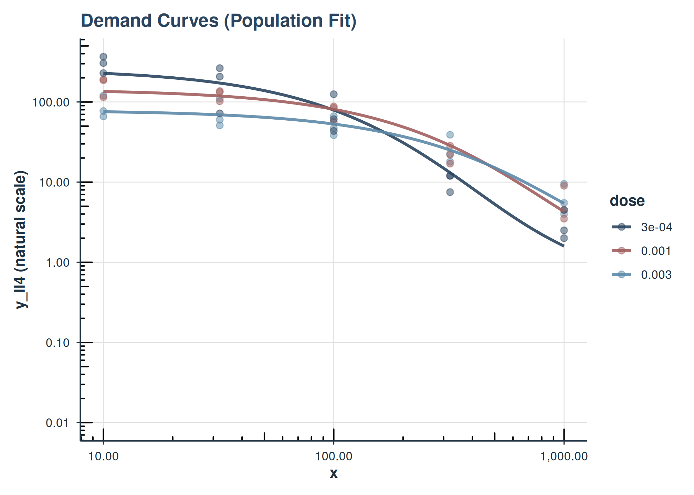
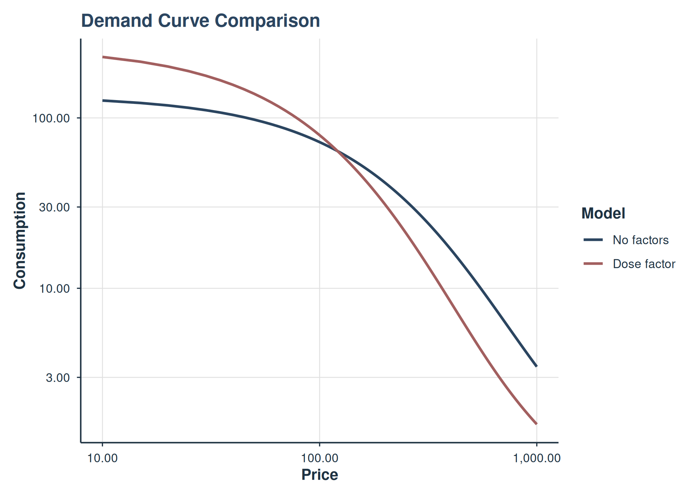
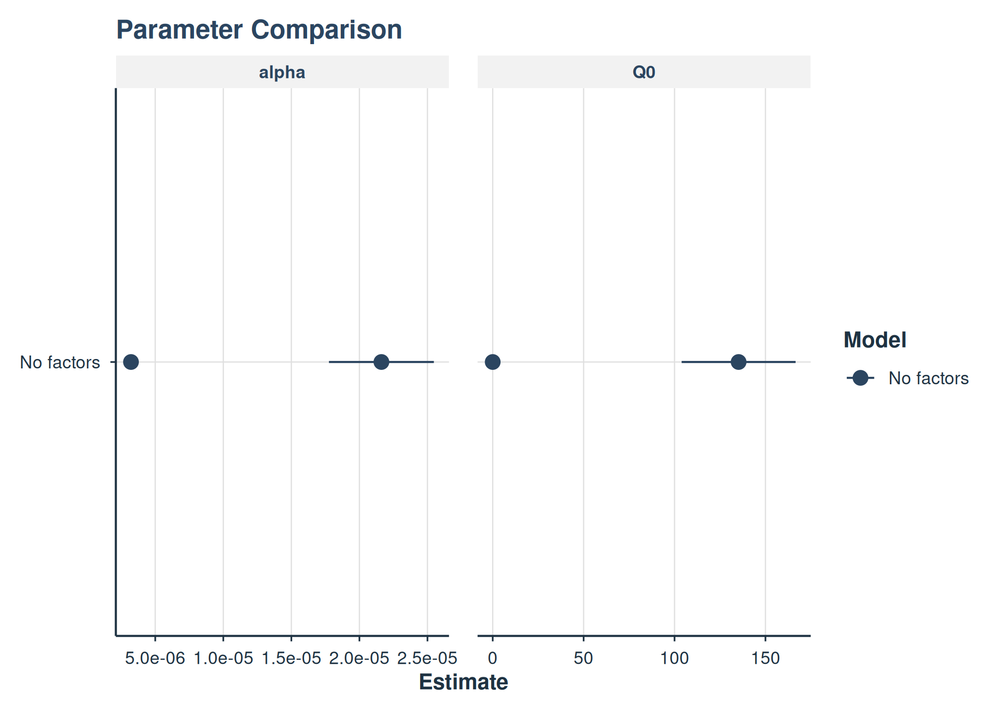

Advanced Mixed-Effects Demand Modeling
Brent Kaplan
2026-05-20
Source:vignettes/mixed-demand-advanced.Rmd
mixed-demand-advanced.RmdIntroduction
This vignette covers advanced topics for mixed-effects nonlinear
demand modeling with beezdemand. It assumes you are already
familiar with the basics covered in
vignette("mixed-demand"), including fitting models with
fit_demand_mixed(), inspecting results with
tidy() / glance() / augment(),
and basic plotting.
Topics covered here include:
- Multi-factor models (additive and interaction)
- Collapsing factor levels (asymmetric specifications for Q0 and alpha)
- Estimated marginal means and pairwise comparisons
- Multi-factor visualization with faceting
- Complex random effects structures
-
Continuous covariates and
fixed_rhs -
Trends with
emtrends -
Model comparison and overlay with
compare_models(),anova(), andplot_demand_overlay()
quick_nlme_control <- nlme::nlmeControl(
msMaxIter = 100,
niterEM = 20,
maxIter = 100, # Low iterations for speed
pnlsTol = 0.1,
tolerance = 1e-4, # Looser tolerance
opt = "nlminb",
msVerbose = FALSE
)
# Prepare data subsets used throughout
ko_alf <- ko[ko$drug == "Alfentanil", ]
# Fit the no-factor (intercept-only) model for comparison
fit_no_factors_alf <- fit_demand_mixed(
data = ko_alf,
y_var = "y_ll4",
x_var = "x",
id_var = "monkey",
equation_form = "zben",
nlme_control = quick_nlme_control,
start_value_method = "heuristic"
)
# Fit the one-factor model used as a baseline/fallback in later sections
fit_one_factor_dose <- fit_demand_mixed(
data = ko_alf,
y_var = "y_ll4",
x_var = "x",
id_var = "monkey",
factors = "dose",
equation_form = "zben",
nlme_control = quick_nlme_control,
start_value_method = "heuristic"
)Model with Two Factors (Additive)
Here, Q_{0} and \alpha vary by drug and dose additively. For
this, we need more data than just ko_alf, so we use ko.
Note: With complex models and small sample sizes, convergence can be
challenging. The start_value_method = “pooled_nls” is often more robust
for complex models.
This example is computationally intensive and is not run during
standard vignette building. To run it, set
BEEZDEMAND_VIGNETTE_MODE=full as an environment variable
before building. When successful, the output shows fixed-effect
estimates for each drug and dose combination on Q0 and alpha, plus
random-effects variance components.
Model with Two Factors and Interaction
This allows the effect of dose to be different for each drug (and vice-versa).
This example is computationally intensive and is not run during standard vignette building. The interaction model allows the effect of dose to differ by drug (and vice versa), producing drug:dose interaction terms in the fixed-effects table.
Using Different equation_form and y_var
The simplified equation form expects y_var to be raw consumption.
This example uses equation_form = "simplified" with
raw consumption values (no LL4 transformation needed). The simplified
equation handles zeros natively. When this example runs, the output
resembles the zben model output but with y as
the dependent variable.
Collapsing Factor Levels
Sometimes you might want to group levels of a factor, and you may
want different groupings for Q_{0}
versus \alpha. The
collapse_levels argument allows you to specify separate
collapsing schemes for each parameter.
Structure:
collapse_levels = list(
Q0 = list(factor_name = list(new_level = c("old_level1", "old_level2"), ...)),
alpha = list(factor_name = list(new_level = c("old_level1", ...), ...))
)Either Q0 or alpha (or both) can be omitted
to keep original levels for that parameter.
Example: Same collapsing for both parameters
# Ensure levels to collapse are present in ko_alf$dose
# levels(ko_alf$dose) are "0.001", "0.003", "3e-04"
fit_collapsed_same <- try(
fit_demand_mixed(
data = ko_alf,
y_var = "y_ll4",
x_var = "x",
id_var = "monkey",
factors = "dose",
collapse_levels = list(
Q0 = list(
dose = list(low_doses = c("3e-04", "0.001"), high_dose = "0.003")
),
alpha = list(
dose = list(low_doses = c("3e-04", "0.001"), high_dose = "0.003")
)
),
equation_form = "zben",
nlme_control = quick_nlme_control
),
silent = TRUE
)
if (
!is.null(fit_collapsed_same) &&
!inherits(fit_collapsed_same, "try-error") &&
!is.null(fit_collapsed_same$model)
) {
print(fit_collapsed_same)
cat("\nQ0 params:", fit_collapsed_same$param_info$num_params_Q0, "\n")
cat("alpha params:", fit_collapsed_same$param_info$num_params_alpha, "\n")
} else {
cat("Collapsed levels model failed to converge.\n")
}
#> Demand NLME Model Fit ('beezdemand_nlme' object)
#> ---------------------------------------------------
#>
#> Call:
#> fit_demand_mixed(data = ko_alf, y_var = "y_ll4", x_var = "x",
#> id_var = "monkey", factors = "dose", equation_form = "zben",
#> collapse_levels = list(Q0 = list(dose = list(low_doses = c("3e-04",
#> "0.001"), high_dose = "0.003")), alpha = list(dose = list(low_doses = c("3e-04",
#> "0.001"), high_dose = "0.003"))), nlme_control = quick_nlme_control)
#>
#> Equation Form Selected: zben
#> NLME Model Formula:
#> y_ll4 ~ Q0 * exp(-(10^alpha/Q0) * (10^Q0) * x)
#> <environment: 0x55df2880bd48>
#> Fixed Effects Structure (Q0): ~ dose_Q0
#> Fixed Effects Structure (alpha): ~ dose_alpha
#> Factors: dose
#> Interaction Term Included: FALSE
#> ID Variable for Random Effects: monkey
#>
#> Start Values Used (Fixed Effects Intercepts):
#> Q0 Intercept (log10 scale): 2.271
#> alpha Intercept (log10 scale): -3
#>
#> --- NLME Model Fit Summary (from nlme object) ---
#> Nonlinear mixed-effects model fit by maximum likelihood
#> Model: nlme_model_formula_obj
#> Data: data
#> Log-likelihood: 10.80738
#> Fixed: list(Q0 ~ dose_Q0, alpha ~ dose_alpha)
#> Q0.(Intercept) Q0.dose_Q0low_doses alpha.(Intercept)
#> 1.89628442 0.37072017 -4.64112061
#> alpha.dose_alphalow_doses
#> -0.04341491
#>
#> Random effects:
#> Formula: list(Q0 ~ 1, alpha ~ 1)
#> Level: monkey
#> Structure: Diagonal
#> Q0.(Intercept) alpha.(Intercept) Residual
#> StdDev: 4.401177e-06 2.693877e-06 0.1903097
#>
#> Number of Observations: 45
#> Number of Groups: 3
#>
#> --- Additional Fit Statistics ---
#> Log-likelihood: 10.81
#> AIC: -7.615
#> BIC: 5.032
#> ---------------------------------------------------
#>
#> Q0 params: 2
#> alpha params: 2Example: Different collapsing for Q0 and alpha
This is particularly useful when you want fine-grained distinctions for one parameter but not the other. For instance, you might hypothesize that maximum consumption (Q_{0}) varies by dose, but sensitivity (\alpha) does not.
# Q0: keep 2 collapsed levels (low vs high)
# alpha: collapse all to 1 level (intercept only)
fit_collapsed_asymmetric <- try(
fit_demand_mixed(
data = ko_alf,
y_var = "y_ll4",
x_var = "x",
id_var = "monkey",
factors = "dose",
collapse_levels = list(
Q0 = list(
dose = list(low_doses = c("3e-04", "0.001"), high_dose = "0.003")
),
alpha = list(dose = list(all_doses = c("3e-04", "0.001", "0.003")))
),
equation_form = "zben",
nlme_control = quick_nlme_control
),
silent = TRUE
)
if (
!is.null(fit_collapsed_asymmetric) &&
!inherits(fit_collapsed_asymmetric, "try-error") &&
!is.null(fit_collapsed_asymmetric$model)
) {
print(fit_collapsed_asymmetric)
cat("\nQ0 params:", fit_collapsed_asymmetric$param_info$num_params_Q0, "\n")
cat(
"alpha params:",
fit_collapsed_asymmetric$param_info$num_params_alpha,
"\n"
)
cat(
"\nQ0 formula:",
fit_collapsed_asymmetric$formula_details$fixed_effects_formula_str_Q0,
"\n"
)
cat(
"alpha formula:",
fit_collapsed_asymmetric$formula_details$fixed_effects_formula_str_alpha,
"\n"
)
} else {
cat("Asymmetric collapsed levels model failed to converge.\n")
}
#> Demand NLME Model Fit ('beezdemand_nlme' object)
#> ---------------------------------------------------
#>
#> Call:
#> fit_demand_mixed(data = ko_alf, y_var = "y_ll4", x_var = "x",
#> id_var = "monkey", factors = "dose", equation_form = "zben",
#> collapse_levels = list(Q0 = list(dose = list(low_doses = c("3e-04",
#> "0.001"), high_dose = "0.003")), alpha = list(dose = list(all_doses = c("3e-04",
#> "0.001", "0.003")))), nlme_control = quick_nlme_control)
#>
#> Equation Form Selected: zben
#> NLME Model Formula:
#> y_ll4 ~ Q0 * exp(-(10^alpha/Q0) * (10^Q0) * x)
#> <environment: 0x55df2a1169c8>
#> Fixed Effects Structure (Q0): ~ dose_Q0
#> Fixed Effects Structure (alpha): ~ 1
#> Factors: dose
#> Interaction Term Included: FALSE
#> ID Variable for Random Effects: monkey
#>
#> Start Values Used (Fixed Effects Intercepts):
#> Could not determine Q0/alpha intercepts from start_values_used structure.
#> Full start_values_used vector:
#> [1] 2.271 0.000 -3.000
#>
#> --- NLME Model Fit Summary (from nlme object) ---
#> Nonlinear mixed-effects model fit by maximum likelihood
#> Model: nlme_model_formula_obj
#> Data: data
#> Log-likelihood: 10.73793
#> Fixed: list(Q0 ~ dose_Q0, alpha ~ 1)
#> Q0.(Intercept) Q0.dose_Q0low_doses alpha
#> 1.9041039 0.3572637 -4.6750675
#>
#> Random effects:
#> Formula: list(Q0 ~ 1, alpha ~ 1)
#> Level: monkey
#> Structure: Diagonal
#> Q0.(Intercept) alpha Residual
#> StdDev: 4.409119e-06 2.697381e-06 0.1906036
#>
#> Number of Observations: 45
#> Number of Groups: 3
#>
#> --- Additional Fit Statistics ---
#> Log-likelihood: 10.74
#> AIC: -9.476
#> BIC: 1.364
#> ---------------------------------------------------
#>
#> Q0 params: 2
#> alpha params: 1
#>
#> Q0 formula: ~ dose_Q0
#> alpha formula: ~ 1Note: When all levels of a factor are collapsed to a single level for a parameter, that factor is automatically removed from the formula for that parameter (it contributes only to the intercept). A message will inform you when this occurs.
EMMs and Comparisons with Collapsed Factors
When using collapse_levels, the
get_demand_param_emms() and
get_demand_comparisons() functions automatically handle the
asymmetric factor structures. EMMs will be computed using the collapsed
levels, and comparisons will only be performed when there are multiple
levels to compare.
Differential Collapsing Output: When Q0 and alpha
have different numbers of factor levels (e.g., Q0 keeps original
dose levels while alpha collapses to fewer groups), the EMM
output will include separate factor columns:
- Original factor column (e.g.,
dose) for the uncollapsed parameter (Q0) - Suffixed column (e.g.,
dose_alpha) for the collapsed parameter (alpha)
This results in a cross-joined table showing all combinations of Q0 levels and alpha levels. For example, if dose has 5 original levels and alpha collapses to 2 groups, the EMM table will have 10 rows (5 × 2).
# Using the asymmetric collapsed model from above (if it converged)
if (
!is.null(fit_collapsed_asymmetric) &&
!inherits(fit_collapsed_asymmetric, "try-error") &&
!is.null(fit_collapsed_asymmetric$model)
) {
cat("--- EMMs with collapsed factors ---\n")
# EMMs will show collapsed Q0 levels but single alpha value
collapsed_emms <- get_demand_param_emms(
fit_obj = fit_collapsed_asymmetric,
factors_in_emm = "dose", # Use original factor name
include_ev = TRUE
)
print(collapsed_emms)
cat("\n--- Comparisons with collapsed factors ---\n")
# Q0 will have comparisons (2 levels), alpha will have none (1 level)
collapsed_comparisons <- get_demand_comparisons(
fit_obj = fit_collapsed_asymmetric,
compare_specs = ~dose, # Use original factor name
params_to_compare = c("Q0", "alpha")
)
cat("\nQ0 contrasts (collapsed levels):\n")
print(collapsed_comparisons$Q0$contrasts_log10)
cat("\nalpha contrasts (intercept-only, no comparisons):\n")
print(collapsed_comparisons$alpha$contrasts_log10)
} else {
cat("Asymmetric collapsed model not available for EMM demonstration.\n")
}
#> --- EMMs with collapsed factors ---
#> # A tibble: 2 × 16
#> dose Q0_param_log10 LCL_Q0_param_log10 UCL_Q0_param_log10 Q0_natural
#> <fct> <dbl> <dbl> <dbl> <dbl>
#> 1 high_dose 1.90 1.77 2.04 80.2
#> 2 low_doses 2.26 2.16 2.36 183.
#> # ℹ 11 more variables: LCL_Q0_natural <dbl>, UCL_Q0_natural <dbl>,
#> # alpha_param_log10 <dbl>, LCL_alpha_param_log10 <dbl>,
#> # UCL_alpha_param_log10 <dbl>, alpha_natural <dbl>, LCL_alpha_natural <dbl>,
#> # UCL_alpha_natural <dbl>, EV <dbl>, LCL_EV <dbl>, UCL_EV <dbl>
#>
#> --- Comparisons with collapsed factors ---
#>
#> Q0 contrasts (collapsed levels):
#> # A tibble: 1 × 8
#> contrast_definition estimate SE df lower.CL upper.CL t.ratio p.value
#> <chr> <dbl> <dbl> <dbl> <dbl> <dbl> <dbl> <dbl>
#> 1 high_dose - low_doses -0.357 0.0803 40 -0.520 -0.195 -4.45 6.73e-5
#>
#> alpha contrasts (intercept-only, no comparisons):
#> # A tibble: 0 × 0Visualizing Multi-Factor Models
Plotting a Two-Factor Model with Faceting
Let’s use fit_two_factors_add (if it converged: y_ll4 ~ drug + dose). We can facet by one factor and color by another.
# Assuming fit_two_factors_add was successfully created earlier
# If it failed, this chunk won't produce a plot.
active_two_factor_fit <- if (
!is.null(fit_two_factors_add) && !is.null(fit_two_factors_add$model)
) {
fit_two_factors_add
} else {
# Fallback to a simpler model if the two-factor one failed in the vignette
if (!is.null(fit_one_factor_dose$model)) fit_one_factor_dose else NULL
}
if (
!is.null(active_two_factor_fit$model) &&
!is.null(active_two_factor_fit$param_info$factors) &&
length(active_two_factor_fit$param_info$factors) >= 1
) {
# Determine factors for aesthetics based on what's in active_two_factor_fit
color_factor <- if ("dose" %in% active_two_factor_fit$param_info$factors) {
"dose"
} else {
NULL
}
facet_factor_name <- if (
"drug" %in% active_two_factor_fit$param_info$factors
) {
"drug"
} else {
# If only 'dose' is available from fit_one_factor_dose, we can't facet by 'drug'
# So, maybe facet by dose instead, or don't facet.
if (
"dose" %in%
active_two_factor_fit$param_info$factors &&
is.null(color_factor)
) {
color_factor <- "dose" # color by dose if not faceting by it
NULL # No faceting
} else {
NULL
}
}
facet_formula_plot <- if (!is.null(facet_factor_name)) {
stats::as.formula(paste("~", facet_factor_name))
} else {
NULL
}
plot(
active_two_factor_fit,
inv_fun = ll4_inv,
color_by = color_factor,
# linetype_by = if("dose" %in% active_two_factor_fit$param_info$factors) "dose" else NULL, # Example
facet_formula = facet_formula_plot,
title = "Demand Curves (Population Fit)",
observed_point_alpha = 0.5,
ind_line_alpha = .5
)
} else {
cat(
"A suitable two-factor or one-factor model object not available for this plotting example.\n"
)
}
This example attempts to use fit_two_factors_add. If that model didn’t converge (common with minimal iterations for vignette speed), it falls back to fit_one_factor_dose and adjusts aesthetics. The plot will show population lines, colored by one factor and faceted by another (if two factors are available).
Plotting a Model Fit with equation_form = “simplified”
If you fit a model using equation_form = “simplified” (which models raw y), the inv_fun is typically identity because predictions are already on the natural scale.
# Assuming fit_simplified_example converged earlier
if (
!is.null(fit_simplified_example) && !is.null(fit_simplified_example$model)
) {
plot(
fit_simplified_example,
inv_fun = identity, # Predictions are already on raw y scale
color_by = "dose",
shape_by = "dose",
title = "Demand Model ('simplified' equation, Raw Y)"
)
} else {
cat("fit_simplified_example model object not available for plotting.\n")
}
#> fit_simplified_example model object not available for plotting.Users can further customize the returned ggplot object by adding more layers or theme adjustments. For instance, to add custom axis limits or breaks:
plot_object +
ggplot2::scale_x_continuous(
limits = c(0, 1000),
breaks = c(0, 100, 500, 1000)
)Analyzing Estimated Marginal Means
(get_demand_param_emms)
This function helps interpret how factors affect Q_{0} and \alpha, providing estimates on both log10 and natural scales, and optionally Essential Value (EV).
Note on collapse_levels: When a model
is fit using collapse_levels with asymmetric specifications
(different collapsing for Q0 and alpha), the EMM functions automatically
use the appropriate collapsed factor names for each parameter. You still
specify the original factor name in factors_in_emm, and the
output will show the collapsed levels. If a parameter has only one level
(intercept-only), that parameter’s values will be the same across all
rows.
# We'll use a model with factors.
# If fit_two_factors_add converged, use it. Otherwise, use fit_one_factor_dose.
# For the vignette, let's ensure we use one that is likely available.
# If fit_two_factors_add is NULL (failed to converge in example), this will use fit_one_factor_dose
emm_model_to_use <- if (
!is.null(fit_two_factors_add) && !is.null(fit_two_factors_add$model)
) {
fit_two_factors_add
} else if (!is.null(fit_one_factor_dose$model)) {
fit_one_factor_dose
} else {
NULL
}
if (!is.null(emm_model_to_use)) {
cat(
"--- EMMs for model with factors:",
paste(emm_model_to_use$param_info$factors, collapse = ", "),
"---\n"
)
factors_for_emms <- emm_model_to_use$param_info$factors
demand_emms_output <- get_demand_param_emms(
fit_obj = emm_model_to_use,
factors_in_emm = factors_for_emms, # Use factors from the model
include_ev = TRUE
)
print(demand_emms_output)
cat("\n--- EMMs for observed factor combinations only: ---\n")
# This is useful if the EMM grid includes combinations not in data
observed_demand_emms <- get_observed_demand_param_emms(
fit_obj = emm_model_to_use,
factors_in_emm = factors_for_emms,
include_ev = TRUE
)
print(observed_demand_emms)
} else {
cat(
"No suitable model with factors converged for EMM analysis in the vignette.\n"
)
}
#> --- EMMs for model with factors: dose ---
#> # A tibble: 3 × 16
#> dose Q0_param_log10 LCL_Q0_param_log10 UCL_Q0_param_log10 Q0_natural
#> <fct> <dbl> <dbl> <dbl> <dbl>
#> 1 3e-04 2.42 2.27 2.56 260.
#> 2 0.001 2.16 2.03 2.28 144.
#> 3 0.003 1.90 1.78 2.02 78.8
#> # ℹ 11 more variables: LCL_Q0_natural <dbl>, UCL_Q0_natural <dbl>,
#> # alpha_param_log10 <dbl>, LCL_alpha_param_log10 <dbl>,
#> # UCL_alpha_param_log10 <dbl>, alpha_natural <dbl>, LCL_alpha_natural <dbl>,
#> # UCL_alpha_natural <dbl>, EV <dbl>, LCL_EV <dbl>, UCL_EV <dbl>
#>
#> --- EMMs for observed factor combinations only: ---
#> # A tibble: 3 × 16
#> dose Q0_param_log10 LCL_Q0_param_log10 UCL_Q0_param_log10 Q0_natural
#> <fct> <dbl> <dbl> <dbl> <dbl>
#> 1 3e-04 2.42 2.27 2.56 260.
#> 2 0.001 2.16 2.03 2.28 144.
#> 3 0.003 1.90 1.78 2.02 78.8
#> # ℹ 11 more variables: LCL_Q0_natural <dbl>, UCL_Q0_natural <dbl>,
#> # alpha_param_log10 <dbl>, LCL_alpha_param_log10 <dbl>,
#> # UCL_alpha_param_log10 <dbl>, alpha_natural <dbl>, LCL_alpha_natural <dbl>,
#> # UCL_alpha_natural <dbl>, EV <dbl>, LCL_EV <dbl>, UCL_EV <dbl>Performing Pairwise Comparisons
(get_demand_comparisons)
Compare levels of factors for Q_{0} and \alpha.
Note on collapse_levels: When using
models fit with asymmetric collapse_levels, comparisons are
only performed for parameters that have multiple levels. If a parameter
was collapsed to a single level (intercept-only), the comparisons for
that parameter will be empty.
# Using the same emm_model_to_use
if (
!is.null(emm_model_to_use) && length(emm_model_to_use$param_info$factors) > 0
) {
factors_present <- emm_model_to_use$param_info$factors
if ("dose" %in% factors_present) {
cat(
"--- Pairwise comparisons for 'dose' (averaging over other factors if any): ---\n"
)
comparisons_dose <- get_demand_comparisons(
fit_obj = emm_model_to_use,
compare_specs = ~dose,
contrast_type = "pairwise",
adjust = "fdr",
report_ratios = TRUE
)
print(comparisons_dose)
}
if (all(c("drug", "dose") %in% factors_present)) {
cat(
"\n--- Pairwise comparisons for 'drug' within each level of 'dose': ---\n"
)
# EMMs calculated over drug*dose, then contrast drug within each dose
comparisons_drug_by_dose <- get_demand_comparisons(
fit_obj = emm_model_to_use,
compare_specs = ~ drug * dose,
contrast_type = "pairwise",
contrast_by = "dose", # Compare 'drug' levels, holding 'dose' constant
adjust = "fdr",
report_ratios = TRUE
)
print(comparisons_drug_by_dose)
}
} else {
cat(
"No suitable model with factors converged for comparisons in the vignette.\n"
)
}
#> --- Pairwise comparisons for 'dose' (averaging over other factors if any): ---
#> Demand Parameter Comparisons (from beezdemand_nlme fit)
#> EMMs computed over: ~dose
#> Contrast type: pairwise
#> P-value adjustment method: fdr
#> ==================================================Advanced Topics
Note: This section covers advanced modeling techniques for experienced users. These advanced topics require deeper understanding of mixed-effects models and may be computationally intensive.
Performance Note: The code examples in the sections
below are computationally intensive and are not evaluated during
standard vignette building. The code is shown for reference. To run
these examples, set the environment variable
BEEZDEMAND_VIGNETTE_MODE=full before building
vignettes.
More Complex Random Effects Structures
This example shows how to specify a more complex random-effects structure (e.g., random slopes) for Q_{0} and \alpha.
Now let’s demonstrate how to extract individual-level predicted
coefficients using the get_individual_coefficients()
function. This combines fixed and random effects to calculate
individual-level parameter estimates for each subject.
Continuous Covariates and fixed_rhs
In addition to factor predictors, you can include continuous
covariates in the fixed-effects linear models for Q0 and
alpha.
There are two convenient ways to do this:
- Add continuous covariates additively using the
continuous_covariatesargument (no formula writing required). - Specify a full right-hand-side using
fixed_rhs(formula), which gives you complete control, including interactions (e.g., factor-by-continuous).
Below we demonstrate both, using a made-up continuous covariate
age assigned per subject (monkey).
A) Additive continuous covariate via
continuous_covariates
Here we keep a single factor (dose) and add
age as an additive continuous covariate. The RHS becomes
~ 1 + dose + age for both parameters.
B) fixed_rhs with a factor (drug) and a continuous covariate (dose)
Here we specify drug as a factor but treat
dose as a continuous covariate (dose_num, a
numeric version of dose), and include age as
an additional continuous covariate. This uses a shared RHS for
Q0 and alpha:
~ 1 + drug + dose_num + age.
Trends with emtrends
We can examine how the parameters change with continuous covariates
using get_demand_param_trends(), which wraps
emmeans::emtrends() and returns tidy results for Q0 and
alpha trends on the log10 scale.
Below we compute trends with respect to age and
dose_num, first overall and then by drug (if
the model includes drug as a factor).
Model Comparison and Overlay
Comparing Nested Models
Use anova() to formally compare nested NLME models via
likelihood ratio test. For example, compare a one-factor model against a
no-factor (intercept-only) baseline:
# Compare one-factor dose model vs intercept-only
anova(fit_no_factors_alf, fit_one_factor_dose)
#> Model
#> structure(list(modelStruct = structure(list(reStruct = structure(list(monkey = structure(c(-10.6742009396964, -11.1664060891139), formula = structure(list(Q0 ~ 1, alpha ~ 1), class = "listForm"), Dimnames = list(c("Q0", "alpha"), c("Q0", "alpha")), class = c("pdDiag", "pdMat"))), settings = c(0L, 1L, 0L, 1L), class = "reStruct", plen = c(monkey = 2L))), class = c("lmeStructInt", "nlmeStruct", "lmeStruct", "modelStruct"), pmap = structure(c(TRUE, TRUE), dim = 2:1, dimnames = list(NULL, "reStruct")), fixedSigma = FALSE), dims = list(N = 45L, Q = 1L, qvec = c(monkey = 2, 0, 0), ngrps = c(monkey = 3L, X = 1L, y = 1L), ncol = c(monkey = 2, 2, 1)), contrasts = list(), coefficients = list(fixed = c(Q0 = 2.13111288451249, alpha = -4.66522247407214), random = list(monkey = structure(c(3.25552819984982e-11, 1.8241566470199e-10, -2.14970946700134e-10, -3.64514481514856e-10, 5.32485573347258e-11, 3.1126592418032e-10), dim = 3:2, dimnames = list(c("A", "B", "C"), c("Q0", "alpha"))))), varFix = structure(c(0.002518767581279, -0.000993766413664752, -0.000993766413664752, 0.00149109228167247), dim = c(2L, 2L), dimnames = list(c("Q0", "alpha"), c("Q0", "alpha"))), sigma = 0.227557261543747, apVar = "Non-positive definite approximate variance-covariance", logLik = 2.76366778620325, numIter = 2, groups = structure(list(monkey = structure(c(1L, 1L, 1L, 1L, 1L, 2L, 2L, 2L, 2L, 2L, 3L, 3L, 3L, 3L, 3L, 1L, 1L, 1L, 1L, 1L, 2L, 2L, 2L, 2L, 2L, 3L, 3L, 3L, 3L, 3L, 1L, 1L, 1L, 1L, 1L, 2L, 2L, 2L, 2L, 2L, 3L, 3L, 3L, 3L, 3L), levels = c("A", "B", "C"), class = "factor")), row.names = c("1", "2", "3", "4", "5", "6", "7", "8", "9", "10", "11", "12", "13", "14", "15", "16", "17", "18", "19", "20", "21", "22", "23", "24", "25", "26", "27", "28", "29", "30", "31", "32", "33", "34", "35", "36", "37", "38", "39", "40", "41", "42", "43", "44", "45"), class = "data.frame"), call = nlme.formula(model = nlme_model_formula_obj, data = data, fixed = list(Q0 ~ 1, alpha ~ 1), random = structure(numeric(0), class = c("pdDiag", "pdMat"), formula = structure(list( Q0 ~ 1, alpha ~ 1), class = "listForm"), Dimnames = list(NULL, NULL)), groups = groups_formula, start = start_values, method = method, control = control_obj), method = "ML", fitted = structure(c(2.10207833870312, 2.03958716224111, 1.85793654166641, 1.37392999243176, 0.540568421087688, 2.10207833870312, 2.03958716224111, 1.85793654166641, 1.37392999243176, 0.540568421087688, 2.10207833870312, 2.03958716224111, 1.85793654166641, 1.37392999243176, 0.540568421087688, 2.10207833870312, 2.03958716224111, 1.85793654166641, 1.37392999243176, 0.540568421087688, 2.10207833870312, 2.03958716224111, 1.85793654166641, 1.37392999243176, 0.540568421087688, 2.10207833870312, 2.03958716224111, 1.85793654166641, 1.37392999243176, 0.540568421087688, 2.10207833870312, 2.03958716224111, 1.85793654166641, 1.37392999243176, 0.540568421087688, 2.10207833870312, 2.03958716224111, 1.85793654166641, 1.37392999243176, 0.540568421087688, 2.10207833870312, 2.03958716224111, 1.85793654166641, 1.37392999243176, 0.540568421087688, 2.10207833875771, 2.03958716234207, 1.8579365418935, 1.37392999292296, 0.54056842167408, 2.10207833886987, 2.03958716237478, 1.85793654170896, 1.37392999227372, 0.540568420795044, 2.10207833848177, 2.03958716200649, 1.85793654139678, 1.37392999209861, 0.540568420793939, 2.10207833875771, 2.03958716234207, 1.8579365418935, 1.37392999292296, 0.54056842167408, 2.10207833886987, 2.03958716237478, 1.85793654170896, 1.37392999227372, 0.540568420795044, 2.10207833848177, 2.03958716200649, 1.85793654139678, 1.37392999209861, 0.540568420793939, 2.10207833875771, 2.03958716234207, 1.8579365418935, 1.37392999292296, 0.54056842167408, 2.10207833886987, 2.03958716237478, 1.85793654170896, 1.37392999227372, 0.540568420795044, 2.10207833848177, 2.03958716200649, 1.85793654139678, 1.37392999209861, 0.540568420793939), dim = c(45L, 2L), dimnames = list(c("1", "2", "3", "4", "5", "6", "7", "8", "9", "10", "11", "12", "13", "14", "15", "16", "17", "18", "19", "20", "21", "22", "23", "24", "25", "26", "27", "28", "29", "30", "31", "32", "33", "34", "35", "36", "37", "38", "39", "40", "41", "42", "43", "44", "45"), c("fixed", "monkey"))), residuals = structure(c(-0.0210912912772656, 0.00180552365868403, -0.0351148908114562, 0.217134661526384, 0.437168513375249, -0.215587610442036, -0.261435903479876, -0.185838661480549, -0.0217470506838719, 0.199912855211137, -0.282534397439238, -0.332016970094339, -0.27247576274035, -0.118656453062497, 0.0619148597451359, 0.181222890080329, 0.0842644790729628, 0.0865461322942374, -0.0315068481277727, 0.413690635424819, 0.168600497531335, 0.0955454894484089, 0.0689201694128787, 0.080915032144429, 0.00422074585024368, -0.0432728513955216, -0.0309869894761436, -0.105888083192535, -0.143479771105326, 0.112908543713145, 0.462587725554958, 0.382016764651069, 0.238973471786363, -0.29474351051403, 0.112908543713145, 0.382932875887922, 0.276383183274939, -0.0726066988140388, -0.29474351051403, -0.139883909371965, 0.258704351209302, -0.182254661769724, -0.219447254389118, -0.498834419835748, -0.232956190743119, -0.0210912913318593, 0.00180552355772434, -0.0351148910385437, 0.217134661035184, 0.437168512788856, -0.215587610608787, -0.261435903613538, -0.185838661523096, -0.0217470505258279, 0.199912855503781, -0.282534397217893, -0.332016969859718, -0.272475762470714, -0.118656452729342, 0.0619148600388847, 0.181222890025735, 0.0842644789720031, 0.0865461320671499, -0.0315068486189722, 0.413690634838427, 0.168600497364584, 0.0955454893147469, 0.0689201693703307, 0.080915032302473, 0.00422074614288781, -0.0432728511741769, -0.030986989241522, -0.1058880829229, -0.14347977077217, 0.112908544006894, 0.462587725500365, 0.38201676455011, 0.238973471559276, -0.294743511005229, 0.112908543126752, 0.38293287572117, 0.276383183141277, -0.0726066988565868, -0.294743510355986, -0.13988390907932, 0.258704351430647, -0.182254661535103, -0.219447254119483, -0.498834419502592, -0.23295619044937), dim = c(45L, 2L), dimnames = list(c("1", "2", "3", "4", "5", "6", "7", "8", "9", "10", "11", "12", "13", "14", "15", "16", "17", "18", "19", "20", "21", "22", "23", "24", "25", "26", "27", "28", "29", "30", "31", "32", "33", "34", "35", "36", "37", "38", "39", "40", "41", "42", "43", "44", "45"), c("fixed", "monkey")), std = c(0.227557261543747, 0.227557261543747, 0.227557261543747, 0.227557261543747, 0.227557261543747, 0.227557261543747, 0.227557261543747, 0.227557261543747, 0.227557261543747, 0.227557261543747, 0.227557261543747, 0.227557261543747, 0.227557261543747, 0.227557261543747, 0.227557261543747, 0.227557261543747, 0.227557261543747, 0.227557261543747, 0.227557261543747, 0.227557261543747, 0.227557261543747, 0.227557261543747, 0.227557261543747, 0.227557261543747, 0.227557261543747, 0.227557261543747, 0.227557261543747, 0.227557261543747, 0.227557261543747, 0.227557261543747, 0.227557261543747, 0.227557261543747, 0.227557261543747, 0.227557261543747, 0.227557261543747, 0.227557261543747, 0.227557261543747, 0.227557261543747, 0.227557261543747, 0.227557261543747, 0.227557261543747, 0.227557261543747, 0.227557261543747, 0.227557261543747, 0.227557261543747)), plist = list(Q0 = list(fixed = TRUE, random = list(monkey = TRUE)), alpha = list(fixed = TRUE, random = list(monkey = TRUE))), map = list(fmap = list(Q0 = 1, alpha = 2), rmap = list(monkey = list(Q0 = 1, alpha = 2)), rmapRel = list(monkey = list(Q0 = 1, alpha = 2)), bmap = c(0, monkey = 6)), fixDF = structure(list(X = c(Q0 = 41, alpha = 41), terms = c(Q0 = 41, alpha = 41)), assign = list(Q0 = 1, alpha = 2), varFixFact = structure(c(-0.0430865793342916, -0.0257354670163336, 0, 0.0386146640756134), dim = c(2L, 2L))), formula = y_ll4 ~ Q0 * exp(-(10^alpha/Q0) * (10^Q0) * x)), class = c("nlme", "lme")) 1
#> structure(list(modelStruct = structure(list(reStruct = structure(list(monkey = structure(c(-10.6743584582821, -11.1653749433608), formula = structure(list(Q0 ~ 1, alpha ~ 1), class = "listForm"), Dimnames = list(c("Q0.(Intercept)", "alpha.(Intercept)"), c("Q0.(Intercept)", "alpha.(Intercept)")), class = c("pdDiag", "pdMat"))), settings = c(0L, 1L, 0L, 1L), class = "reStruct", plen = c(monkey = 2L))), class = c("lmeStructInt", "nlmeStruct", "lmeStruct", "modelStruct"), pmap = structure(c(TRUE, TRUE), dim = 2:1, dimnames = list(NULL, "reStruct")), fixedSigma = FALSE), dims = list(N = 45L, Q = 1L, qvec = c(monkey = 2, 0, 0), ngrps = c(monkey = 3L, X = 1L, y = 1L), ncol = c(monkey = 2, 6, 1)), contrasts = list(dose = structure(c(0, 1, 0, 0, 0, 1), dim = 3:2, dimnames = list(c("3e-04", "0.001", "0.003"), c("2", "3")))), coefficients = list(fixed = c("Q0.(Intercept)" = 2.41534969749575, Q0.dose0.001 = -0.257733998017947, Q0.dose0.003 = -0.519065273739336, "alpha.(Intercept)" = -4.65085466207242, alpha.dose0.001 = -0.0840812818899326, alpha.dose0.003 = 0.00973404785410541), random = list(monkey = structure(c(8.8302970682857e-11, 1.24626510987831e-10, -2.12929481670785e-10, -3.42485257121594e-10, 3.35230587439245e-11, 3.08962198377629e-10), dim = 3:2, dimnames = list(c("A", "B", "C"), c("Q0.(Intercept)", "alpha.(Intercept)"))))), varFix = structure(c(0.00483094656738683, -0.00483094656267421, -0.00483094656267421, -0.00226083064364111, 0.00226083064364111, 0.00226083064364111, -0.00483094656267421, 0.00856034352770773, 0.00483094656267421, 0.00226083064364111, -0.00372868756603682, -0.00226083064364111, -0.00483094656267421, 0.00483094656267421, 0.00833279601034647, 0.00226083064364111, -0.00226083064364111, -0.00320415501607924, -0.00226083064364111, 0.00226083064364111, 0.00226083064364111, 0.00237901775893379, -0.00237901775716869, -0.00237901775716869, 0.00226083064364111, -0.00372868756603682, -0.00226083064364111, -0.00237901775716869, 0.0046319533067913, 0.00237901775716869, 0.00226083064364111, -0.00226083064364111, -0.00320415501607924, -0.00237901775716869, 0.00237901775716869, 0.0050193565658835), dim = c(6L, 6L), dimnames = list(c("Q0.(Intercept)", "Q0.dose0.001", "Q0.dose0.003", "alpha.(Intercept)", "alpha.dose0.001", "alpha.dose0.003"), c("Q0.(Intercept)", "Q0.dose0.001", "Q0.dose0.003", "alpha.(Intercept)", "alpha.dose0.001", "alpha.dose0.003"))), sigma = 0.162557410572928, apVar = "Non-positive definite approximate variance-covariance", logLik = 17.9003479634721, numIter = 2, groups = structure(list( monkey = structure(c(1L, 1L, 1L, 1L, 1L, 2L, 2L, 2L, 2L, 2L, 3L, 3L, 3L, 3L, 3L, 1L, 1L, 1L, 1L, 1L, 2L, 2L, 2L, 2L, 2L, 3L, 3L, 3L, 3L, 3L, 1L, 1L, 1L, 1L, 1L, 2L, 2L, 2L, 2L, 2L, 3L, 3L, 3L, 3L, 3L), levels = c("A", "B", "C"), class = "factor")), row.names = c("1", "2", "3", "4", "5", "6", "7", "8", "9", "10", "11", "12", "13", "14", "15", "16", "17", "18", "19", "20", "21", "22", "23", "24", "25", "26", "27", "28", "29", "30", "31", "32", "33", "34", "35", "36", "37", "38", "39", "40", "41", "42", "43", "44", "45"), class = "data.frame"), call = nlme.formula(model = nlme_model_formula_obj, data = data, fixed = list(Q0 ~ dose, alpha ~ dose), random = structure(numeric(0), class = c("pdDiag", "pdMat"), formula = structure(list(Q0 ~ 1, alpha ~ 1), class = "listForm"), Dimnames = list(NULL, NULL)), groups = groups_formula, start = start_values, method = method, control = control_obj), method = "ML", fitted = structure(c(1.8783740462511, 1.83956442179413, 1.7246043987228, 1.39964763702214, 0.734114149872722, 1.8783740462511, 1.83956442179413, 1.7246043987228, 1.39964763702214, 0.734114149872722, 1.8783740462511, 1.83956442179413, 1.7246043987228, 1.39964763702214, 0.734114149872722, 2.13131187284304, 2.07456672573546, 1.90854850119911, 1.45715998771859, 0.632798102415721, 2.13131187284304, 2.07456672573546, 1.90854850119911, 1.45715998771859, 0.632798102415721, 2.13131187284304, 2.07456672573546, 1.90854850119911, 1.45715998771859, 0.632798102415721, 2.35790124709964, 2.23627866608367, 1.8986108798297, 1.11799291298204, 0.217540186261623, 2.35790124709964, 2.23627866608367, 1.8986108798297, 1.11799291298204, 0.217540186261623, 2.35790124709964, 2.23627866608367, 1.8986108798297, 1.11799291298204, 0.217540186261623, 1.87837404634983, 1.83956442191509, 1.72460439890652, 1.39964763735587, 0.734114150347089, 1.87837404636923, 1.83956442189835, 1.7246043987873, 1.39964763698728, 0.734114149713062, 1.87837404603424, 1.83956442156894, 1.72460439847458, 1.39964763672326, 0.734114149558013, 2.13131187294664, 2.07456672587136, 1.90854850142382, 1.45715998813639, 0.632798102927674, 2.13131187295814, 2.07456672583034, 1.90854850123762, 1.45715998762752, 0.632798102214452, 2.13131187262435, 2.07456672550469, 1.90854850093589, 1.45715998739187, 0.632798102105036, 2.35790124722114, 2.23627866627255, 1.89861088018332, 1.11799291355844, 0.21754018659521, 2.35790124720356, 2.23627866614522, 1.89861087978482, 1.11799291277055, 0.217540186109173, 2.35790124687422, 2.23627866583325, 1.89861087952097, 1.11799291261713, 0.217540186080486), dim = c(45L, 2L), dimnames = list(c("1", "2", "3", "4", "5", "6", "7", "8", "9", "10", "11", "12", "13", "14", "15", "16", "17", "18", "19", "20", "21", "22", "23", "24", "25", "26", "27", "28", "29", "30", "31", "32", "33", "34", "35", "36", "37", "38", "39", "40", "41", "42", "43", "44", "45"), c("fixed", "monkey"))), residuals = structure(c(0.202613001174749, 0.20182826410567, 0.0982172521321552, 0.191417016936011, 0.243622784590214, 0.0081166820099785, -0.0614131630328896, -0.0525065185369371, -0.0474646952742452, 0.00636712642610315, -0.0588301049872235, -0.131994229647353, -0.139143619796738, -0.144374097652871, -0.131630869039898, 0.151989355940404, 0.0492849155786148, 0.0359341727615361, -0.114736843414603, 0.321460954096786, 0.139366963391411, 0.060565925954061, 0.0183082098801775, -0.00231496314240176, -0.0880089354777893, -0.0725063855354464, -0.0659665529704916, -0.156500042725237, -0.226709766392157, 0.0206788623851121, 0.206764817158434, 0.185325260808511, 0.198299133623071, -0.0388064310643048, 0.43593677853921, 0.127109967491398, 0.0796916794323814, -0.113281036977331, -0.0388064310643048, 0.1831443254541, 0.00288144281277791, -0.378946165612282, -0.26012159255241, -0.242897340386023, 0.0900720440829452, 0.202613001076017, 0.201828263984712, 0.0982172519484374, 0.191417016602276, 0.243622784115847, 0.00811668189184878, -0.0614131631371171, -0.0525065186014384, -0.0474646952393867, 0.00636712658576355, -0.0588301047703619, -0.131994229422167, -0.139143619548519, -0.144374097353994, -0.13163086872519, 0.151989355836807, 0.0492849154427186, 0.0359341725368298, -0.114736843832399, 0.321460953584834, 0.139366963276313, 0.0605659258591809, 0.0183082098416649, -0.00231496305132595, -0.0880089352765201, -0.0725063853167516, -0.0659665527397162, -0.156500042462018, -0.226709766065435, 0.0206788626957973, 0.206764817036936, 0.185325260619636, 0.198299133269458, -0.0388064316407022, 0.435936778205623, 0.127109967387476, 0.079691679370836, -0.113281036932445, -0.0388064308528175, 0.18314432560655, 0.00288144303819804, -0.378946165361862, -0.260121592243682, -0.242897340021112, 0.0900720442640828), dim = c(45L, 2L), dimnames = list(c("1", "2", "3", "4", "5", "6", "7", "8", "9", "10", "11", "12", "13", "14", "15", "16", "17", "18", "19", "20", "21", "22", "23", "24", "25", "26", "27", "28", "29", "30", "31", "32", "33", "34", "35", "36", "37", "38", "39", "40", "41", "42", "43", "44", "45"), c("fixed", "monkey")), std = c(0.162557410572928, 0.162557410572928, 0.162557410572928, 0.162557410572928, 0.162557410572928, 0.162557410572928, 0.162557410572928, 0.162557410572928, 0.162557410572928, 0.162557410572928, 0.162557410572928, 0.162557410572928, 0.162557410572928, 0.162557410572928, 0.162557410572928, 0.162557410572928, 0.162557410572928, 0.162557410572928, 0.162557410572928, 0.162557410572928, 0.162557410572928, 0.162557410572928, 0.162557410572928, 0.162557410572928, 0.162557410572928, 0.162557410572928, 0.162557410572928, 0.162557410572928, 0.162557410572928, 0.162557410572928, 0.162557410572928, 0.162557410572928, 0.162557410572928, 0.162557410572928, 0.162557410572928, 0.162557410572928, 0.162557410572928, 0.162557410572928, 0.162557410572928, 0.162557410572928, 0.162557410572928, 0.162557410572928, 0.162557410572928, 0.162557410572928, 0.162557410572928)), plist = list(Q0 = list(fixed = structure(c(1, 1, 1, 1, 1, 1, 1, 1, 1, 1, 1, 1, 1, 1, 1, 1, 1, 1, 1, 1, 1, 1, 1, 1, 1, 1, 1, 1, 1, 1, 1, 1, 1, 1, 1, 1, 1, 1, 1, 1, 1, 1, 1, 1, 1, 0, 0, 0, 0, 0, 1, 1, 1, 1, 1, 0, 0, 0, 0, 0, 0, 0, 0, 0, 0, 1, 1, 1, 1, 1, 0, 0, 0, 0, 0, 0, 0, 0, 0, 0, 1, 1, 1, 1, 1, 0, 0, 0, 0, 0, 1, 1, 1, 1, 1, 0, 0, 0, 0, 0, 0, 0, 0, 0, 0, 1, 1, 1, 1, 1, 0, 0, 0, 0, 0, 0, 0, 0, 0, 0, 1, 1, 1, 1, 1, 0, 0, 0, 0, 0, 0, 0, 0, 0, 0), dim = c(45L, 3L), dimnames = list(c("1", "2", "3", "4", "5", "16", "17", "18", "19", "20", "31", "32", "33", "34", "35", "6", "7", "8", "9", "10", "21", "22", "23", "24", "25", "36", "37", "38", "39", "40", "11", "12", "13", "14", "15", "26", "27", "28", "29", "30", "41", "42", "43", "44", "45"), c("(Intercept)", "dose0.001", "dose0.003")), assign = c(0L, 1L, 1L), contrasts = list(dose = "contr.treatment")), random = list(monkey = TRUE)), alpha = list(fixed = structure(c(1, 1, 1, 1, 1, 1, 1, 1, 1, 1, 1, 1, 1, 1, 1, 1, 1, 1, 1, 1, 1, 1, 1, 1, 1, 1, 1, 1, 1, 1, 1, 1, 1, 1, 1, 1, 1, 1, 1, 1, 1, 1, 1, 1, 1, 0, 0, 0, 0, 0, 1, 1, 1, 1, 1, 0, 0, 0, 0, 0, 0, 0, 0, 0, 0, 1, 1, 1, 1, 1, 0, 0, 0, 0, 0, 0, 0, 0, 0, 0, 1, 1, 1, 1, 1, 0, 0, 0, 0, 0, 1, 1, 1, 1, 1, 0, 0, 0, 0, 0, 0, 0, 0, 0, 0, 1, 1, 1, 1, 1, 0, 0, 0, 0, 0, 0, 0, 0, 0, 0, 1, 1, 1, 1, 1, 0, 0, 0, 0, 0, 0, 0, 0, 0, 0), dim = c(45L, 3L), dimnames = list(c("1", "2", "3", "4", "5", "16", "17", "18", "19", "20", "31", "32", "33", "34", "35", "6", "7", "8", "9", "10", "21", "22", "23", "24", "25", "36", "37", "38", "39", "40", "11", "12", "13", "14", "15", "26", "27", "28", "29", "30", "41", "42", "43", "44", "45"), c("(Intercept)", "dose0.001", "dose0.003")), assign = c(0L, 1L, 1L), contrasts = list(dose = "contr.treatment")), random = list(monkey = TRUE))), map = list(fmap = list(Q0 = 1:3, alpha = 4:6), rmap = list(monkey = list(Q0 = 1, alpha = 2)), rmapRel = list(monkey = list(Q0 = 1, alpha = 2)), bmap = c(0, monkey = 6)), fixDF = structure(list(X = c("Q0.(Intercept)" = 37, Q0.dose0.001 = 37, Q0.dose0.003 = 37, "alpha.(Intercept)" = 37, alpha.dose0.001 = 37, alpha.dose0.003 = 37), terms = c("Q0.(Intercept)" = 37, Q0.dose = 37, "alpha.(Intercept)" = 37, alpha.dose = 37)), assign = list("Q0.(Intercept)" = 1, Q0.dose = c(2, 3), "alpha.(Intercept)" = 4, alpha.dose = c(5, 6)), varFixFact = structure(c(-0.0308697253331854, 0.0223366244842915, -0.0350794368712247, -0.0269553012045752, 0.0200897463248754, -0.0319112640028379, 0, -0.0649992898894354, 0.0350794368623056, 0.00847501047912291, -0.0448855698206041, 0.0319112640028379, 0, 0, 0.0764673512643884, 0.016821433325021, -0.0125369895055418, 0.0452261370889103, 0, 0, 0, 0.0283644157675285, -0.0211399572888485, 0.0335794562631117, 0, 0, 0, 0, 0.0591977484695581, -0.0335794562631117, 0, 0, 0, 0, 0, -0.0708474174962186), dim = c(6L, 6L))), formula = y_ll4 ~ Q0 * exp(-(10^alpha/Q0) * (10^Q0) * x)), class = c("nlme", "lme")) 2
#> df
#> structure(list(modelStruct = structure(list(reStruct = structure(list(monkey = structure(c(-10.6742009396964, -11.1664060891139), formula = structure(list(Q0 ~ 1, alpha ~ 1), class = "listForm"), Dimnames = list(c("Q0", "alpha"), c("Q0", "alpha")), class = c("pdDiag", "pdMat"))), settings = c(0L, 1L, 0L, 1L), class = "reStruct", plen = c(monkey = 2L))), class = c("lmeStructInt", "nlmeStruct", "lmeStruct", "modelStruct"), pmap = structure(c(TRUE, TRUE), dim = 2:1, dimnames = list(NULL, "reStruct")), fixedSigma = FALSE), dims = list(N = 45L, Q = 1L, qvec = c(monkey = 2, 0, 0), ngrps = c(monkey = 3L, X = 1L, y = 1L), ncol = c(monkey = 2, 2, 1)), contrasts = list(), coefficients = list(fixed = c(Q0 = 2.13111288451249, alpha = -4.66522247407214), random = list(monkey = structure(c(3.25552819984982e-11, 1.8241566470199e-10, -2.14970946700134e-10, -3.64514481514856e-10, 5.32485573347258e-11, 3.1126592418032e-10), dim = 3:2, dimnames = list(c("A", "B", "C"), c("Q0", "alpha"))))), varFix = structure(c(0.002518767581279, -0.000993766413664752, -0.000993766413664752, 0.00149109228167247), dim = c(2L, 2L), dimnames = list(c("Q0", "alpha"), c("Q0", "alpha"))), sigma = 0.227557261543747, apVar = "Non-positive definite approximate variance-covariance", logLik = 2.76366778620325, numIter = 2, groups = structure(list(monkey = structure(c(1L, 1L, 1L, 1L, 1L, 2L, 2L, 2L, 2L, 2L, 3L, 3L, 3L, 3L, 3L, 1L, 1L, 1L, 1L, 1L, 2L, 2L, 2L, 2L, 2L, 3L, 3L, 3L, 3L, 3L, 1L, 1L, 1L, 1L, 1L, 2L, 2L, 2L, 2L, 2L, 3L, 3L, 3L, 3L, 3L), levels = c("A", "B", "C"), class = "factor")), row.names = c("1", "2", "3", "4", "5", "6", "7", "8", "9", "10", "11", "12", "13", "14", "15", "16", "17", "18", "19", "20", "21", "22", "23", "24", "25", "26", "27", "28", "29", "30", "31", "32", "33", "34", "35", "36", "37", "38", "39", "40", "41", "42", "43", "44", "45"), class = "data.frame"), call = nlme.formula(model = nlme_model_formula_obj, data = data, fixed = list(Q0 ~ 1, alpha ~ 1), random = structure(numeric(0), class = c("pdDiag", "pdMat"), formula = structure(list( Q0 ~ 1, alpha ~ 1), class = "listForm"), Dimnames = list(NULL, NULL)), groups = groups_formula, start = start_values, method = method, control = control_obj), method = "ML", fitted = structure(c(2.10207833870312, 2.03958716224111, 1.85793654166641, 1.37392999243176, 0.540568421087688, 2.10207833870312, 2.03958716224111, 1.85793654166641, 1.37392999243176, 0.540568421087688, 2.10207833870312, 2.03958716224111, 1.85793654166641, 1.37392999243176, 0.540568421087688, 2.10207833870312, 2.03958716224111, 1.85793654166641, 1.37392999243176, 0.540568421087688, 2.10207833870312, 2.03958716224111, 1.85793654166641, 1.37392999243176, 0.540568421087688, 2.10207833870312, 2.03958716224111, 1.85793654166641, 1.37392999243176, 0.540568421087688, 2.10207833870312, 2.03958716224111, 1.85793654166641, 1.37392999243176, 0.540568421087688, 2.10207833870312, 2.03958716224111, 1.85793654166641, 1.37392999243176, 0.540568421087688, 2.10207833870312, 2.03958716224111, 1.85793654166641, 1.37392999243176, 0.540568421087688, 2.10207833875771, 2.03958716234207, 1.8579365418935, 1.37392999292296, 0.54056842167408, 2.10207833886987, 2.03958716237478, 1.85793654170896, 1.37392999227372, 0.540568420795044, 2.10207833848177, 2.03958716200649, 1.85793654139678, 1.37392999209861, 0.540568420793939, 2.10207833875771, 2.03958716234207, 1.8579365418935, 1.37392999292296, 0.54056842167408, 2.10207833886987, 2.03958716237478, 1.85793654170896, 1.37392999227372, 0.540568420795044, 2.10207833848177, 2.03958716200649, 1.85793654139678, 1.37392999209861, 0.540568420793939, 2.10207833875771, 2.03958716234207, 1.8579365418935, 1.37392999292296, 0.54056842167408, 2.10207833886987, 2.03958716237478, 1.85793654170896, 1.37392999227372, 0.540568420795044, 2.10207833848177, 2.03958716200649, 1.85793654139678, 1.37392999209861, 0.540568420793939), dim = c(45L, 2L), dimnames = list(c("1", "2", "3", "4", "5", "6", "7", "8", "9", "10", "11", "12", "13", "14", "15", "16", "17", "18", "19", "20", "21", "22", "23", "24", "25", "26", "27", "28", "29", "30", "31", "32", "33", "34", "35", "36", "37", "38", "39", "40", "41", "42", "43", "44", "45"), c("fixed", "monkey"))), residuals = structure(c(-0.0210912912772656, 0.00180552365868403, -0.0351148908114562, 0.217134661526384, 0.437168513375249, -0.215587610442036, -0.261435903479876, -0.185838661480549, -0.0217470506838719, 0.199912855211137, -0.282534397439238, -0.332016970094339, -0.27247576274035, -0.118656453062497, 0.0619148597451359, 0.181222890080329, 0.0842644790729628, 0.0865461322942374, -0.0315068481277727, 0.413690635424819, 0.168600497531335, 0.0955454894484089, 0.0689201694128787, 0.080915032144429, 0.00422074585024368, -0.0432728513955216, -0.0309869894761436, -0.105888083192535, -0.143479771105326, 0.112908543713145, 0.462587725554958, 0.382016764651069, 0.238973471786363, -0.29474351051403, 0.112908543713145, 0.382932875887922, 0.276383183274939, -0.0726066988140388, -0.29474351051403, -0.139883909371965, 0.258704351209302, -0.182254661769724, -0.219447254389118, -0.498834419835748, -0.232956190743119, -0.0210912913318593, 0.00180552355772434, -0.0351148910385437, 0.217134661035184, 0.437168512788856, -0.215587610608787, -0.261435903613538, -0.185838661523096, -0.0217470505258279, 0.199912855503781, -0.282534397217893, -0.332016969859718, -0.272475762470714, -0.118656452729342, 0.0619148600388847, 0.181222890025735, 0.0842644789720031, 0.0865461320671499, -0.0315068486189722, 0.413690634838427, 0.168600497364584, 0.0955454893147469, 0.0689201693703307, 0.080915032302473, 0.00422074614288781, -0.0432728511741769, -0.030986989241522, -0.1058880829229, -0.14347977077217, 0.112908544006894, 0.462587725500365, 0.38201676455011, 0.238973471559276, -0.294743511005229, 0.112908543126752, 0.38293287572117, 0.276383183141277, -0.0726066988565868, -0.294743510355986, -0.13988390907932, 0.258704351430647, -0.182254661535103, -0.219447254119483, -0.498834419502592, -0.23295619044937), dim = c(45L, 2L), dimnames = list(c("1", "2", "3", "4", "5", "6", "7", "8", "9", "10", "11", "12", "13", "14", "15", "16", "17", "18", "19", "20", "21", "22", "23", "24", "25", "26", "27", "28", "29", "30", "31", "32", "33", "34", "35", "36", "37", "38", "39", "40", "41", "42", "43", "44", "45"), c("fixed", "monkey")), std = c(0.227557261543747, 0.227557261543747, 0.227557261543747, 0.227557261543747, 0.227557261543747, 0.227557261543747, 0.227557261543747, 0.227557261543747, 0.227557261543747, 0.227557261543747, 0.227557261543747, 0.227557261543747, 0.227557261543747, 0.227557261543747, 0.227557261543747, 0.227557261543747, 0.227557261543747, 0.227557261543747, 0.227557261543747, 0.227557261543747, 0.227557261543747, 0.227557261543747, 0.227557261543747, 0.227557261543747, 0.227557261543747, 0.227557261543747, 0.227557261543747, 0.227557261543747, 0.227557261543747, 0.227557261543747, 0.227557261543747, 0.227557261543747, 0.227557261543747, 0.227557261543747, 0.227557261543747, 0.227557261543747, 0.227557261543747, 0.227557261543747, 0.227557261543747, 0.227557261543747, 0.227557261543747, 0.227557261543747, 0.227557261543747, 0.227557261543747, 0.227557261543747)), plist = list(Q0 = list(fixed = TRUE, random = list(monkey = TRUE)), alpha = list(fixed = TRUE, random = list(monkey = TRUE))), map = list(fmap = list(Q0 = 1, alpha = 2), rmap = list(monkey = list(Q0 = 1, alpha = 2)), rmapRel = list(monkey = list(Q0 = 1, alpha = 2)), bmap = c(0, monkey = 6)), fixDF = structure(list(X = c(Q0 = 41, alpha = 41), terms = c(Q0 = 41, alpha = 41)), assign = list(Q0 = 1, alpha = 2), varFixFact = structure(c(-0.0430865793342916, -0.0257354670163336, 0, 0.0386146640756134), dim = c(2L, 2L))), formula = y_ll4 ~ Q0 * exp(-(10^alpha/Q0) * (10^Q0) * x)), class = c("nlme", "lme")) 5
#> structure(list(modelStruct = structure(list(reStruct = structure(list(monkey = structure(c(-10.6743584582821, -11.1653749433608), formula = structure(list(Q0 ~ 1, alpha ~ 1), class = "listForm"), Dimnames = list(c("Q0.(Intercept)", "alpha.(Intercept)"), c("Q0.(Intercept)", "alpha.(Intercept)")), class = c("pdDiag", "pdMat"))), settings = c(0L, 1L, 0L, 1L), class = "reStruct", plen = c(monkey = 2L))), class = c("lmeStructInt", "nlmeStruct", "lmeStruct", "modelStruct"), pmap = structure(c(TRUE, TRUE), dim = 2:1, dimnames = list(NULL, "reStruct")), fixedSigma = FALSE), dims = list(N = 45L, Q = 1L, qvec = c(monkey = 2, 0, 0), ngrps = c(monkey = 3L, X = 1L, y = 1L), ncol = c(monkey = 2, 6, 1)), contrasts = list(dose = structure(c(0, 1, 0, 0, 0, 1), dim = 3:2, dimnames = list(c("3e-04", "0.001", "0.003"), c("2", "3")))), coefficients = list(fixed = c("Q0.(Intercept)" = 2.41534969749575, Q0.dose0.001 = -0.257733998017947, Q0.dose0.003 = -0.519065273739336, "alpha.(Intercept)" = -4.65085466207242, alpha.dose0.001 = -0.0840812818899326, alpha.dose0.003 = 0.00973404785410541), random = list(monkey = structure(c(8.8302970682857e-11, 1.24626510987831e-10, -2.12929481670785e-10, -3.42485257121594e-10, 3.35230587439245e-11, 3.08962198377629e-10), dim = 3:2, dimnames = list(c("A", "B", "C"), c("Q0.(Intercept)", "alpha.(Intercept)"))))), varFix = structure(c(0.00483094656738683, -0.00483094656267421, -0.00483094656267421, -0.00226083064364111, 0.00226083064364111, 0.00226083064364111, -0.00483094656267421, 0.00856034352770773, 0.00483094656267421, 0.00226083064364111, -0.00372868756603682, -0.00226083064364111, -0.00483094656267421, 0.00483094656267421, 0.00833279601034647, 0.00226083064364111, -0.00226083064364111, -0.00320415501607924, -0.00226083064364111, 0.00226083064364111, 0.00226083064364111, 0.00237901775893379, -0.00237901775716869, -0.00237901775716869, 0.00226083064364111, -0.00372868756603682, -0.00226083064364111, -0.00237901775716869, 0.0046319533067913, 0.00237901775716869, 0.00226083064364111, -0.00226083064364111, -0.00320415501607924, -0.00237901775716869, 0.00237901775716869, 0.0050193565658835), dim = c(6L, 6L), dimnames = list(c("Q0.(Intercept)", "Q0.dose0.001", "Q0.dose0.003", "alpha.(Intercept)", "alpha.dose0.001", "alpha.dose0.003"), c("Q0.(Intercept)", "Q0.dose0.001", "Q0.dose0.003", "alpha.(Intercept)", "alpha.dose0.001", "alpha.dose0.003"))), sigma = 0.162557410572928, apVar = "Non-positive definite approximate variance-covariance", logLik = 17.9003479634721, numIter = 2, groups = structure(list( monkey = structure(c(1L, 1L, 1L, 1L, 1L, 2L, 2L, 2L, 2L, 2L, 3L, 3L, 3L, 3L, 3L, 1L, 1L, 1L, 1L, 1L, 2L, 2L, 2L, 2L, 2L, 3L, 3L, 3L, 3L, 3L, 1L, 1L, 1L, 1L, 1L, 2L, 2L, 2L, 2L, 2L, 3L, 3L, 3L, 3L, 3L), levels = c("A", "B", "C"), class = "factor")), row.names = c("1", "2", "3", "4", "5", "6", "7", "8", "9", "10", "11", "12", "13", "14", "15", "16", "17", "18", "19", "20", "21", "22", "23", "24", "25", "26", "27", "28", "29", "30", "31", "32", "33", "34", "35", "36", "37", "38", "39", "40", "41", "42", "43", "44", "45"), class = "data.frame"), call = nlme.formula(model = nlme_model_formula_obj, data = data, fixed = list(Q0 ~ dose, alpha ~ dose), random = structure(numeric(0), class = c("pdDiag", "pdMat"), formula = structure(list(Q0 ~ 1, alpha ~ 1), class = "listForm"), Dimnames = list(NULL, NULL)), groups = groups_formula, start = start_values, method = method, control = control_obj), method = "ML", fitted = structure(c(1.8783740462511, 1.83956442179413, 1.7246043987228, 1.39964763702214, 0.734114149872722, 1.8783740462511, 1.83956442179413, 1.7246043987228, 1.39964763702214, 0.734114149872722, 1.8783740462511, 1.83956442179413, 1.7246043987228, 1.39964763702214, 0.734114149872722, 2.13131187284304, 2.07456672573546, 1.90854850119911, 1.45715998771859, 0.632798102415721, 2.13131187284304, 2.07456672573546, 1.90854850119911, 1.45715998771859, 0.632798102415721, 2.13131187284304, 2.07456672573546, 1.90854850119911, 1.45715998771859, 0.632798102415721, 2.35790124709964, 2.23627866608367, 1.8986108798297, 1.11799291298204, 0.217540186261623, 2.35790124709964, 2.23627866608367, 1.8986108798297, 1.11799291298204, 0.217540186261623, 2.35790124709964, 2.23627866608367, 1.8986108798297, 1.11799291298204, 0.217540186261623, 1.87837404634983, 1.83956442191509, 1.72460439890652, 1.39964763735587, 0.734114150347089, 1.87837404636923, 1.83956442189835, 1.7246043987873, 1.39964763698728, 0.734114149713062, 1.87837404603424, 1.83956442156894, 1.72460439847458, 1.39964763672326, 0.734114149558013, 2.13131187294664, 2.07456672587136, 1.90854850142382, 1.45715998813639, 0.632798102927674, 2.13131187295814, 2.07456672583034, 1.90854850123762, 1.45715998762752, 0.632798102214452, 2.13131187262435, 2.07456672550469, 1.90854850093589, 1.45715998739187, 0.632798102105036, 2.35790124722114, 2.23627866627255, 1.89861088018332, 1.11799291355844, 0.21754018659521, 2.35790124720356, 2.23627866614522, 1.89861087978482, 1.11799291277055, 0.217540186109173, 2.35790124687422, 2.23627866583325, 1.89861087952097, 1.11799291261713, 0.217540186080486), dim = c(45L, 2L), dimnames = list(c("1", "2", "3", "4", "5", "6", "7", "8", "9", "10", "11", "12", "13", "14", "15", "16", "17", "18", "19", "20", "21", "22", "23", "24", "25", "26", "27", "28", "29", "30", "31", "32", "33", "34", "35", "36", "37", "38", "39", "40", "41", "42", "43", "44", "45"), c("fixed", "monkey"))), residuals = structure(c(0.202613001174749, 0.20182826410567, 0.0982172521321552, 0.191417016936011, 0.243622784590214, 0.0081166820099785, -0.0614131630328896, -0.0525065185369371, -0.0474646952742452, 0.00636712642610315, -0.0588301049872235, -0.131994229647353, -0.139143619796738, -0.144374097652871, -0.131630869039898, 0.151989355940404, 0.0492849155786148, 0.0359341727615361, -0.114736843414603, 0.321460954096786, 0.139366963391411, 0.060565925954061, 0.0183082098801775, -0.00231496314240176, -0.0880089354777893, -0.0725063855354464, -0.0659665529704916, -0.156500042725237, -0.226709766392157, 0.0206788623851121, 0.206764817158434, 0.185325260808511, 0.198299133623071, -0.0388064310643048, 0.43593677853921, 0.127109967491398, 0.0796916794323814, -0.113281036977331, -0.0388064310643048, 0.1831443254541, 0.00288144281277791, -0.378946165612282, -0.26012159255241, -0.242897340386023, 0.0900720440829452, 0.202613001076017, 0.201828263984712, 0.0982172519484374, 0.191417016602276, 0.243622784115847, 0.00811668189184878, -0.0614131631371171, -0.0525065186014384, -0.0474646952393867, 0.00636712658576355, -0.0588301047703619, -0.131994229422167, -0.139143619548519, -0.144374097353994, -0.13163086872519, 0.151989355836807, 0.0492849154427186, 0.0359341725368298, -0.114736843832399, 0.321460953584834, 0.139366963276313, 0.0605659258591809, 0.0183082098416649, -0.00231496305132595, -0.0880089352765201, -0.0725063853167516, -0.0659665527397162, -0.156500042462018, -0.226709766065435, 0.0206788626957973, 0.206764817036936, 0.185325260619636, 0.198299133269458, -0.0388064316407022, 0.435936778205623, 0.127109967387476, 0.079691679370836, -0.113281036932445, -0.0388064308528175, 0.18314432560655, 0.00288144303819804, -0.378946165361862, -0.260121592243682, -0.242897340021112, 0.0900720442640828), dim = c(45L, 2L), dimnames = list(c("1", "2", "3", "4", "5", "6", "7", "8", "9", "10", "11", "12", "13", "14", "15", "16", "17", "18", "19", "20", "21", "22", "23", "24", "25", "26", "27", "28", "29", "30", "31", "32", "33", "34", "35", "36", "37", "38", "39", "40", "41", "42", "43", "44", "45"), c("fixed", "monkey")), std = c(0.162557410572928, 0.162557410572928, 0.162557410572928, 0.162557410572928, 0.162557410572928, 0.162557410572928, 0.162557410572928, 0.162557410572928, 0.162557410572928, 0.162557410572928, 0.162557410572928, 0.162557410572928, 0.162557410572928, 0.162557410572928, 0.162557410572928, 0.162557410572928, 0.162557410572928, 0.162557410572928, 0.162557410572928, 0.162557410572928, 0.162557410572928, 0.162557410572928, 0.162557410572928, 0.162557410572928, 0.162557410572928, 0.162557410572928, 0.162557410572928, 0.162557410572928, 0.162557410572928, 0.162557410572928, 0.162557410572928, 0.162557410572928, 0.162557410572928, 0.162557410572928, 0.162557410572928, 0.162557410572928, 0.162557410572928, 0.162557410572928, 0.162557410572928, 0.162557410572928, 0.162557410572928, 0.162557410572928, 0.162557410572928, 0.162557410572928, 0.162557410572928)), plist = list(Q0 = list(fixed = structure(c(1, 1, 1, 1, 1, 1, 1, 1, 1, 1, 1, 1, 1, 1, 1, 1, 1, 1, 1, 1, 1, 1, 1, 1, 1, 1, 1, 1, 1, 1, 1, 1, 1, 1, 1, 1, 1, 1, 1, 1, 1, 1, 1, 1, 1, 0, 0, 0, 0, 0, 1, 1, 1, 1, 1, 0, 0, 0, 0, 0, 0, 0, 0, 0, 0, 1, 1, 1, 1, 1, 0, 0, 0, 0, 0, 0, 0, 0, 0, 0, 1, 1, 1, 1, 1, 0, 0, 0, 0, 0, 1, 1, 1, 1, 1, 0, 0, 0, 0, 0, 0, 0, 0, 0, 0, 1, 1, 1, 1, 1, 0, 0, 0, 0, 0, 0, 0, 0, 0, 0, 1, 1, 1, 1, 1, 0, 0, 0, 0, 0, 0, 0, 0, 0, 0), dim = c(45L, 3L), dimnames = list(c("1", "2", "3", "4", "5", "16", "17", "18", "19", "20", "31", "32", "33", "34", "35", "6", "7", "8", "9", "10", "21", "22", "23", "24", "25", "36", "37", "38", "39", "40", "11", "12", "13", "14", "15", "26", "27", "28", "29", "30", "41", "42", "43", "44", "45"), c("(Intercept)", "dose0.001", "dose0.003")), assign = c(0L, 1L, 1L), contrasts = list(dose = "contr.treatment")), random = list(monkey = TRUE)), alpha = list(fixed = structure(c(1, 1, 1, 1, 1, 1, 1, 1, 1, 1, 1, 1, 1, 1, 1, 1, 1, 1, 1, 1, 1, 1, 1, 1, 1, 1, 1, 1, 1, 1, 1, 1, 1, 1, 1, 1, 1, 1, 1, 1, 1, 1, 1, 1, 1, 0, 0, 0, 0, 0, 1, 1, 1, 1, 1, 0, 0, 0, 0, 0, 0, 0, 0, 0, 0, 1, 1, 1, 1, 1, 0, 0, 0, 0, 0, 0, 0, 0, 0, 0, 1, 1, 1, 1, 1, 0, 0, 0, 0, 0, 1, 1, 1, 1, 1, 0, 0, 0, 0, 0, 0, 0, 0, 0, 0, 1, 1, 1, 1, 1, 0, 0, 0, 0, 0, 0, 0, 0, 0, 0, 1, 1, 1, 1, 1, 0, 0, 0, 0, 0, 0, 0, 0, 0, 0), dim = c(45L, 3L), dimnames = list(c("1", "2", "3", "4", "5", "16", "17", "18", "19", "20", "31", "32", "33", "34", "35", "6", "7", "8", "9", "10", "21", "22", "23", "24", "25", "36", "37", "38", "39", "40", "11", "12", "13", "14", "15", "26", "27", "28", "29", "30", "41", "42", "43", "44", "45"), c("(Intercept)", "dose0.001", "dose0.003")), assign = c(0L, 1L, 1L), contrasts = list(dose = "contr.treatment")), random = list(monkey = TRUE))), map = list(fmap = list(Q0 = 1:3, alpha = 4:6), rmap = list(monkey = list(Q0 = 1, alpha = 2)), rmapRel = list(monkey = list(Q0 = 1, alpha = 2)), bmap = c(0, monkey = 6)), fixDF = structure(list(X = c("Q0.(Intercept)" = 37, Q0.dose0.001 = 37, Q0.dose0.003 = 37, "alpha.(Intercept)" = 37, alpha.dose0.001 = 37, alpha.dose0.003 = 37), terms = c("Q0.(Intercept)" = 37, Q0.dose = 37, "alpha.(Intercept)" = 37, alpha.dose = 37)), assign = list("Q0.(Intercept)" = 1, Q0.dose = c(2, 3), "alpha.(Intercept)" = 4, alpha.dose = c(5, 6)), varFixFact = structure(c(-0.0308697253331854, 0.0223366244842915, -0.0350794368712247, -0.0269553012045752, 0.0200897463248754, -0.0319112640028379, 0, -0.0649992898894354, 0.0350794368623056, 0.00847501047912291, -0.0448855698206041, 0.0319112640028379, 0, 0, 0.0764673512643884, 0.016821433325021, -0.0125369895055418, 0.0452261370889103, 0, 0, 0, 0.0283644157675285, -0.0211399572888485, 0.0335794562631117, 0, 0, 0, 0, 0.0591977484695581, -0.0335794562631117, 0, 0, 0, 0, 0, -0.0708474174962186), dim = c(6L, 6L))), formula = y_ll4 ~ Q0 * exp(-(10^alpha/Q0) * (10^Q0) * x)), class = c("nlme", "lme")) 9
#> AIC
#> structure(list(modelStruct = structure(list(reStruct = structure(list(monkey = structure(c(-10.6742009396964, -11.1664060891139), formula = structure(list(Q0 ~ 1, alpha ~ 1), class = "listForm"), Dimnames = list(c("Q0", "alpha"), c("Q0", "alpha")), class = c("pdDiag", "pdMat"))), settings = c(0L, 1L, 0L, 1L), class = "reStruct", plen = c(monkey = 2L))), class = c("lmeStructInt", "nlmeStruct", "lmeStruct", "modelStruct"), pmap = structure(c(TRUE, TRUE), dim = 2:1, dimnames = list(NULL, "reStruct")), fixedSigma = FALSE), dims = list(N = 45L, Q = 1L, qvec = c(monkey = 2, 0, 0), ngrps = c(monkey = 3L, X = 1L, y = 1L), ncol = c(monkey = 2, 2, 1)), contrasts = list(), coefficients = list(fixed = c(Q0 = 2.13111288451249, alpha = -4.66522247407214), random = list(monkey = structure(c(3.25552819984982e-11, 1.8241566470199e-10, -2.14970946700134e-10, -3.64514481514856e-10, 5.32485573347258e-11, 3.1126592418032e-10), dim = 3:2, dimnames = list(c("A", "B", "C"), c("Q0", "alpha"))))), varFix = structure(c(0.002518767581279, -0.000993766413664752, -0.000993766413664752, 0.00149109228167247), dim = c(2L, 2L), dimnames = list(c("Q0", "alpha"), c("Q0", "alpha"))), sigma = 0.227557261543747, apVar = "Non-positive definite approximate variance-covariance", logLik = 2.76366778620325, numIter = 2, groups = structure(list(monkey = structure(c(1L, 1L, 1L, 1L, 1L, 2L, 2L, 2L, 2L, 2L, 3L, 3L, 3L, 3L, 3L, 1L, 1L, 1L, 1L, 1L, 2L, 2L, 2L, 2L, 2L, 3L, 3L, 3L, 3L, 3L, 1L, 1L, 1L, 1L, 1L, 2L, 2L, 2L, 2L, 2L, 3L, 3L, 3L, 3L, 3L), levels = c("A", "B", "C"), class = "factor")), row.names = c("1", "2", "3", "4", "5", "6", "7", "8", "9", "10", "11", "12", "13", "14", "15", "16", "17", "18", "19", "20", "21", "22", "23", "24", "25", "26", "27", "28", "29", "30", "31", "32", "33", "34", "35", "36", "37", "38", "39", "40", "41", "42", "43", "44", "45"), class = "data.frame"), call = nlme.formula(model = nlme_model_formula_obj, data = data, fixed = list(Q0 ~ 1, alpha ~ 1), random = structure(numeric(0), class = c("pdDiag", "pdMat"), formula = structure(list( Q0 ~ 1, alpha ~ 1), class = "listForm"), Dimnames = list(NULL, NULL)), groups = groups_formula, start = start_values, method = method, control = control_obj), method = "ML", fitted = structure(c(2.10207833870312, 2.03958716224111, 1.85793654166641, 1.37392999243176, 0.540568421087688, 2.10207833870312, 2.03958716224111, 1.85793654166641, 1.37392999243176, 0.540568421087688, 2.10207833870312, 2.03958716224111, 1.85793654166641, 1.37392999243176, 0.540568421087688, 2.10207833870312, 2.03958716224111, 1.85793654166641, 1.37392999243176, 0.540568421087688, 2.10207833870312, 2.03958716224111, 1.85793654166641, 1.37392999243176, 0.540568421087688, 2.10207833870312, 2.03958716224111, 1.85793654166641, 1.37392999243176, 0.540568421087688, 2.10207833870312, 2.03958716224111, 1.85793654166641, 1.37392999243176, 0.540568421087688, 2.10207833870312, 2.03958716224111, 1.85793654166641, 1.37392999243176, 0.540568421087688, 2.10207833870312, 2.03958716224111, 1.85793654166641, 1.37392999243176, 0.540568421087688, 2.10207833875771, 2.03958716234207, 1.8579365418935, 1.37392999292296, 0.54056842167408, 2.10207833886987, 2.03958716237478, 1.85793654170896, 1.37392999227372, 0.540568420795044, 2.10207833848177, 2.03958716200649, 1.85793654139678, 1.37392999209861, 0.540568420793939, 2.10207833875771, 2.03958716234207, 1.8579365418935, 1.37392999292296, 0.54056842167408, 2.10207833886987, 2.03958716237478, 1.85793654170896, 1.37392999227372, 0.540568420795044, 2.10207833848177, 2.03958716200649, 1.85793654139678, 1.37392999209861, 0.540568420793939, 2.10207833875771, 2.03958716234207, 1.8579365418935, 1.37392999292296, 0.54056842167408, 2.10207833886987, 2.03958716237478, 1.85793654170896, 1.37392999227372, 0.540568420795044, 2.10207833848177, 2.03958716200649, 1.85793654139678, 1.37392999209861, 0.540568420793939), dim = c(45L, 2L), dimnames = list(c("1", "2", "3", "4", "5", "6", "7", "8", "9", "10", "11", "12", "13", "14", "15", "16", "17", "18", "19", "20", "21", "22", "23", "24", "25", "26", "27", "28", "29", "30", "31", "32", "33", "34", "35", "36", "37", "38", "39", "40", "41", "42", "43", "44", "45"), c("fixed", "monkey"))), residuals = structure(c(-0.0210912912772656, 0.00180552365868403, -0.0351148908114562, 0.217134661526384, 0.437168513375249, -0.215587610442036, -0.261435903479876, -0.185838661480549, -0.0217470506838719, 0.199912855211137, -0.282534397439238, -0.332016970094339, -0.27247576274035, -0.118656453062497, 0.0619148597451359, 0.181222890080329, 0.0842644790729628, 0.0865461322942374, -0.0315068481277727, 0.413690635424819, 0.168600497531335, 0.0955454894484089, 0.0689201694128787, 0.080915032144429, 0.00422074585024368, -0.0432728513955216, -0.0309869894761436, -0.105888083192535, -0.143479771105326, 0.112908543713145, 0.462587725554958, 0.382016764651069, 0.238973471786363, -0.29474351051403, 0.112908543713145, 0.382932875887922, 0.276383183274939, -0.0726066988140388, -0.29474351051403, -0.139883909371965, 0.258704351209302, -0.182254661769724, -0.219447254389118, -0.498834419835748, -0.232956190743119, -0.0210912913318593, 0.00180552355772434, -0.0351148910385437, 0.217134661035184, 0.437168512788856, -0.215587610608787, -0.261435903613538, -0.185838661523096, -0.0217470505258279, 0.199912855503781, -0.282534397217893, -0.332016969859718, -0.272475762470714, -0.118656452729342, 0.0619148600388847, 0.181222890025735, 0.0842644789720031, 0.0865461320671499, -0.0315068486189722, 0.413690634838427, 0.168600497364584, 0.0955454893147469, 0.0689201693703307, 0.080915032302473, 0.00422074614288781, -0.0432728511741769, -0.030986989241522, -0.1058880829229, -0.14347977077217, 0.112908544006894, 0.462587725500365, 0.38201676455011, 0.238973471559276, -0.294743511005229, 0.112908543126752, 0.38293287572117, 0.276383183141277, -0.0726066988565868, -0.294743510355986, -0.13988390907932, 0.258704351430647, -0.182254661535103, -0.219447254119483, -0.498834419502592, -0.23295619044937), dim = c(45L, 2L), dimnames = list(c("1", "2", "3", "4", "5", "6", "7", "8", "9", "10", "11", "12", "13", "14", "15", "16", "17", "18", "19", "20", "21", "22", "23", "24", "25", "26", "27", "28", "29", "30", "31", "32", "33", "34", "35", "36", "37", "38", "39", "40", "41", "42", "43", "44", "45"), c("fixed", "monkey")), std = c(0.227557261543747, 0.227557261543747, 0.227557261543747, 0.227557261543747, 0.227557261543747, 0.227557261543747, 0.227557261543747, 0.227557261543747, 0.227557261543747, 0.227557261543747, 0.227557261543747, 0.227557261543747, 0.227557261543747, 0.227557261543747, 0.227557261543747, 0.227557261543747, 0.227557261543747, 0.227557261543747, 0.227557261543747, 0.227557261543747, 0.227557261543747, 0.227557261543747, 0.227557261543747, 0.227557261543747, 0.227557261543747, 0.227557261543747, 0.227557261543747, 0.227557261543747, 0.227557261543747, 0.227557261543747, 0.227557261543747, 0.227557261543747, 0.227557261543747, 0.227557261543747, 0.227557261543747, 0.227557261543747, 0.227557261543747, 0.227557261543747, 0.227557261543747, 0.227557261543747, 0.227557261543747, 0.227557261543747, 0.227557261543747, 0.227557261543747, 0.227557261543747)), plist = list(Q0 = list(fixed = TRUE, random = list(monkey = TRUE)), alpha = list(fixed = TRUE, random = list(monkey = TRUE))), map = list(fmap = list(Q0 = 1, alpha = 2), rmap = list(monkey = list(Q0 = 1, alpha = 2)), rmapRel = list(monkey = list(Q0 = 1, alpha = 2)), bmap = c(0, monkey = 6)), fixDF = structure(list(X = c(Q0 = 41, alpha = 41), terms = c(Q0 = 41, alpha = 41)), assign = list(Q0 = 1, alpha = 2), varFixFact = structure(c(-0.0430865793342916, -0.0257354670163336, 0, 0.0386146640756134), dim = c(2L, 2L))), formula = y_ll4 ~ Q0 * exp(-(10^alpha/Q0) * (10^Q0) * x)), class = c("nlme", "lme")) 4.472664
#> structure(list(modelStruct = structure(list(reStruct = structure(list(monkey = structure(c(-10.6743584582821, -11.1653749433608), formula = structure(list(Q0 ~ 1, alpha ~ 1), class = "listForm"), Dimnames = list(c("Q0.(Intercept)", "alpha.(Intercept)"), c("Q0.(Intercept)", "alpha.(Intercept)")), class = c("pdDiag", "pdMat"))), settings = c(0L, 1L, 0L, 1L), class = "reStruct", plen = c(monkey = 2L))), class = c("lmeStructInt", "nlmeStruct", "lmeStruct", "modelStruct"), pmap = structure(c(TRUE, TRUE), dim = 2:1, dimnames = list(NULL, "reStruct")), fixedSigma = FALSE), dims = list(N = 45L, Q = 1L, qvec = c(monkey = 2, 0, 0), ngrps = c(monkey = 3L, X = 1L, y = 1L), ncol = c(monkey = 2, 6, 1)), contrasts = list(dose = structure(c(0, 1, 0, 0, 0, 1), dim = 3:2, dimnames = list(c("3e-04", "0.001", "0.003"), c("2", "3")))), coefficients = list(fixed = c("Q0.(Intercept)" = 2.41534969749575, Q0.dose0.001 = -0.257733998017947, Q0.dose0.003 = -0.519065273739336, "alpha.(Intercept)" = -4.65085466207242, alpha.dose0.001 = -0.0840812818899326, alpha.dose0.003 = 0.00973404785410541), random = list(monkey = structure(c(8.8302970682857e-11, 1.24626510987831e-10, -2.12929481670785e-10, -3.42485257121594e-10, 3.35230587439245e-11, 3.08962198377629e-10), dim = 3:2, dimnames = list(c("A", "B", "C"), c("Q0.(Intercept)", "alpha.(Intercept)"))))), varFix = structure(c(0.00483094656738683, -0.00483094656267421, -0.00483094656267421, -0.00226083064364111, 0.00226083064364111, 0.00226083064364111, -0.00483094656267421, 0.00856034352770773, 0.00483094656267421, 0.00226083064364111, -0.00372868756603682, -0.00226083064364111, -0.00483094656267421, 0.00483094656267421, 0.00833279601034647, 0.00226083064364111, -0.00226083064364111, -0.00320415501607924, -0.00226083064364111, 0.00226083064364111, 0.00226083064364111, 0.00237901775893379, -0.00237901775716869, -0.00237901775716869, 0.00226083064364111, -0.00372868756603682, -0.00226083064364111, -0.00237901775716869, 0.0046319533067913, 0.00237901775716869, 0.00226083064364111, -0.00226083064364111, -0.00320415501607924, -0.00237901775716869, 0.00237901775716869, 0.0050193565658835), dim = c(6L, 6L), dimnames = list(c("Q0.(Intercept)", "Q0.dose0.001", "Q0.dose0.003", "alpha.(Intercept)", "alpha.dose0.001", "alpha.dose0.003"), c("Q0.(Intercept)", "Q0.dose0.001", "Q0.dose0.003", "alpha.(Intercept)", "alpha.dose0.001", "alpha.dose0.003"))), sigma = 0.162557410572928, apVar = "Non-positive definite approximate variance-covariance", logLik = 17.9003479634721, numIter = 2, groups = structure(list( monkey = structure(c(1L, 1L, 1L, 1L, 1L, 2L, 2L, 2L, 2L, 2L, 3L, 3L, 3L, 3L, 3L, 1L, 1L, 1L, 1L, 1L, 2L, 2L, 2L, 2L, 2L, 3L, 3L, 3L, 3L, 3L, 1L, 1L, 1L, 1L, 1L, 2L, 2L, 2L, 2L, 2L, 3L, 3L, 3L, 3L, 3L), levels = c("A", "B", "C"), class = "factor")), row.names = c("1", "2", "3", "4", "5", "6", "7", "8", "9", "10", "11", "12", "13", "14", "15", "16", "17", "18", "19", "20", "21", "22", "23", "24", "25", "26", "27", "28", "29", "30", "31", "32", "33", "34", "35", "36", "37", "38", "39", "40", "41", "42", "43", "44", "45"), class = "data.frame"), call = nlme.formula(model = nlme_model_formula_obj, data = data, fixed = list(Q0 ~ dose, alpha ~ dose), random = structure(numeric(0), class = c("pdDiag", "pdMat"), formula = structure(list(Q0 ~ 1, alpha ~ 1), class = "listForm"), Dimnames = list(NULL, NULL)), groups = groups_formula, start = start_values, method = method, control = control_obj), method = "ML", fitted = structure(c(1.8783740462511, 1.83956442179413, 1.7246043987228, 1.39964763702214, 0.734114149872722, 1.8783740462511, 1.83956442179413, 1.7246043987228, 1.39964763702214, 0.734114149872722, 1.8783740462511, 1.83956442179413, 1.7246043987228, 1.39964763702214, 0.734114149872722, 2.13131187284304, 2.07456672573546, 1.90854850119911, 1.45715998771859, 0.632798102415721, 2.13131187284304, 2.07456672573546, 1.90854850119911, 1.45715998771859, 0.632798102415721, 2.13131187284304, 2.07456672573546, 1.90854850119911, 1.45715998771859, 0.632798102415721, 2.35790124709964, 2.23627866608367, 1.8986108798297, 1.11799291298204, 0.217540186261623, 2.35790124709964, 2.23627866608367, 1.8986108798297, 1.11799291298204, 0.217540186261623, 2.35790124709964, 2.23627866608367, 1.8986108798297, 1.11799291298204, 0.217540186261623, 1.87837404634983, 1.83956442191509, 1.72460439890652, 1.39964763735587, 0.734114150347089, 1.87837404636923, 1.83956442189835, 1.7246043987873, 1.39964763698728, 0.734114149713062, 1.87837404603424, 1.83956442156894, 1.72460439847458, 1.39964763672326, 0.734114149558013, 2.13131187294664, 2.07456672587136, 1.90854850142382, 1.45715998813639, 0.632798102927674, 2.13131187295814, 2.07456672583034, 1.90854850123762, 1.45715998762752, 0.632798102214452, 2.13131187262435, 2.07456672550469, 1.90854850093589, 1.45715998739187, 0.632798102105036, 2.35790124722114, 2.23627866627255, 1.89861088018332, 1.11799291355844, 0.21754018659521, 2.35790124720356, 2.23627866614522, 1.89861087978482, 1.11799291277055, 0.217540186109173, 2.35790124687422, 2.23627866583325, 1.89861087952097, 1.11799291261713, 0.217540186080486), dim = c(45L, 2L), dimnames = list(c("1", "2", "3", "4", "5", "6", "7", "8", "9", "10", "11", "12", "13", "14", "15", "16", "17", "18", "19", "20", "21", "22", "23", "24", "25", "26", "27", "28", "29", "30", "31", "32", "33", "34", "35", "36", "37", "38", "39", "40", "41", "42", "43", "44", "45"), c("fixed", "monkey"))), residuals = structure(c(0.202613001174749, 0.20182826410567, 0.0982172521321552, 0.191417016936011, 0.243622784590214, 0.0081166820099785, -0.0614131630328896, -0.0525065185369371, -0.0474646952742452, 0.00636712642610315, -0.0588301049872235, -0.131994229647353, -0.139143619796738, -0.144374097652871, -0.131630869039898, 0.151989355940404, 0.0492849155786148, 0.0359341727615361, -0.114736843414603, 0.321460954096786, 0.139366963391411, 0.060565925954061, 0.0183082098801775, -0.00231496314240176, -0.0880089354777893, -0.0725063855354464, -0.0659665529704916, -0.156500042725237, -0.226709766392157, 0.0206788623851121, 0.206764817158434, 0.185325260808511, 0.198299133623071, -0.0388064310643048, 0.43593677853921, 0.127109967491398, 0.0796916794323814, -0.113281036977331, -0.0388064310643048, 0.1831443254541, 0.00288144281277791, -0.378946165612282, -0.26012159255241, -0.242897340386023, 0.0900720440829452, 0.202613001076017, 0.201828263984712, 0.0982172519484374, 0.191417016602276, 0.243622784115847, 0.00811668189184878, -0.0614131631371171, -0.0525065186014384, -0.0474646952393867, 0.00636712658576355, -0.0588301047703619, -0.131994229422167, -0.139143619548519, -0.144374097353994, -0.13163086872519, 0.151989355836807, 0.0492849154427186, 0.0359341725368298, -0.114736843832399, 0.321460953584834, 0.139366963276313, 0.0605659258591809, 0.0183082098416649, -0.00231496305132595, -0.0880089352765201, -0.0725063853167516, -0.0659665527397162, -0.156500042462018, -0.226709766065435, 0.0206788626957973, 0.206764817036936, 0.185325260619636, 0.198299133269458, -0.0388064316407022, 0.435936778205623, 0.127109967387476, 0.079691679370836, -0.113281036932445, -0.0388064308528175, 0.18314432560655, 0.00288144303819804, -0.378946165361862, -0.260121592243682, -0.242897340021112, 0.0900720442640828), dim = c(45L, 2L), dimnames = list(c("1", "2", "3", "4", "5", "6", "7", "8", "9", "10", "11", "12", "13", "14", "15", "16", "17", "18", "19", "20", "21", "22", "23", "24", "25", "26", "27", "28", "29", "30", "31", "32", "33", "34", "35", "36", "37", "38", "39", "40", "41", "42", "43", "44", "45"), c("fixed", "monkey")), std = c(0.162557410572928, 0.162557410572928, 0.162557410572928, 0.162557410572928, 0.162557410572928, 0.162557410572928, 0.162557410572928, 0.162557410572928, 0.162557410572928, 0.162557410572928, 0.162557410572928, 0.162557410572928, 0.162557410572928, 0.162557410572928, 0.162557410572928, 0.162557410572928, 0.162557410572928, 0.162557410572928, 0.162557410572928, 0.162557410572928, 0.162557410572928, 0.162557410572928, 0.162557410572928, 0.162557410572928, 0.162557410572928, 0.162557410572928, 0.162557410572928, 0.162557410572928, 0.162557410572928, 0.162557410572928, 0.162557410572928, 0.162557410572928, 0.162557410572928, 0.162557410572928, 0.162557410572928, 0.162557410572928, 0.162557410572928, 0.162557410572928, 0.162557410572928, 0.162557410572928, 0.162557410572928, 0.162557410572928, 0.162557410572928, 0.162557410572928, 0.162557410572928)), plist = list(Q0 = list(fixed = structure(c(1, 1, 1, 1, 1, 1, 1, 1, 1, 1, 1, 1, 1, 1, 1, 1, 1, 1, 1, 1, 1, 1, 1, 1, 1, 1, 1, 1, 1, 1, 1, 1, 1, 1, 1, 1, 1, 1, 1, 1, 1, 1, 1, 1, 1, 0, 0, 0, 0, 0, 1, 1, 1, 1, 1, 0, 0, 0, 0, 0, 0, 0, 0, 0, 0, 1, 1, 1, 1, 1, 0, 0, 0, 0, 0, 0, 0, 0, 0, 0, 1, 1, 1, 1, 1, 0, 0, 0, 0, 0, 1, 1, 1, 1, 1, 0, 0, 0, 0, 0, 0, 0, 0, 0, 0, 1, 1, 1, 1, 1, 0, 0, 0, 0, 0, 0, 0, 0, 0, 0, 1, 1, 1, 1, 1, 0, 0, 0, 0, 0, 0, 0, 0, 0, 0), dim = c(45L, 3L), dimnames = list(c("1", "2", "3", "4", "5", "16", "17", "18", "19", "20", "31", "32", "33", "34", "35", "6", "7", "8", "9", "10", "21", "22", "23", "24", "25", "36", "37", "38", "39", "40", "11", "12", "13", "14", "15", "26", "27", "28", "29", "30", "41", "42", "43", "44", "45"), c("(Intercept)", "dose0.001", "dose0.003")), assign = c(0L, 1L, 1L), contrasts = list(dose = "contr.treatment")), random = list(monkey = TRUE)), alpha = list(fixed = structure(c(1, 1, 1, 1, 1, 1, 1, 1, 1, 1, 1, 1, 1, 1, 1, 1, 1, 1, 1, 1, 1, 1, 1, 1, 1, 1, 1, 1, 1, 1, 1, 1, 1, 1, 1, 1, 1, 1, 1, 1, 1, 1, 1, 1, 1, 0, 0, 0, 0, 0, 1, 1, 1, 1, 1, 0, 0, 0, 0, 0, 0, 0, 0, 0, 0, 1, 1, 1, 1, 1, 0, 0, 0, 0, 0, 0, 0, 0, 0, 0, 1, 1, 1, 1, 1, 0, 0, 0, 0, 0, 1, 1, 1, 1, 1, 0, 0, 0, 0, 0, 0, 0, 0, 0, 0, 1, 1, 1, 1, 1, 0, 0, 0, 0, 0, 0, 0, 0, 0, 0, 1, 1, 1, 1, 1, 0, 0, 0, 0, 0, 0, 0, 0, 0, 0), dim = c(45L, 3L), dimnames = list(c("1", "2", "3", "4", "5", "16", "17", "18", "19", "20", "31", "32", "33", "34", "35", "6", "7", "8", "9", "10", "21", "22", "23", "24", "25", "36", "37", "38", "39", "40", "11", "12", "13", "14", "15", "26", "27", "28", "29", "30", "41", "42", "43", "44", "45"), c("(Intercept)", "dose0.001", "dose0.003")), assign = c(0L, 1L, 1L), contrasts = list(dose = "contr.treatment")), random = list(monkey = TRUE))), map = list(fmap = list(Q0 = 1:3, alpha = 4:6), rmap = list(monkey = list(Q0 = 1, alpha = 2)), rmapRel = list(monkey = list(Q0 = 1, alpha = 2)), bmap = c(0, monkey = 6)), fixDF = structure(list(X = c("Q0.(Intercept)" = 37, Q0.dose0.001 = 37, Q0.dose0.003 = 37, "alpha.(Intercept)" = 37, alpha.dose0.001 = 37, alpha.dose0.003 = 37), terms = c("Q0.(Intercept)" = 37, Q0.dose = 37, "alpha.(Intercept)" = 37, alpha.dose = 37)), assign = list("Q0.(Intercept)" = 1, Q0.dose = c(2, 3), "alpha.(Intercept)" = 4, alpha.dose = c(5, 6)), varFixFact = structure(c(-0.0308697253331854, 0.0223366244842915, -0.0350794368712247, -0.0269553012045752, 0.0200897463248754, -0.0319112640028379, 0, -0.0649992898894354, 0.0350794368623056, 0.00847501047912291, -0.0448855698206041, 0.0319112640028379, 0, 0, 0.0764673512643884, 0.016821433325021, -0.0125369895055418, 0.0452261370889103, 0, 0, 0, 0.0283644157675285, -0.0211399572888485, 0.0335794562631117, 0, 0, 0, 0, 0.0591977484695581, -0.0335794562631117, 0, 0, 0, 0, 0, -0.0708474174962186), dim = c(6L, 6L))), formula = y_ll4 ~ Q0 * exp(-(10^alpha/Q0) * (10^Q0) * x)), class = c("nlme", "lme")) -17.800696
#> BIC
#> structure(list(modelStruct = structure(list(reStruct = structure(list(monkey = structure(c(-10.6742009396964, -11.1664060891139), formula = structure(list(Q0 ~ 1, alpha ~ 1), class = "listForm"), Dimnames = list(c("Q0", "alpha"), c("Q0", "alpha")), class = c("pdDiag", "pdMat"))), settings = c(0L, 1L, 0L, 1L), class = "reStruct", plen = c(monkey = 2L))), class = c("lmeStructInt", "nlmeStruct", "lmeStruct", "modelStruct"), pmap = structure(c(TRUE, TRUE), dim = 2:1, dimnames = list(NULL, "reStruct")), fixedSigma = FALSE), dims = list(N = 45L, Q = 1L, qvec = c(monkey = 2, 0, 0), ngrps = c(monkey = 3L, X = 1L, y = 1L), ncol = c(monkey = 2, 2, 1)), contrasts = list(), coefficients = list(fixed = c(Q0 = 2.13111288451249, alpha = -4.66522247407214), random = list(monkey = structure(c(3.25552819984982e-11, 1.8241566470199e-10, -2.14970946700134e-10, -3.64514481514856e-10, 5.32485573347258e-11, 3.1126592418032e-10), dim = 3:2, dimnames = list(c("A", "B", "C"), c("Q0", "alpha"))))), varFix = structure(c(0.002518767581279, -0.000993766413664752, -0.000993766413664752, 0.00149109228167247), dim = c(2L, 2L), dimnames = list(c("Q0", "alpha"), c("Q0", "alpha"))), sigma = 0.227557261543747, apVar = "Non-positive definite approximate variance-covariance", logLik = 2.76366778620325, numIter = 2, groups = structure(list(monkey = structure(c(1L, 1L, 1L, 1L, 1L, 2L, 2L, 2L, 2L, 2L, 3L, 3L, 3L, 3L, 3L, 1L, 1L, 1L, 1L, 1L, 2L, 2L, 2L, 2L, 2L, 3L, 3L, 3L, 3L, 3L, 1L, 1L, 1L, 1L, 1L, 2L, 2L, 2L, 2L, 2L, 3L, 3L, 3L, 3L, 3L), levels = c("A", "B", "C"), class = "factor")), row.names = c("1", "2", "3", "4", "5", "6", "7", "8", "9", "10", "11", "12", "13", "14", "15", "16", "17", "18", "19", "20", "21", "22", "23", "24", "25", "26", "27", "28", "29", "30", "31", "32", "33", "34", "35", "36", "37", "38", "39", "40", "41", "42", "43", "44", "45"), class = "data.frame"), call = nlme.formula(model = nlme_model_formula_obj, data = data, fixed = list(Q0 ~ 1, alpha ~ 1), random = structure(numeric(0), class = c("pdDiag", "pdMat"), formula = structure(list( Q0 ~ 1, alpha ~ 1), class = "listForm"), Dimnames = list(NULL, NULL)), groups = groups_formula, start = start_values, method = method, control = control_obj), method = "ML", fitted = structure(c(2.10207833870312, 2.03958716224111, 1.85793654166641, 1.37392999243176, 0.540568421087688, 2.10207833870312, 2.03958716224111, 1.85793654166641, 1.37392999243176, 0.540568421087688, 2.10207833870312, 2.03958716224111, 1.85793654166641, 1.37392999243176, 0.540568421087688, 2.10207833870312, 2.03958716224111, 1.85793654166641, 1.37392999243176, 0.540568421087688, 2.10207833870312, 2.03958716224111, 1.85793654166641, 1.37392999243176, 0.540568421087688, 2.10207833870312, 2.03958716224111, 1.85793654166641, 1.37392999243176, 0.540568421087688, 2.10207833870312, 2.03958716224111, 1.85793654166641, 1.37392999243176, 0.540568421087688, 2.10207833870312, 2.03958716224111, 1.85793654166641, 1.37392999243176, 0.540568421087688, 2.10207833870312, 2.03958716224111, 1.85793654166641, 1.37392999243176, 0.540568421087688, 2.10207833875771, 2.03958716234207, 1.8579365418935, 1.37392999292296, 0.54056842167408, 2.10207833886987, 2.03958716237478, 1.85793654170896, 1.37392999227372, 0.540568420795044, 2.10207833848177, 2.03958716200649, 1.85793654139678, 1.37392999209861, 0.540568420793939, 2.10207833875771, 2.03958716234207, 1.8579365418935, 1.37392999292296, 0.54056842167408, 2.10207833886987, 2.03958716237478, 1.85793654170896, 1.37392999227372, 0.540568420795044, 2.10207833848177, 2.03958716200649, 1.85793654139678, 1.37392999209861, 0.540568420793939, 2.10207833875771, 2.03958716234207, 1.8579365418935, 1.37392999292296, 0.54056842167408, 2.10207833886987, 2.03958716237478, 1.85793654170896, 1.37392999227372, 0.540568420795044, 2.10207833848177, 2.03958716200649, 1.85793654139678, 1.37392999209861, 0.540568420793939), dim = c(45L, 2L), dimnames = list(c("1", "2", "3", "4", "5", "6", "7", "8", "9", "10", "11", "12", "13", "14", "15", "16", "17", "18", "19", "20", "21", "22", "23", "24", "25", "26", "27", "28", "29", "30", "31", "32", "33", "34", "35", "36", "37", "38", "39", "40", "41", "42", "43", "44", "45"), c("fixed", "monkey"))), residuals = structure(c(-0.0210912912772656, 0.00180552365868403, -0.0351148908114562, 0.217134661526384, 0.437168513375249, -0.215587610442036, -0.261435903479876, -0.185838661480549, -0.0217470506838719, 0.199912855211137, -0.282534397439238, -0.332016970094339, -0.27247576274035, -0.118656453062497, 0.0619148597451359, 0.181222890080329, 0.0842644790729628, 0.0865461322942374, -0.0315068481277727, 0.413690635424819, 0.168600497531335, 0.0955454894484089, 0.0689201694128787, 0.080915032144429, 0.00422074585024368, -0.0432728513955216, -0.0309869894761436, -0.105888083192535, -0.143479771105326, 0.112908543713145, 0.462587725554958, 0.382016764651069, 0.238973471786363, -0.29474351051403, 0.112908543713145, 0.382932875887922, 0.276383183274939, -0.0726066988140388, -0.29474351051403, -0.139883909371965, 0.258704351209302, -0.182254661769724, -0.219447254389118, -0.498834419835748, -0.232956190743119, -0.0210912913318593, 0.00180552355772434, -0.0351148910385437, 0.217134661035184, 0.437168512788856, -0.215587610608787, -0.261435903613538, -0.185838661523096, -0.0217470505258279, 0.199912855503781, -0.282534397217893, -0.332016969859718, -0.272475762470714, -0.118656452729342, 0.0619148600388847, 0.181222890025735, 0.0842644789720031, 0.0865461320671499, -0.0315068486189722, 0.413690634838427, 0.168600497364584, 0.0955454893147469, 0.0689201693703307, 0.080915032302473, 0.00422074614288781, -0.0432728511741769, -0.030986989241522, -0.1058880829229, -0.14347977077217, 0.112908544006894, 0.462587725500365, 0.38201676455011, 0.238973471559276, -0.294743511005229, 0.112908543126752, 0.38293287572117, 0.276383183141277, -0.0726066988565868, -0.294743510355986, -0.13988390907932, 0.258704351430647, -0.182254661535103, -0.219447254119483, -0.498834419502592, -0.23295619044937), dim = c(45L, 2L), dimnames = list(c("1", "2", "3", "4", "5", "6", "7", "8", "9", "10", "11", "12", "13", "14", "15", "16", "17", "18", "19", "20", "21", "22", "23", "24", "25", "26", "27", "28", "29", "30", "31", "32", "33", "34", "35", "36", "37", "38", "39", "40", "41", "42", "43", "44", "45"), c("fixed", "monkey")), std = c(0.227557261543747, 0.227557261543747, 0.227557261543747, 0.227557261543747, 0.227557261543747, 0.227557261543747, 0.227557261543747, 0.227557261543747, 0.227557261543747, 0.227557261543747, 0.227557261543747, 0.227557261543747, 0.227557261543747, 0.227557261543747, 0.227557261543747, 0.227557261543747, 0.227557261543747, 0.227557261543747, 0.227557261543747, 0.227557261543747, 0.227557261543747, 0.227557261543747, 0.227557261543747, 0.227557261543747, 0.227557261543747, 0.227557261543747, 0.227557261543747, 0.227557261543747, 0.227557261543747, 0.227557261543747, 0.227557261543747, 0.227557261543747, 0.227557261543747, 0.227557261543747, 0.227557261543747, 0.227557261543747, 0.227557261543747, 0.227557261543747, 0.227557261543747, 0.227557261543747, 0.227557261543747, 0.227557261543747, 0.227557261543747, 0.227557261543747, 0.227557261543747)), plist = list(Q0 = list(fixed = TRUE, random = list(monkey = TRUE)), alpha = list(fixed = TRUE, random = list(monkey = TRUE))), map = list(fmap = list(Q0 = 1, alpha = 2), rmap = list(monkey = list(Q0 = 1, alpha = 2)), rmapRel = list(monkey = list(Q0 = 1, alpha = 2)), bmap = c(0, monkey = 6)), fixDF = structure(list(X = c(Q0 = 41, alpha = 41), terms = c(Q0 = 41, alpha = 41)), assign = list(Q0 = 1, alpha = 2), varFixFact = structure(c(-0.0430865793342916, -0.0257354670163336, 0, 0.0386146640756134), dim = c(2L, 2L))), formula = y_ll4 ~ Q0 * exp(-(10^alpha/Q0) * (10^Q0) * x)), class = c("nlme", "lme")) 13.505977
#> structure(list(modelStruct = structure(list(reStruct = structure(list(monkey = structure(c(-10.6743584582821, -11.1653749433608), formula = structure(list(Q0 ~ 1, alpha ~ 1), class = "listForm"), Dimnames = list(c("Q0.(Intercept)", "alpha.(Intercept)"), c("Q0.(Intercept)", "alpha.(Intercept)")), class = c("pdDiag", "pdMat"))), settings = c(0L, 1L, 0L, 1L), class = "reStruct", plen = c(monkey = 2L))), class = c("lmeStructInt", "nlmeStruct", "lmeStruct", "modelStruct"), pmap = structure(c(TRUE, TRUE), dim = 2:1, dimnames = list(NULL, "reStruct")), fixedSigma = FALSE), dims = list(N = 45L, Q = 1L, qvec = c(monkey = 2, 0, 0), ngrps = c(monkey = 3L, X = 1L, y = 1L), ncol = c(monkey = 2, 6, 1)), contrasts = list(dose = structure(c(0, 1, 0, 0, 0, 1), dim = 3:2, dimnames = list(c("3e-04", "0.001", "0.003"), c("2", "3")))), coefficients = list(fixed = c("Q0.(Intercept)" = 2.41534969749575, Q0.dose0.001 = -0.257733998017947, Q0.dose0.003 = -0.519065273739336, "alpha.(Intercept)" = -4.65085466207242, alpha.dose0.001 = -0.0840812818899326, alpha.dose0.003 = 0.00973404785410541), random = list(monkey = structure(c(8.8302970682857e-11, 1.24626510987831e-10, -2.12929481670785e-10, -3.42485257121594e-10, 3.35230587439245e-11, 3.08962198377629e-10), dim = 3:2, dimnames = list(c("A", "B", "C"), c("Q0.(Intercept)", "alpha.(Intercept)"))))), varFix = structure(c(0.00483094656738683, -0.00483094656267421, -0.00483094656267421, -0.00226083064364111, 0.00226083064364111, 0.00226083064364111, -0.00483094656267421, 0.00856034352770773, 0.00483094656267421, 0.00226083064364111, -0.00372868756603682, -0.00226083064364111, -0.00483094656267421, 0.00483094656267421, 0.00833279601034647, 0.00226083064364111, -0.00226083064364111, -0.00320415501607924, -0.00226083064364111, 0.00226083064364111, 0.00226083064364111, 0.00237901775893379, -0.00237901775716869, -0.00237901775716869, 0.00226083064364111, -0.00372868756603682, -0.00226083064364111, -0.00237901775716869, 0.0046319533067913, 0.00237901775716869, 0.00226083064364111, -0.00226083064364111, -0.00320415501607924, -0.00237901775716869, 0.00237901775716869, 0.0050193565658835), dim = c(6L, 6L), dimnames = list(c("Q0.(Intercept)", "Q0.dose0.001", "Q0.dose0.003", "alpha.(Intercept)", "alpha.dose0.001", "alpha.dose0.003"), c("Q0.(Intercept)", "Q0.dose0.001", "Q0.dose0.003", "alpha.(Intercept)", "alpha.dose0.001", "alpha.dose0.003"))), sigma = 0.162557410572928, apVar = "Non-positive definite approximate variance-covariance", logLik = 17.9003479634721, numIter = 2, groups = structure(list( monkey = structure(c(1L, 1L, 1L, 1L, 1L, 2L, 2L, 2L, 2L, 2L, 3L, 3L, 3L, 3L, 3L, 1L, 1L, 1L, 1L, 1L, 2L, 2L, 2L, 2L, 2L, 3L, 3L, 3L, 3L, 3L, 1L, 1L, 1L, 1L, 1L, 2L, 2L, 2L, 2L, 2L, 3L, 3L, 3L, 3L, 3L), levels = c("A", "B", "C"), class = "factor")), row.names = c("1", "2", "3", "4", "5", "6", "7", "8", "9", "10", "11", "12", "13", "14", "15", "16", "17", "18", "19", "20", "21", "22", "23", "24", "25", "26", "27", "28", "29", "30", "31", "32", "33", "34", "35", "36", "37", "38", "39", "40", "41", "42", "43", "44", "45"), class = "data.frame"), call = nlme.formula(model = nlme_model_formula_obj, data = data, fixed = list(Q0 ~ dose, alpha ~ dose), random = structure(numeric(0), class = c("pdDiag", "pdMat"), formula = structure(list(Q0 ~ 1, alpha ~ 1), class = "listForm"), Dimnames = list(NULL, NULL)), groups = groups_formula, start = start_values, method = method, control = control_obj), method = "ML", fitted = structure(c(1.8783740462511, 1.83956442179413, 1.7246043987228, 1.39964763702214, 0.734114149872722, 1.8783740462511, 1.83956442179413, 1.7246043987228, 1.39964763702214, 0.734114149872722, 1.8783740462511, 1.83956442179413, 1.7246043987228, 1.39964763702214, 0.734114149872722, 2.13131187284304, 2.07456672573546, 1.90854850119911, 1.45715998771859, 0.632798102415721, 2.13131187284304, 2.07456672573546, 1.90854850119911, 1.45715998771859, 0.632798102415721, 2.13131187284304, 2.07456672573546, 1.90854850119911, 1.45715998771859, 0.632798102415721, 2.35790124709964, 2.23627866608367, 1.8986108798297, 1.11799291298204, 0.217540186261623, 2.35790124709964, 2.23627866608367, 1.8986108798297, 1.11799291298204, 0.217540186261623, 2.35790124709964, 2.23627866608367, 1.8986108798297, 1.11799291298204, 0.217540186261623, 1.87837404634983, 1.83956442191509, 1.72460439890652, 1.39964763735587, 0.734114150347089, 1.87837404636923, 1.83956442189835, 1.7246043987873, 1.39964763698728, 0.734114149713062, 1.87837404603424, 1.83956442156894, 1.72460439847458, 1.39964763672326, 0.734114149558013, 2.13131187294664, 2.07456672587136, 1.90854850142382, 1.45715998813639, 0.632798102927674, 2.13131187295814, 2.07456672583034, 1.90854850123762, 1.45715998762752, 0.632798102214452, 2.13131187262435, 2.07456672550469, 1.90854850093589, 1.45715998739187, 0.632798102105036, 2.35790124722114, 2.23627866627255, 1.89861088018332, 1.11799291355844, 0.21754018659521, 2.35790124720356, 2.23627866614522, 1.89861087978482, 1.11799291277055, 0.217540186109173, 2.35790124687422, 2.23627866583325, 1.89861087952097, 1.11799291261713, 0.217540186080486), dim = c(45L, 2L), dimnames = list(c("1", "2", "3", "4", "5", "6", "7", "8", "9", "10", "11", "12", "13", "14", "15", "16", "17", "18", "19", "20", "21", "22", "23", "24", "25", "26", "27", "28", "29", "30", "31", "32", "33", "34", "35", "36", "37", "38", "39", "40", "41", "42", "43", "44", "45"), c("fixed", "monkey"))), residuals = structure(c(0.202613001174749, 0.20182826410567, 0.0982172521321552, 0.191417016936011, 0.243622784590214, 0.0081166820099785, -0.0614131630328896, -0.0525065185369371, -0.0474646952742452, 0.00636712642610315, -0.0588301049872235, -0.131994229647353, -0.139143619796738, -0.144374097652871, -0.131630869039898, 0.151989355940404, 0.0492849155786148, 0.0359341727615361, -0.114736843414603, 0.321460954096786, 0.139366963391411, 0.060565925954061, 0.0183082098801775, -0.00231496314240176, -0.0880089354777893, -0.0725063855354464, -0.0659665529704916, -0.156500042725237, -0.226709766392157, 0.0206788623851121, 0.206764817158434, 0.185325260808511, 0.198299133623071, -0.0388064310643048, 0.43593677853921, 0.127109967491398, 0.0796916794323814, -0.113281036977331, -0.0388064310643048, 0.1831443254541, 0.00288144281277791, -0.378946165612282, -0.26012159255241, -0.242897340386023, 0.0900720440829452, 0.202613001076017, 0.201828263984712, 0.0982172519484374, 0.191417016602276, 0.243622784115847, 0.00811668189184878, -0.0614131631371171, -0.0525065186014384, -0.0474646952393867, 0.00636712658576355, -0.0588301047703619, -0.131994229422167, -0.139143619548519, -0.144374097353994, -0.13163086872519, 0.151989355836807, 0.0492849154427186, 0.0359341725368298, -0.114736843832399, 0.321460953584834, 0.139366963276313, 0.0605659258591809, 0.0183082098416649, -0.00231496305132595, -0.0880089352765201, -0.0725063853167516, -0.0659665527397162, -0.156500042462018, -0.226709766065435, 0.0206788626957973, 0.206764817036936, 0.185325260619636, 0.198299133269458, -0.0388064316407022, 0.435936778205623, 0.127109967387476, 0.079691679370836, -0.113281036932445, -0.0388064308528175, 0.18314432560655, 0.00288144303819804, -0.378946165361862, -0.260121592243682, -0.242897340021112, 0.0900720442640828), dim = c(45L, 2L), dimnames = list(c("1", "2", "3", "4", "5", "6", "7", "8", "9", "10", "11", "12", "13", "14", "15", "16", "17", "18", "19", "20", "21", "22", "23", "24", "25", "26", "27", "28", "29", "30", "31", "32", "33", "34", "35", "36", "37", "38", "39", "40", "41", "42", "43", "44", "45"), c("fixed", "monkey")), std = c(0.162557410572928, 0.162557410572928, 0.162557410572928, 0.162557410572928, 0.162557410572928, 0.162557410572928, 0.162557410572928, 0.162557410572928, 0.162557410572928, 0.162557410572928, 0.162557410572928, 0.162557410572928, 0.162557410572928, 0.162557410572928, 0.162557410572928, 0.162557410572928, 0.162557410572928, 0.162557410572928, 0.162557410572928, 0.162557410572928, 0.162557410572928, 0.162557410572928, 0.162557410572928, 0.162557410572928, 0.162557410572928, 0.162557410572928, 0.162557410572928, 0.162557410572928, 0.162557410572928, 0.162557410572928, 0.162557410572928, 0.162557410572928, 0.162557410572928, 0.162557410572928, 0.162557410572928, 0.162557410572928, 0.162557410572928, 0.162557410572928, 0.162557410572928, 0.162557410572928, 0.162557410572928, 0.162557410572928, 0.162557410572928, 0.162557410572928, 0.162557410572928)), plist = list(Q0 = list(fixed = structure(c(1, 1, 1, 1, 1, 1, 1, 1, 1, 1, 1, 1, 1, 1, 1, 1, 1, 1, 1, 1, 1, 1, 1, 1, 1, 1, 1, 1, 1, 1, 1, 1, 1, 1, 1, 1, 1, 1, 1, 1, 1, 1, 1, 1, 1, 0, 0, 0, 0, 0, 1, 1, 1, 1, 1, 0, 0, 0, 0, 0, 0, 0, 0, 0, 0, 1, 1, 1, 1, 1, 0, 0, 0, 0, 0, 0, 0, 0, 0, 0, 1, 1, 1, 1, 1, 0, 0, 0, 0, 0, 1, 1, 1, 1, 1, 0, 0, 0, 0, 0, 0, 0, 0, 0, 0, 1, 1, 1, 1, 1, 0, 0, 0, 0, 0, 0, 0, 0, 0, 0, 1, 1, 1, 1, 1, 0, 0, 0, 0, 0, 0, 0, 0, 0, 0), dim = c(45L, 3L), dimnames = list(c("1", "2", "3", "4", "5", "16", "17", "18", "19", "20", "31", "32", "33", "34", "35", "6", "7", "8", "9", "10", "21", "22", "23", "24", "25", "36", "37", "38", "39", "40", "11", "12", "13", "14", "15", "26", "27", "28", "29", "30", "41", "42", "43", "44", "45"), c("(Intercept)", "dose0.001", "dose0.003")), assign = c(0L, 1L, 1L), contrasts = list(dose = "contr.treatment")), random = list(monkey = TRUE)), alpha = list(fixed = structure(c(1, 1, 1, 1, 1, 1, 1, 1, 1, 1, 1, 1, 1, 1, 1, 1, 1, 1, 1, 1, 1, 1, 1, 1, 1, 1, 1, 1, 1, 1, 1, 1, 1, 1, 1, 1, 1, 1, 1, 1, 1, 1, 1, 1, 1, 0, 0, 0, 0, 0, 1, 1, 1, 1, 1, 0, 0, 0, 0, 0, 0, 0, 0, 0, 0, 1, 1, 1, 1, 1, 0, 0, 0, 0, 0, 0, 0, 0, 0, 0, 1, 1, 1, 1, 1, 0, 0, 0, 0, 0, 1, 1, 1, 1, 1, 0, 0, 0, 0, 0, 0, 0, 0, 0, 0, 1, 1, 1, 1, 1, 0, 0, 0, 0, 0, 0, 0, 0, 0, 0, 1, 1, 1, 1, 1, 0, 0, 0, 0, 0, 0, 0, 0, 0, 0), dim = c(45L, 3L), dimnames = list(c("1", "2", "3", "4", "5", "16", "17", "18", "19", "20", "31", "32", "33", "34", "35", "6", "7", "8", "9", "10", "21", "22", "23", "24", "25", "36", "37", "38", "39", "40", "11", "12", "13", "14", "15", "26", "27", "28", "29", "30", "41", "42", "43", "44", "45"), c("(Intercept)", "dose0.001", "dose0.003")), assign = c(0L, 1L, 1L), contrasts = list(dose = "contr.treatment")), random = list(monkey = TRUE))), map = list(fmap = list(Q0 = 1:3, alpha = 4:6), rmap = list(monkey = list(Q0 = 1, alpha = 2)), rmapRel = list(monkey = list(Q0 = 1, alpha = 2)), bmap = c(0, monkey = 6)), fixDF = structure(list(X = c("Q0.(Intercept)" = 37, Q0.dose0.001 = 37, Q0.dose0.003 = 37, "alpha.(Intercept)" = 37, alpha.dose0.001 = 37, alpha.dose0.003 = 37), terms = c("Q0.(Intercept)" = 37, Q0.dose = 37, "alpha.(Intercept)" = 37, alpha.dose = 37)), assign = list("Q0.(Intercept)" = 1, Q0.dose = c(2, 3), "alpha.(Intercept)" = 4, alpha.dose = c(5, 6)), varFixFact = structure(c(-0.0308697253331854, 0.0223366244842915, -0.0350794368712247, -0.0269553012045752, 0.0200897463248754, -0.0319112640028379, 0, -0.0649992898894354, 0.0350794368623056, 0.00847501047912291, -0.0448855698206041, 0.0319112640028379, 0, 0, 0.0764673512643884, 0.016821433325021, -0.0125369895055418, 0.0452261370889103, 0, 0, 0, 0.0283644157675285, -0.0211399572888485, 0.0335794562631117, 0, 0, 0, 0, 0.0591977484695581, -0.0335794562631117, 0, 0, 0, 0, 0, -0.0708474174962186), dim = c(6L, 6L))), formula = y_ll4 ~ Q0 * exp(-(10^alpha/Q0) * (10^Q0) * x)), class = c("nlme", "lme")) -1.540734
#> logLik
#> structure(list(modelStruct = structure(list(reStruct = structure(list(monkey = structure(c(-10.6742009396964, -11.1664060891139), formula = structure(list(Q0 ~ 1, alpha ~ 1), class = "listForm"), Dimnames = list(c("Q0", "alpha"), c("Q0", "alpha")), class = c("pdDiag", "pdMat"))), settings = c(0L, 1L, 0L, 1L), class = "reStruct", plen = c(monkey = 2L))), class = c("lmeStructInt", "nlmeStruct", "lmeStruct", "modelStruct"), pmap = structure(c(TRUE, TRUE), dim = 2:1, dimnames = list(NULL, "reStruct")), fixedSigma = FALSE), dims = list(N = 45L, Q = 1L, qvec = c(monkey = 2, 0, 0), ngrps = c(monkey = 3L, X = 1L, y = 1L), ncol = c(monkey = 2, 2, 1)), contrasts = list(), coefficients = list(fixed = c(Q0 = 2.13111288451249, alpha = -4.66522247407214), random = list(monkey = structure(c(3.25552819984982e-11, 1.8241566470199e-10, -2.14970946700134e-10, -3.64514481514856e-10, 5.32485573347258e-11, 3.1126592418032e-10), dim = 3:2, dimnames = list(c("A", "B", "C"), c("Q0", "alpha"))))), varFix = structure(c(0.002518767581279, -0.000993766413664752, -0.000993766413664752, 0.00149109228167247), dim = c(2L, 2L), dimnames = list(c("Q0", "alpha"), c("Q0", "alpha"))), sigma = 0.227557261543747, apVar = "Non-positive definite approximate variance-covariance", logLik = 2.76366778620325, numIter = 2, groups = structure(list(monkey = structure(c(1L, 1L, 1L, 1L, 1L, 2L, 2L, 2L, 2L, 2L, 3L, 3L, 3L, 3L, 3L, 1L, 1L, 1L, 1L, 1L, 2L, 2L, 2L, 2L, 2L, 3L, 3L, 3L, 3L, 3L, 1L, 1L, 1L, 1L, 1L, 2L, 2L, 2L, 2L, 2L, 3L, 3L, 3L, 3L, 3L), levels = c("A", "B", "C"), class = "factor")), row.names = c("1", "2", "3", "4", "5", "6", "7", "8", "9", "10", "11", "12", "13", "14", "15", "16", "17", "18", "19", "20", "21", "22", "23", "24", "25", "26", "27", "28", "29", "30", "31", "32", "33", "34", "35", "36", "37", "38", "39", "40", "41", "42", "43", "44", "45"), class = "data.frame"), call = nlme.formula(model = nlme_model_formula_obj, data = data, fixed = list(Q0 ~ 1, alpha ~ 1), random = structure(numeric(0), class = c("pdDiag", "pdMat"), formula = structure(list( Q0 ~ 1, alpha ~ 1), class = "listForm"), Dimnames = list(NULL, NULL)), groups = groups_formula, start = start_values, method = method, control = control_obj), method = "ML", fitted = structure(c(2.10207833870312, 2.03958716224111, 1.85793654166641, 1.37392999243176, 0.540568421087688, 2.10207833870312, 2.03958716224111, 1.85793654166641, 1.37392999243176, 0.540568421087688, 2.10207833870312, 2.03958716224111, 1.85793654166641, 1.37392999243176, 0.540568421087688, 2.10207833870312, 2.03958716224111, 1.85793654166641, 1.37392999243176, 0.540568421087688, 2.10207833870312, 2.03958716224111, 1.85793654166641, 1.37392999243176, 0.540568421087688, 2.10207833870312, 2.03958716224111, 1.85793654166641, 1.37392999243176, 0.540568421087688, 2.10207833870312, 2.03958716224111, 1.85793654166641, 1.37392999243176, 0.540568421087688, 2.10207833870312, 2.03958716224111, 1.85793654166641, 1.37392999243176, 0.540568421087688, 2.10207833870312, 2.03958716224111, 1.85793654166641, 1.37392999243176, 0.540568421087688, 2.10207833875771, 2.03958716234207, 1.8579365418935, 1.37392999292296, 0.54056842167408, 2.10207833886987, 2.03958716237478, 1.85793654170896, 1.37392999227372, 0.540568420795044, 2.10207833848177, 2.03958716200649, 1.85793654139678, 1.37392999209861, 0.540568420793939, 2.10207833875771, 2.03958716234207, 1.8579365418935, 1.37392999292296, 0.54056842167408, 2.10207833886987, 2.03958716237478, 1.85793654170896, 1.37392999227372, 0.540568420795044, 2.10207833848177, 2.03958716200649, 1.85793654139678, 1.37392999209861, 0.540568420793939, 2.10207833875771, 2.03958716234207, 1.8579365418935, 1.37392999292296, 0.54056842167408, 2.10207833886987, 2.03958716237478, 1.85793654170896, 1.37392999227372, 0.540568420795044, 2.10207833848177, 2.03958716200649, 1.85793654139678, 1.37392999209861, 0.540568420793939), dim = c(45L, 2L), dimnames = list(c("1", "2", "3", "4", "5", "6", "7", "8", "9", "10", "11", "12", "13", "14", "15", "16", "17", "18", "19", "20", "21", "22", "23", "24", "25", "26", "27", "28", "29", "30", "31", "32", "33", "34", "35", "36", "37", "38", "39", "40", "41", "42", "43", "44", "45"), c("fixed", "monkey"))), residuals = structure(c(-0.0210912912772656, 0.00180552365868403, -0.0351148908114562, 0.217134661526384, 0.437168513375249, -0.215587610442036, -0.261435903479876, -0.185838661480549, -0.0217470506838719, 0.199912855211137, -0.282534397439238, -0.332016970094339, -0.27247576274035, -0.118656453062497, 0.0619148597451359, 0.181222890080329, 0.0842644790729628, 0.0865461322942374, -0.0315068481277727, 0.413690635424819, 0.168600497531335, 0.0955454894484089, 0.0689201694128787, 0.080915032144429, 0.00422074585024368, -0.0432728513955216, -0.0309869894761436, -0.105888083192535, -0.143479771105326, 0.112908543713145, 0.462587725554958, 0.382016764651069, 0.238973471786363, -0.29474351051403, 0.112908543713145, 0.382932875887922, 0.276383183274939, -0.0726066988140388, -0.29474351051403, -0.139883909371965, 0.258704351209302, -0.182254661769724, -0.219447254389118, -0.498834419835748, -0.232956190743119, -0.0210912913318593, 0.00180552355772434, -0.0351148910385437, 0.217134661035184, 0.437168512788856, -0.215587610608787, -0.261435903613538, -0.185838661523096, -0.0217470505258279, 0.199912855503781, -0.282534397217893, -0.332016969859718, -0.272475762470714, -0.118656452729342, 0.0619148600388847, 0.181222890025735, 0.0842644789720031, 0.0865461320671499, -0.0315068486189722, 0.413690634838427, 0.168600497364584, 0.0955454893147469, 0.0689201693703307, 0.080915032302473, 0.00422074614288781, -0.0432728511741769, -0.030986989241522, -0.1058880829229, -0.14347977077217, 0.112908544006894, 0.462587725500365, 0.38201676455011, 0.238973471559276, -0.294743511005229, 0.112908543126752, 0.38293287572117, 0.276383183141277, -0.0726066988565868, -0.294743510355986, -0.13988390907932, 0.258704351430647, -0.182254661535103, -0.219447254119483, -0.498834419502592, -0.23295619044937), dim = c(45L, 2L), dimnames = list(c("1", "2", "3", "4", "5", "6", "7", "8", "9", "10", "11", "12", "13", "14", "15", "16", "17", "18", "19", "20", "21", "22", "23", "24", "25", "26", "27", "28", "29", "30", "31", "32", "33", "34", "35", "36", "37", "38", "39", "40", "41", "42", "43", "44", "45"), c("fixed", "monkey")), std = c(0.227557261543747, 0.227557261543747, 0.227557261543747, 0.227557261543747, 0.227557261543747, 0.227557261543747, 0.227557261543747, 0.227557261543747, 0.227557261543747, 0.227557261543747, 0.227557261543747, 0.227557261543747, 0.227557261543747, 0.227557261543747, 0.227557261543747, 0.227557261543747, 0.227557261543747, 0.227557261543747, 0.227557261543747, 0.227557261543747, 0.227557261543747, 0.227557261543747, 0.227557261543747, 0.227557261543747, 0.227557261543747, 0.227557261543747, 0.227557261543747, 0.227557261543747, 0.227557261543747, 0.227557261543747, 0.227557261543747, 0.227557261543747, 0.227557261543747, 0.227557261543747, 0.227557261543747, 0.227557261543747, 0.227557261543747, 0.227557261543747, 0.227557261543747, 0.227557261543747, 0.227557261543747, 0.227557261543747, 0.227557261543747, 0.227557261543747, 0.227557261543747)), plist = list(Q0 = list(fixed = TRUE, random = list(monkey = TRUE)), alpha = list(fixed = TRUE, random = list(monkey = TRUE))), map = list(fmap = list(Q0 = 1, alpha = 2), rmap = list(monkey = list(Q0 = 1, alpha = 2)), rmapRel = list(monkey = list(Q0 = 1, alpha = 2)), bmap = c(0, monkey = 6)), fixDF = structure(list(X = c(Q0 = 41, alpha = 41), terms = c(Q0 = 41, alpha = 41)), assign = list(Q0 = 1, alpha = 2), varFixFact = structure(c(-0.0430865793342916, -0.0257354670163336, 0, 0.0386146640756134), dim = c(2L, 2L))), formula = y_ll4 ~ Q0 * exp(-(10^alpha/Q0) * (10^Q0) * x)), class = c("nlme", "lme")) 2.763668
#> structure(list(modelStruct = structure(list(reStruct = structure(list(monkey = structure(c(-10.6743584582821, -11.1653749433608), formula = structure(list(Q0 ~ 1, alpha ~ 1), class = "listForm"), Dimnames = list(c("Q0.(Intercept)", "alpha.(Intercept)"), c("Q0.(Intercept)", "alpha.(Intercept)")), class = c("pdDiag", "pdMat"))), settings = c(0L, 1L, 0L, 1L), class = "reStruct", plen = c(monkey = 2L))), class = c("lmeStructInt", "nlmeStruct", "lmeStruct", "modelStruct"), pmap = structure(c(TRUE, TRUE), dim = 2:1, dimnames = list(NULL, "reStruct")), fixedSigma = FALSE), dims = list(N = 45L, Q = 1L, qvec = c(monkey = 2, 0, 0), ngrps = c(monkey = 3L, X = 1L, y = 1L), ncol = c(monkey = 2, 6, 1)), contrasts = list(dose = structure(c(0, 1, 0, 0, 0, 1), dim = 3:2, dimnames = list(c("3e-04", "0.001", "0.003"), c("2", "3")))), coefficients = list(fixed = c("Q0.(Intercept)" = 2.41534969749575, Q0.dose0.001 = -0.257733998017947, Q0.dose0.003 = -0.519065273739336, "alpha.(Intercept)" = -4.65085466207242, alpha.dose0.001 = -0.0840812818899326, alpha.dose0.003 = 0.00973404785410541), random = list(monkey = structure(c(8.8302970682857e-11, 1.24626510987831e-10, -2.12929481670785e-10, -3.42485257121594e-10, 3.35230587439245e-11, 3.08962198377629e-10), dim = 3:2, dimnames = list(c("A", "B", "C"), c("Q0.(Intercept)", "alpha.(Intercept)"))))), varFix = structure(c(0.00483094656738683, -0.00483094656267421, -0.00483094656267421, -0.00226083064364111, 0.00226083064364111, 0.00226083064364111, -0.00483094656267421, 0.00856034352770773, 0.00483094656267421, 0.00226083064364111, -0.00372868756603682, -0.00226083064364111, -0.00483094656267421, 0.00483094656267421, 0.00833279601034647, 0.00226083064364111, -0.00226083064364111, -0.00320415501607924, -0.00226083064364111, 0.00226083064364111, 0.00226083064364111, 0.00237901775893379, -0.00237901775716869, -0.00237901775716869, 0.00226083064364111, -0.00372868756603682, -0.00226083064364111, -0.00237901775716869, 0.0046319533067913, 0.00237901775716869, 0.00226083064364111, -0.00226083064364111, -0.00320415501607924, -0.00237901775716869, 0.00237901775716869, 0.0050193565658835), dim = c(6L, 6L), dimnames = list(c("Q0.(Intercept)", "Q0.dose0.001", "Q0.dose0.003", "alpha.(Intercept)", "alpha.dose0.001", "alpha.dose0.003"), c("Q0.(Intercept)", "Q0.dose0.001", "Q0.dose0.003", "alpha.(Intercept)", "alpha.dose0.001", "alpha.dose0.003"))), sigma = 0.162557410572928, apVar = "Non-positive definite approximate variance-covariance", logLik = 17.9003479634721, numIter = 2, groups = structure(list( monkey = structure(c(1L, 1L, 1L, 1L, 1L, 2L, 2L, 2L, 2L, 2L, 3L, 3L, 3L, 3L, 3L, 1L, 1L, 1L, 1L, 1L, 2L, 2L, 2L, 2L, 2L, 3L, 3L, 3L, 3L, 3L, 1L, 1L, 1L, 1L, 1L, 2L, 2L, 2L, 2L, 2L, 3L, 3L, 3L, 3L, 3L), levels = c("A", "B", "C"), class = "factor")), row.names = c("1", "2", "3", "4", "5", "6", "7", "8", "9", "10", "11", "12", "13", "14", "15", "16", "17", "18", "19", "20", "21", "22", "23", "24", "25", "26", "27", "28", "29", "30", "31", "32", "33", "34", "35", "36", "37", "38", "39", "40", "41", "42", "43", "44", "45"), class = "data.frame"), call = nlme.formula(model = nlme_model_formula_obj, data = data, fixed = list(Q0 ~ dose, alpha ~ dose), random = structure(numeric(0), class = c("pdDiag", "pdMat"), formula = structure(list(Q0 ~ 1, alpha ~ 1), class = "listForm"), Dimnames = list(NULL, NULL)), groups = groups_formula, start = start_values, method = method, control = control_obj), method = "ML", fitted = structure(c(1.8783740462511, 1.83956442179413, 1.7246043987228, 1.39964763702214, 0.734114149872722, 1.8783740462511, 1.83956442179413, 1.7246043987228, 1.39964763702214, 0.734114149872722, 1.8783740462511, 1.83956442179413, 1.7246043987228, 1.39964763702214, 0.734114149872722, 2.13131187284304, 2.07456672573546, 1.90854850119911, 1.45715998771859, 0.632798102415721, 2.13131187284304, 2.07456672573546, 1.90854850119911, 1.45715998771859, 0.632798102415721, 2.13131187284304, 2.07456672573546, 1.90854850119911, 1.45715998771859, 0.632798102415721, 2.35790124709964, 2.23627866608367, 1.8986108798297, 1.11799291298204, 0.217540186261623, 2.35790124709964, 2.23627866608367, 1.8986108798297, 1.11799291298204, 0.217540186261623, 2.35790124709964, 2.23627866608367, 1.8986108798297, 1.11799291298204, 0.217540186261623, 1.87837404634983, 1.83956442191509, 1.72460439890652, 1.39964763735587, 0.734114150347089, 1.87837404636923, 1.83956442189835, 1.7246043987873, 1.39964763698728, 0.734114149713062, 1.87837404603424, 1.83956442156894, 1.72460439847458, 1.39964763672326, 0.734114149558013, 2.13131187294664, 2.07456672587136, 1.90854850142382, 1.45715998813639, 0.632798102927674, 2.13131187295814, 2.07456672583034, 1.90854850123762, 1.45715998762752, 0.632798102214452, 2.13131187262435, 2.07456672550469, 1.90854850093589, 1.45715998739187, 0.632798102105036, 2.35790124722114, 2.23627866627255, 1.89861088018332, 1.11799291355844, 0.21754018659521, 2.35790124720356, 2.23627866614522, 1.89861087978482, 1.11799291277055, 0.217540186109173, 2.35790124687422, 2.23627866583325, 1.89861087952097, 1.11799291261713, 0.217540186080486), dim = c(45L, 2L), dimnames = list(c("1", "2", "3", "4", "5", "6", "7", "8", "9", "10", "11", "12", "13", "14", "15", "16", "17", "18", "19", "20", "21", "22", "23", "24", "25", "26", "27", "28", "29", "30", "31", "32", "33", "34", "35", "36", "37", "38", "39", "40", "41", "42", "43", "44", "45"), c("fixed", "monkey"))), residuals = structure(c(0.202613001174749, 0.20182826410567, 0.0982172521321552, 0.191417016936011, 0.243622784590214, 0.0081166820099785, -0.0614131630328896, -0.0525065185369371, -0.0474646952742452, 0.00636712642610315, -0.0588301049872235, -0.131994229647353, -0.139143619796738, -0.144374097652871, -0.131630869039898, 0.151989355940404, 0.0492849155786148, 0.0359341727615361, -0.114736843414603, 0.321460954096786, 0.139366963391411, 0.060565925954061, 0.0183082098801775, -0.00231496314240176, -0.0880089354777893, -0.0725063855354464, -0.0659665529704916, -0.156500042725237, -0.226709766392157, 0.0206788623851121, 0.206764817158434, 0.185325260808511, 0.198299133623071, -0.0388064310643048, 0.43593677853921, 0.127109967491398, 0.0796916794323814, -0.113281036977331, -0.0388064310643048, 0.1831443254541, 0.00288144281277791, -0.378946165612282, -0.26012159255241, -0.242897340386023, 0.0900720440829452, 0.202613001076017, 0.201828263984712, 0.0982172519484374, 0.191417016602276, 0.243622784115847, 0.00811668189184878, -0.0614131631371171, -0.0525065186014384, -0.0474646952393867, 0.00636712658576355, -0.0588301047703619, -0.131994229422167, -0.139143619548519, -0.144374097353994, -0.13163086872519, 0.151989355836807, 0.0492849154427186, 0.0359341725368298, -0.114736843832399, 0.321460953584834, 0.139366963276313, 0.0605659258591809, 0.0183082098416649, -0.00231496305132595, -0.0880089352765201, -0.0725063853167516, -0.0659665527397162, -0.156500042462018, -0.226709766065435, 0.0206788626957973, 0.206764817036936, 0.185325260619636, 0.198299133269458, -0.0388064316407022, 0.435936778205623, 0.127109967387476, 0.079691679370836, -0.113281036932445, -0.0388064308528175, 0.18314432560655, 0.00288144303819804, -0.378946165361862, -0.260121592243682, -0.242897340021112, 0.0900720442640828), dim = c(45L, 2L), dimnames = list(c("1", "2", "3", "4", "5", "6", "7", "8", "9", "10", "11", "12", "13", "14", "15", "16", "17", "18", "19", "20", "21", "22", "23", "24", "25", "26", "27", "28", "29", "30", "31", "32", "33", "34", "35", "36", "37", "38", "39", "40", "41", "42", "43", "44", "45"), c("fixed", "monkey")), std = c(0.162557410572928, 0.162557410572928, 0.162557410572928, 0.162557410572928, 0.162557410572928, 0.162557410572928, 0.162557410572928, 0.162557410572928, 0.162557410572928, 0.162557410572928, 0.162557410572928, 0.162557410572928, 0.162557410572928, 0.162557410572928, 0.162557410572928, 0.162557410572928, 0.162557410572928, 0.162557410572928, 0.162557410572928, 0.162557410572928, 0.162557410572928, 0.162557410572928, 0.162557410572928, 0.162557410572928, 0.162557410572928, 0.162557410572928, 0.162557410572928, 0.162557410572928, 0.162557410572928, 0.162557410572928, 0.162557410572928, 0.162557410572928, 0.162557410572928, 0.162557410572928, 0.162557410572928, 0.162557410572928, 0.162557410572928, 0.162557410572928, 0.162557410572928, 0.162557410572928, 0.162557410572928, 0.162557410572928, 0.162557410572928, 0.162557410572928, 0.162557410572928)), plist = list(Q0 = list(fixed = structure(c(1, 1, 1, 1, 1, 1, 1, 1, 1, 1, 1, 1, 1, 1, 1, 1, 1, 1, 1, 1, 1, 1, 1, 1, 1, 1, 1, 1, 1, 1, 1, 1, 1, 1, 1, 1, 1, 1, 1, 1, 1, 1, 1, 1, 1, 0, 0, 0, 0, 0, 1, 1, 1, 1, 1, 0, 0, 0, 0, 0, 0, 0, 0, 0, 0, 1, 1, 1, 1, 1, 0, 0, 0, 0, 0, 0, 0, 0, 0, 0, 1, 1, 1, 1, 1, 0, 0, 0, 0, 0, 1, 1, 1, 1, 1, 0, 0, 0, 0, 0, 0, 0, 0, 0, 0, 1, 1, 1, 1, 1, 0, 0, 0, 0, 0, 0, 0, 0, 0, 0, 1, 1, 1, 1, 1, 0, 0, 0, 0, 0, 0, 0, 0, 0, 0), dim = c(45L, 3L), dimnames = list(c("1", "2", "3", "4", "5", "16", "17", "18", "19", "20", "31", "32", "33", "34", "35", "6", "7", "8", "9", "10", "21", "22", "23", "24", "25", "36", "37", "38", "39", "40", "11", "12", "13", "14", "15", "26", "27", "28", "29", "30", "41", "42", "43", "44", "45"), c("(Intercept)", "dose0.001", "dose0.003")), assign = c(0L, 1L, 1L), contrasts = list(dose = "contr.treatment")), random = list(monkey = TRUE)), alpha = list(fixed = structure(c(1, 1, 1, 1, 1, 1, 1, 1, 1, 1, 1, 1, 1, 1, 1, 1, 1, 1, 1, 1, 1, 1, 1, 1, 1, 1, 1, 1, 1, 1, 1, 1, 1, 1, 1, 1, 1, 1, 1, 1, 1, 1, 1, 1, 1, 0, 0, 0, 0, 0, 1, 1, 1, 1, 1, 0, 0, 0, 0, 0, 0, 0, 0, 0, 0, 1, 1, 1, 1, 1, 0, 0, 0, 0, 0, 0, 0, 0, 0, 0, 1, 1, 1, 1, 1, 0, 0, 0, 0, 0, 1, 1, 1, 1, 1, 0, 0, 0, 0, 0, 0, 0, 0, 0, 0, 1, 1, 1, 1, 1, 0, 0, 0, 0, 0, 0, 0, 0, 0, 0, 1, 1, 1, 1, 1, 0, 0, 0, 0, 0, 0, 0, 0, 0, 0), dim = c(45L, 3L), dimnames = list(c("1", "2", "3", "4", "5", "16", "17", "18", "19", "20", "31", "32", "33", "34", "35", "6", "7", "8", "9", "10", "21", "22", "23", "24", "25", "36", "37", "38", "39", "40", "11", "12", "13", "14", "15", "26", "27", "28", "29", "30", "41", "42", "43", "44", "45"), c("(Intercept)", "dose0.001", "dose0.003")), assign = c(0L, 1L, 1L), contrasts = list(dose = "contr.treatment")), random = list(monkey = TRUE))), map = list(fmap = list(Q0 = 1:3, alpha = 4:6), rmap = list(monkey = list(Q0 = 1, alpha = 2)), rmapRel = list(monkey = list(Q0 = 1, alpha = 2)), bmap = c(0, monkey = 6)), fixDF = structure(list(X = c("Q0.(Intercept)" = 37, Q0.dose0.001 = 37, Q0.dose0.003 = 37, "alpha.(Intercept)" = 37, alpha.dose0.001 = 37, alpha.dose0.003 = 37), terms = c("Q0.(Intercept)" = 37, Q0.dose = 37, "alpha.(Intercept)" = 37, alpha.dose = 37)), assign = list("Q0.(Intercept)" = 1, Q0.dose = c(2, 3), "alpha.(Intercept)" = 4, alpha.dose = c(5, 6)), varFixFact = structure(c(-0.0308697253331854, 0.0223366244842915, -0.0350794368712247, -0.0269553012045752, 0.0200897463248754, -0.0319112640028379, 0, -0.0649992898894354, 0.0350794368623056, 0.00847501047912291, -0.0448855698206041, 0.0319112640028379, 0, 0, 0.0764673512643884, 0.016821433325021, -0.0125369895055418, 0.0452261370889103, 0, 0, 0, 0.0283644157675285, -0.0211399572888485, 0.0335794562631117, 0, 0, 0, 0, 0.0591977484695581, -0.0335794562631117, 0, 0, 0, 0, 0, -0.0708474174962186), dim = c(6L, 6L))), formula = y_ll4 ~ Q0 * exp(-(10^alpha/Q0) * (10^Q0) * x)), class = c("nlme", "lme")) 17.900348
#> Test
#> structure(list(modelStruct = structure(list(reStruct = structure(list(monkey = structure(c(-10.6742009396964, -11.1664060891139), formula = structure(list(Q0 ~ 1, alpha ~ 1), class = "listForm"), Dimnames = list(c("Q0", "alpha"), c("Q0", "alpha")), class = c("pdDiag", "pdMat"))), settings = c(0L, 1L, 0L, 1L), class = "reStruct", plen = c(monkey = 2L))), class = c("lmeStructInt", "nlmeStruct", "lmeStruct", "modelStruct"), pmap = structure(c(TRUE, TRUE), dim = 2:1, dimnames = list(NULL, "reStruct")), fixedSigma = FALSE), dims = list(N = 45L, Q = 1L, qvec = c(monkey = 2, 0, 0), ngrps = c(monkey = 3L, X = 1L, y = 1L), ncol = c(monkey = 2, 2, 1)), contrasts = list(), coefficients = list(fixed = c(Q0 = 2.13111288451249, alpha = -4.66522247407214), random = list(monkey = structure(c(3.25552819984982e-11, 1.8241566470199e-10, -2.14970946700134e-10, -3.64514481514856e-10, 5.32485573347258e-11, 3.1126592418032e-10), dim = 3:2, dimnames = list(c("A", "B", "C"), c("Q0", "alpha"))))), varFix = structure(c(0.002518767581279, -0.000993766413664752, -0.000993766413664752, 0.00149109228167247), dim = c(2L, 2L), dimnames = list(c("Q0", "alpha"), c("Q0", "alpha"))), sigma = 0.227557261543747, apVar = "Non-positive definite approximate variance-covariance", logLik = 2.76366778620325, numIter = 2, groups = structure(list(monkey = structure(c(1L, 1L, 1L, 1L, 1L, 2L, 2L, 2L, 2L, 2L, 3L, 3L, 3L, 3L, 3L, 1L, 1L, 1L, 1L, 1L, 2L, 2L, 2L, 2L, 2L, 3L, 3L, 3L, 3L, 3L, 1L, 1L, 1L, 1L, 1L, 2L, 2L, 2L, 2L, 2L, 3L, 3L, 3L, 3L, 3L), levels = c("A", "B", "C"), class = "factor")), row.names = c("1", "2", "3", "4", "5", "6", "7", "8", "9", "10", "11", "12", "13", "14", "15", "16", "17", "18", "19", "20", "21", "22", "23", "24", "25", "26", "27", "28", "29", "30", "31", "32", "33", "34", "35", "36", "37", "38", "39", "40", "41", "42", "43", "44", "45"), class = "data.frame"), call = nlme.formula(model = nlme_model_formula_obj, data = data, fixed = list(Q0 ~ 1, alpha ~ 1), random = structure(numeric(0), class = c("pdDiag", "pdMat"), formula = structure(list( Q0 ~ 1, alpha ~ 1), class = "listForm"), Dimnames = list(NULL, NULL)), groups = groups_formula, start = start_values, method = method, control = control_obj), method = "ML", fitted = structure(c(2.10207833870312, 2.03958716224111, 1.85793654166641, 1.37392999243176, 0.540568421087688, 2.10207833870312, 2.03958716224111, 1.85793654166641, 1.37392999243176, 0.540568421087688, 2.10207833870312, 2.03958716224111, 1.85793654166641, 1.37392999243176, 0.540568421087688, 2.10207833870312, 2.03958716224111, 1.85793654166641, 1.37392999243176, 0.540568421087688, 2.10207833870312, 2.03958716224111, 1.85793654166641, 1.37392999243176, 0.540568421087688, 2.10207833870312, 2.03958716224111, 1.85793654166641, 1.37392999243176, 0.540568421087688, 2.10207833870312, 2.03958716224111, 1.85793654166641, 1.37392999243176, 0.540568421087688, 2.10207833870312, 2.03958716224111, 1.85793654166641, 1.37392999243176, 0.540568421087688, 2.10207833870312, 2.03958716224111, 1.85793654166641, 1.37392999243176, 0.540568421087688, 2.10207833875771, 2.03958716234207, 1.8579365418935, 1.37392999292296, 0.54056842167408, 2.10207833886987, 2.03958716237478, 1.85793654170896, 1.37392999227372, 0.540568420795044, 2.10207833848177, 2.03958716200649, 1.85793654139678, 1.37392999209861, 0.540568420793939, 2.10207833875771, 2.03958716234207, 1.8579365418935, 1.37392999292296, 0.54056842167408, 2.10207833886987, 2.03958716237478, 1.85793654170896, 1.37392999227372, 0.540568420795044, 2.10207833848177, 2.03958716200649, 1.85793654139678, 1.37392999209861, 0.540568420793939, 2.10207833875771, 2.03958716234207, 1.8579365418935, 1.37392999292296, 0.54056842167408, 2.10207833886987, 2.03958716237478, 1.85793654170896, 1.37392999227372, 0.540568420795044, 2.10207833848177, 2.03958716200649, 1.85793654139678, 1.37392999209861, 0.540568420793939), dim = c(45L, 2L), dimnames = list(c("1", "2", "3", "4", "5", "6", "7", "8", "9", "10", "11", "12", "13", "14", "15", "16", "17", "18", "19", "20", "21", "22", "23", "24", "25", "26", "27", "28", "29", "30", "31", "32", "33", "34", "35", "36", "37", "38", "39", "40", "41", "42", "43", "44", "45"), c("fixed", "monkey"))), residuals = structure(c(-0.0210912912772656, 0.00180552365868403, -0.0351148908114562, 0.217134661526384, 0.437168513375249, -0.215587610442036, -0.261435903479876, -0.185838661480549, -0.0217470506838719, 0.199912855211137, -0.282534397439238, -0.332016970094339, -0.27247576274035, -0.118656453062497, 0.0619148597451359, 0.181222890080329, 0.0842644790729628, 0.0865461322942374, -0.0315068481277727, 0.413690635424819, 0.168600497531335, 0.0955454894484089, 0.0689201694128787, 0.080915032144429, 0.00422074585024368, -0.0432728513955216, -0.0309869894761436, -0.105888083192535, -0.143479771105326, 0.112908543713145, 0.462587725554958, 0.382016764651069, 0.238973471786363, -0.29474351051403, 0.112908543713145, 0.382932875887922, 0.276383183274939, -0.0726066988140388, -0.29474351051403, -0.139883909371965, 0.258704351209302, -0.182254661769724, -0.219447254389118, -0.498834419835748, -0.232956190743119, -0.0210912913318593, 0.00180552355772434, -0.0351148910385437, 0.217134661035184, 0.437168512788856, -0.215587610608787, -0.261435903613538, -0.185838661523096, -0.0217470505258279, 0.199912855503781, -0.282534397217893, -0.332016969859718, -0.272475762470714, -0.118656452729342, 0.0619148600388847, 0.181222890025735, 0.0842644789720031, 0.0865461320671499, -0.0315068486189722, 0.413690634838427, 0.168600497364584, 0.0955454893147469, 0.0689201693703307, 0.080915032302473, 0.00422074614288781, -0.0432728511741769, -0.030986989241522, -0.1058880829229, -0.14347977077217, 0.112908544006894, 0.462587725500365, 0.38201676455011, 0.238973471559276, -0.294743511005229, 0.112908543126752, 0.38293287572117, 0.276383183141277, -0.0726066988565868, -0.294743510355986, -0.13988390907932, 0.258704351430647, -0.182254661535103, -0.219447254119483, -0.498834419502592, -0.23295619044937), dim = c(45L, 2L), dimnames = list(c("1", "2", "3", "4", "5", "6", "7", "8", "9", "10", "11", "12", "13", "14", "15", "16", "17", "18", "19", "20", "21", "22", "23", "24", "25", "26", "27", "28", "29", "30", "31", "32", "33", "34", "35", "36", "37", "38", "39", "40", "41", "42", "43", "44", "45"), c("fixed", "monkey")), std = c(0.227557261543747, 0.227557261543747, 0.227557261543747, 0.227557261543747, 0.227557261543747, 0.227557261543747, 0.227557261543747, 0.227557261543747, 0.227557261543747, 0.227557261543747, 0.227557261543747, 0.227557261543747, 0.227557261543747, 0.227557261543747, 0.227557261543747, 0.227557261543747, 0.227557261543747, 0.227557261543747, 0.227557261543747, 0.227557261543747, 0.227557261543747, 0.227557261543747, 0.227557261543747, 0.227557261543747, 0.227557261543747, 0.227557261543747, 0.227557261543747, 0.227557261543747, 0.227557261543747, 0.227557261543747, 0.227557261543747, 0.227557261543747, 0.227557261543747, 0.227557261543747, 0.227557261543747, 0.227557261543747, 0.227557261543747, 0.227557261543747, 0.227557261543747, 0.227557261543747, 0.227557261543747, 0.227557261543747, 0.227557261543747, 0.227557261543747, 0.227557261543747)), plist = list(Q0 = list(fixed = TRUE, random = list(monkey = TRUE)), alpha = list(fixed = TRUE, random = list(monkey = TRUE))), map = list(fmap = list(Q0 = 1, alpha = 2), rmap = list(monkey = list(Q0 = 1, alpha = 2)), rmapRel = list(monkey = list(Q0 = 1, alpha = 2)), bmap = c(0, monkey = 6)), fixDF = structure(list(X = c(Q0 = 41, alpha = 41), terms = c(Q0 = 41, alpha = 41)), assign = list(Q0 = 1, alpha = 2), varFixFact = structure(c(-0.0430865793342916, -0.0257354670163336, 0, 0.0386146640756134), dim = c(2L, 2L))), formula = y_ll4 ~ Q0 * exp(-(10^alpha/Q0) * (10^Q0) * x)), class = c("nlme", "lme"))
#> structure(list(modelStruct = structure(list(reStruct = structure(list(monkey = structure(c(-10.6743584582821, -11.1653749433608), formula = structure(list(Q0 ~ 1, alpha ~ 1), class = "listForm"), Dimnames = list(c("Q0.(Intercept)", "alpha.(Intercept)"), c("Q0.(Intercept)", "alpha.(Intercept)")), class = c("pdDiag", "pdMat"))), settings = c(0L, 1L, 0L, 1L), class = "reStruct", plen = c(monkey = 2L))), class = c("lmeStructInt", "nlmeStruct", "lmeStruct", "modelStruct"), pmap = structure(c(TRUE, TRUE), dim = 2:1, dimnames = list(NULL, "reStruct")), fixedSigma = FALSE), dims = list(N = 45L, Q = 1L, qvec = c(monkey = 2, 0, 0), ngrps = c(monkey = 3L, X = 1L, y = 1L), ncol = c(monkey = 2, 6, 1)), contrasts = list(dose = structure(c(0, 1, 0, 0, 0, 1), dim = 3:2, dimnames = list(c("3e-04", "0.001", "0.003"), c("2", "3")))), coefficients = list(fixed = c("Q0.(Intercept)" = 2.41534969749575, Q0.dose0.001 = -0.257733998017947, Q0.dose0.003 = -0.519065273739336, "alpha.(Intercept)" = -4.65085466207242, alpha.dose0.001 = -0.0840812818899326, alpha.dose0.003 = 0.00973404785410541), random = list(monkey = structure(c(8.8302970682857e-11, 1.24626510987831e-10, -2.12929481670785e-10, -3.42485257121594e-10, 3.35230587439245e-11, 3.08962198377629e-10), dim = 3:2, dimnames = list(c("A", "B", "C"), c("Q0.(Intercept)", "alpha.(Intercept)"))))), varFix = structure(c(0.00483094656738683, -0.00483094656267421, -0.00483094656267421, -0.00226083064364111, 0.00226083064364111, 0.00226083064364111, -0.00483094656267421, 0.00856034352770773, 0.00483094656267421, 0.00226083064364111, -0.00372868756603682, -0.00226083064364111, -0.00483094656267421, 0.00483094656267421, 0.00833279601034647, 0.00226083064364111, -0.00226083064364111, -0.00320415501607924, -0.00226083064364111, 0.00226083064364111, 0.00226083064364111, 0.00237901775893379, -0.00237901775716869, -0.00237901775716869, 0.00226083064364111, -0.00372868756603682, -0.00226083064364111, -0.00237901775716869, 0.0046319533067913, 0.00237901775716869, 0.00226083064364111, -0.00226083064364111, -0.00320415501607924, -0.00237901775716869, 0.00237901775716869, 0.0050193565658835), dim = c(6L, 6L), dimnames = list(c("Q0.(Intercept)", "Q0.dose0.001", "Q0.dose0.003", "alpha.(Intercept)", "alpha.dose0.001", "alpha.dose0.003"), c("Q0.(Intercept)", "Q0.dose0.001", "Q0.dose0.003", "alpha.(Intercept)", "alpha.dose0.001", "alpha.dose0.003"))), sigma = 0.162557410572928, apVar = "Non-positive definite approximate variance-covariance", logLik = 17.9003479634721, numIter = 2, groups = structure(list( monkey = structure(c(1L, 1L, 1L, 1L, 1L, 2L, 2L, 2L, 2L, 2L, 3L, 3L, 3L, 3L, 3L, 1L, 1L, 1L, 1L, 1L, 2L, 2L, 2L, 2L, 2L, 3L, 3L, 3L, 3L, 3L, 1L, 1L, 1L, 1L, 1L, 2L, 2L, 2L, 2L, 2L, 3L, 3L, 3L, 3L, 3L), levels = c("A", "B", "C"), class = "factor")), row.names = c("1", "2", "3", "4", "5", "6", "7", "8", "9", "10", "11", "12", "13", "14", "15", "16", "17", "18", "19", "20", "21", "22", "23", "24", "25", "26", "27", "28", "29", "30", "31", "32", "33", "34", "35", "36", "37", "38", "39", "40", "41", "42", "43", "44", "45"), class = "data.frame"), call = nlme.formula(model = nlme_model_formula_obj, data = data, fixed = list(Q0 ~ dose, alpha ~ dose), random = structure(numeric(0), class = c("pdDiag", "pdMat"), formula = structure(list(Q0 ~ 1, alpha ~ 1), class = "listForm"), Dimnames = list(NULL, NULL)), groups = groups_formula, start = start_values, method = method, control = control_obj), method = "ML", fitted = structure(c(1.8783740462511, 1.83956442179413, 1.7246043987228, 1.39964763702214, 0.734114149872722, 1.8783740462511, 1.83956442179413, 1.7246043987228, 1.39964763702214, 0.734114149872722, 1.8783740462511, 1.83956442179413, 1.7246043987228, 1.39964763702214, 0.734114149872722, 2.13131187284304, 2.07456672573546, 1.90854850119911, 1.45715998771859, 0.632798102415721, 2.13131187284304, 2.07456672573546, 1.90854850119911, 1.45715998771859, 0.632798102415721, 2.13131187284304, 2.07456672573546, 1.90854850119911, 1.45715998771859, 0.632798102415721, 2.35790124709964, 2.23627866608367, 1.8986108798297, 1.11799291298204, 0.217540186261623, 2.35790124709964, 2.23627866608367, 1.8986108798297, 1.11799291298204, 0.217540186261623, 2.35790124709964, 2.23627866608367, 1.8986108798297, 1.11799291298204, 0.217540186261623, 1.87837404634983, 1.83956442191509, 1.72460439890652, 1.39964763735587, 0.734114150347089, 1.87837404636923, 1.83956442189835, 1.7246043987873, 1.39964763698728, 0.734114149713062, 1.87837404603424, 1.83956442156894, 1.72460439847458, 1.39964763672326, 0.734114149558013, 2.13131187294664, 2.07456672587136, 1.90854850142382, 1.45715998813639, 0.632798102927674, 2.13131187295814, 2.07456672583034, 1.90854850123762, 1.45715998762752, 0.632798102214452, 2.13131187262435, 2.07456672550469, 1.90854850093589, 1.45715998739187, 0.632798102105036, 2.35790124722114, 2.23627866627255, 1.89861088018332, 1.11799291355844, 0.21754018659521, 2.35790124720356, 2.23627866614522, 1.89861087978482, 1.11799291277055, 0.217540186109173, 2.35790124687422, 2.23627866583325, 1.89861087952097, 1.11799291261713, 0.217540186080486), dim = c(45L, 2L), dimnames = list(c("1", "2", "3", "4", "5", "6", "7", "8", "9", "10", "11", "12", "13", "14", "15", "16", "17", "18", "19", "20", "21", "22", "23", "24", "25", "26", "27", "28", "29", "30", "31", "32", "33", "34", "35", "36", "37", "38", "39", "40", "41", "42", "43", "44", "45"), c("fixed", "monkey"))), residuals = structure(c(0.202613001174749, 0.20182826410567, 0.0982172521321552, 0.191417016936011, 0.243622784590214, 0.0081166820099785, -0.0614131630328896, -0.0525065185369371, -0.0474646952742452, 0.00636712642610315, -0.0588301049872235, -0.131994229647353, -0.139143619796738, -0.144374097652871, -0.131630869039898, 0.151989355940404, 0.0492849155786148, 0.0359341727615361, -0.114736843414603, 0.321460954096786, 0.139366963391411, 0.060565925954061, 0.0183082098801775, -0.00231496314240176, -0.0880089354777893, -0.0725063855354464, -0.0659665529704916, -0.156500042725237, -0.226709766392157, 0.0206788623851121, 0.206764817158434, 0.185325260808511, 0.198299133623071, -0.0388064310643048, 0.43593677853921, 0.127109967491398, 0.0796916794323814, -0.113281036977331, -0.0388064310643048, 0.1831443254541, 0.00288144281277791, -0.378946165612282, -0.26012159255241, -0.242897340386023, 0.0900720440829452, 0.202613001076017, 0.201828263984712, 0.0982172519484374, 0.191417016602276, 0.243622784115847, 0.00811668189184878, -0.0614131631371171, -0.0525065186014384, -0.0474646952393867, 0.00636712658576355, -0.0588301047703619, -0.131994229422167, -0.139143619548519, -0.144374097353994, -0.13163086872519, 0.151989355836807, 0.0492849154427186, 0.0359341725368298, -0.114736843832399, 0.321460953584834, 0.139366963276313, 0.0605659258591809, 0.0183082098416649, -0.00231496305132595, -0.0880089352765201, -0.0725063853167516, -0.0659665527397162, -0.156500042462018, -0.226709766065435, 0.0206788626957973, 0.206764817036936, 0.185325260619636, 0.198299133269458, -0.0388064316407022, 0.435936778205623, 0.127109967387476, 0.079691679370836, -0.113281036932445, -0.0388064308528175, 0.18314432560655, 0.00288144303819804, -0.378946165361862, -0.260121592243682, -0.242897340021112, 0.0900720442640828), dim = c(45L, 2L), dimnames = list(c("1", "2", "3", "4", "5", "6", "7", "8", "9", "10", "11", "12", "13", "14", "15", "16", "17", "18", "19", "20", "21", "22", "23", "24", "25", "26", "27", "28", "29", "30", "31", "32", "33", "34", "35", "36", "37", "38", "39", "40", "41", "42", "43", "44", "45"), c("fixed", "monkey")), std = c(0.162557410572928, 0.162557410572928, 0.162557410572928, 0.162557410572928, 0.162557410572928, 0.162557410572928, 0.162557410572928, 0.162557410572928, 0.162557410572928, 0.162557410572928, 0.162557410572928, 0.162557410572928, 0.162557410572928, 0.162557410572928, 0.162557410572928, 0.162557410572928, 0.162557410572928, 0.162557410572928, 0.162557410572928, 0.162557410572928, 0.162557410572928, 0.162557410572928, 0.162557410572928, 0.162557410572928, 0.162557410572928, 0.162557410572928, 0.162557410572928, 0.162557410572928, 0.162557410572928, 0.162557410572928, 0.162557410572928, 0.162557410572928, 0.162557410572928, 0.162557410572928, 0.162557410572928, 0.162557410572928, 0.162557410572928, 0.162557410572928, 0.162557410572928, 0.162557410572928, 0.162557410572928, 0.162557410572928, 0.162557410572928, 0.162557410572928, 0.162557410572928)), plist = list(Q0 = list(fixed = structure(c(1, 1, 1, 1, 1, 1, 1, 1, 1, 1, 1, 1, 1, 1, 1, 1, 1, 1, 1, 1, 1, 1, 1, 1, 1, 1, 1, 1, 1, 1, 1, 1, 1, 1, 1, 1, 1, 1, 1, 1, 1, 1, 1, 1, 1, 0, 0, 0, 0, 0, 1, 1, 1, 1, 1, 0, 0, 0, 0, 0, 0, 0, 0, 0, 0, 1, 1, 1, 1, 1, 0, 0, 0, 0, 0, 0, 0, 0, 0, 0, 1, 1, 1, 1, 1, 0, 0, 0, 0, 0, 1, 1, 1, 1, 1, 0, 0, 0, 0, 0, 0, 0, 0, 0, 0, 1, 1, 1, 1, 1, 0, 0, 0, 0, 0, 0, 0, 0, 0, 0, 1, 1, 1, 1, 1, 0, 0, 0, 0, 0, 0, 0, 0, 0, 0), dim = c(45L, 3L), dimnames = list(c("1", "2", "3", "4", "5", "16", "17", "18", "19", "20", "31", "32", "33", "34", "35", "6", "7", "8", "9", "10", "21", "22", "23", "24", "25", "36", "37", "38", "39", "40", "11", "12", "13", "14", "15", "26", "27", "28", "29", "30", "41", "42", "43", "44", "45"), c("(Intercept)", "dose0.001", "dose0.003")), assign = c(0L, 1L, 1L), contrasts = list(dose = "contr.treatment")), random = list(monkey = TRUE)), alpha = list(fixed = structure(c(1, 1, 1, 1, 1, 1, 1, 1, 1, 1, 1, 1, 1, 1, 1, 1, 1, 1, 1, 1, 1, 1, 1, 1, 1, 1, 1, 1, 1, 1, 1, 1, 1, 1, 1, 1, 1, 1, 1, 1, 1, 1, 1, 1, 1, 0, 0, 0, 0, 0, 1, 1, 1, 1, 1, 0, 0, 0, 0, 0, 0, 0, 0, 0, 0, 1, 1, 1, 1, 1, 0, 0, 0, 0, 0, 0, 0, 0, 0, 0, 1, 1, 1, 1, 1, 0, 0, 0, 0, 0, 1, 1, 1, 1, 1, 0, 0, 0, 0, 0, 0, 0, 0, 0, 0, 1, 1, 1, 1, 1, 0, 0, 0, 0, 0, 0, 0, 0, 0, 0, 1, 1, 1, 1, 1, 0, 0, 0, 0, 0, 0, 0, 0, 0, 0), dim = c(45L, 3L), dimnames = list(c("1", "2", "3", "4", "5", "16", "17", "18", "19", "20", "31", "32", "33", "34", "35", "6", "7", "8", "9", "10", "21", "22", "23", "24", "25", "36", "37", "38", "39", "40", "11", "12", "13", "14", "15", "26", "27", "28", "29", "30", "41", "42", "43", "44", "45"), c("(Intercept)", "dose0.001", "dose0.003")), assign = c(0L, 1L, 1L), contrasts = list(dose = "contr.treatment")), random = list(monkey = TRUE))), map = list(fmap = list(Q0 = 1:3, alpha = 4:6), rmap = list(monkey = list(Q0 = 1, alpha = 2)), rmapRel = list(monkey = list(Q0 = 1, alpha = 2)), bmap = c(0, monkey = 6)), fixDF = structure(list(X = c("Q0.(Intercept)" = 37, Q0.dose0.001 = 37, Q0.dose0.003 = 37, "alpha.(Intercept)" = 37, alpha.dose0.001 = 37, alpha.dose0.003 = 37), terms = c("Q0.(Intercept)" = 37, Q0.dose = 37, "alpha.(Intercept)" = 37, alpha.dose = 37)), assign = list("Q0.(Intercept)" = 1, Q0.dose = c(2, 3), "alpha.(Intercept)" = 4, alpha.dose = c(5, 6)), varFixFact = structure(c(-0.0308697253331854, 0.0223366244842915, -0.0350794368712247, -0.0269553012045752, 0.0200897463248754, -0.0319112640028379, 0, -0.0649992898894354, 0.0350794368623056, 0.00847501047912291, -0.0448855698206041, 0.0319112640028379, 0, 0, 0.0764673512643884, 0.016821433325021, -0.0125369895055418, 0.0452261370889103, 0, 0, 0, 0.0283644157675285, -0.0211399572888485, 0.0335794562631117, 0, 0, 0, 0, 0.0591977484695581, -0.0335794562631117, 0, 0, 0, 0, 0, -0.0708474174962186), dim = c(6L, 6L))), formula = y_ll4 ~ Q0 * exp(-(10^alpha/Q0) * (10^Q0) * x)), class = c("nlme", "lme")) 1 vs 2
#> L.Ratio
#> structure(list(modelStruct = structure(list(reStruct = structure(list(monkey = structure(c(-10.6742009396964, -11.1664060891139), formula = structure(list(Q0 ~ 1, alpha ~ 1), class = "listForm"), Dimnames = list(c("Q0", "alpha"), c("Q0", "alpha")), class = c("pdDiag", "pdMat"))), settings = c(0L, 1L, 0L, 1L), class = "reStruct", plen = c(monkey = 2L))), class = c("lmeStructInt", "nlmeStruct", "lmeStruct", "modelStruct"), pmap = structure(c(TRUE, TRUE), dim = 2:1, dimnames = list(NULL, "reStruct")), fixedSigma = FALSE), dims = list(N = 45L, Q = 1L, qvec = c(monkey = 2, 0, 0), ngrps = c(monkey = 3L, X = 1L, y = 1L), ncol = c(monkey = 2, 2, 1)), contrasts = list(), coefficients = list(fixed = c(Q0 = 2.13111288451249, alpha = -4.66522247407214), random = list(monkey = structure(c(3.25552819984982e-11, 1.8241566470199e-10, -2.14970946700134e-10, -3.64514481514856e-10, 5.32485573347258e-11, 3.1126592418032e-10), dim = 3:2, dimnames = list(c("A", "B", "C"), c("Q0", "alpha"))))), varFix = structure(c(0.002518767581279, -0.000993766413664752, -0.000993766413664752, 0.00149109228167247), dim = c(2L, 2L), dimnames = list(c("Q0", "alpha"), c("Q0", "alpha"))), sigma = 0.227557261543747, apVar = "Non-positive definite approximate variance-covariance", logLik = 2.76366778620325, numIter = 2, groups = structure(list(monkey = structure(c(1L, 1L, 1L, 1L, 1L, 2L, 2L, 2L, 2L, 2L, 3L, 3L, 3L, 3L, 3L, 1L, 1L, 1L, 1L, 1L, 2L, 2L, 2L, 2L, 2L, 3L, 3L, 3L, 3L, 3L, 1L, 1L, 1L, 1L, 1L, 2L, 2L, 2L, 2L, 2L, 3L, 3L, 3L, 3L, 3L), levels = c("A", "B", "C"), class = "factor")), row.names = c("1", "2", "3", "4", "5", "6", "7", "8", "9", "10", "11", "12", "13", "14", "15", "16", "17", "18", "19", "20", "21", "22", "23", "24", "25", "26", "27", "28", "29", "30", "31", "32", "33", "34", "35", "36", "37", "38", "39", "40", "41", "42", "43", "44", "45"), class = "data.frame"), call = nlme.formula(model = nlme_model_formula_obj, data = data, fixed = list(Q0 ~ 1, alpha ~ 1), random = structure(numeric(0), class = c("pdDiag", "pdMat"), formula = structure(list( Q0 ~ 1, alpha ~ 1), class = "listForm"), Dimnames = list(NULL, NULL)), groups = groups_formula, start = start_values, method = method, control = control_obj), method = "ML", fitted = structure(c(2.10207833870312, 2.03958716224111, 1.85793654166641, 1.37392999243176, 0.540568421087688, 2.10207833870312, 2.03958716224111, 1.85793654166641, 1.37392999243176, 0.540568421087688, 2.10207833870312, 2.03958716224111, 1.85793654166641, 1.37392999243176, 0.540568421087688, 2.10207833870312, 2.03958716224111, 1.85793654166641, 1.37392999243176, 0.540568421087688, 2.10207833870312, 2.03958716224111, 1.85793654166641, 1.37392999243176, 0.540568421087688, 2.10207833870312, 2.03958716224111, 1.85793654166641, 1.37392999243176, 0.540568421087688, 2.10207833870312, 2.03958716224111, 1.85793654166641, 1.37392999243176, 0.540568421087688, 2.10207833870312, 2.03958716224111, 1.85793654166641, 1.37392999243176, 0.540568421087688, 2.10207833870312, 2.03958716224111, 1.85793654166641, 1.37392999243176, 0.540568421087688, 2.10207833875771, 2.03958716234207, 1.8579365418935, 1.37392999292296, 0.54056842167408, 2.10207833886987, 2.03958716237478, 1.85793654170896, 1.37392999227372, 0.540568420795044, 2.10207833848177, 2.03958716200649, 1.85793654139678, 1.37392999209861, 0.540568420793939, 2.10207833875771, 2.03958716234207, 1.8579365418935, 1.37392999292296, 0.54056842167408, 2.10207833886987, 2.03958716237478, 1.85793654170896, 1.37392999227372, 0.540568420795044, 2.10207833848177, 2.03958716200649, 1.85793654139678, 1.37392999209861, 0.540568420793939, 2.10207833875771, 2.03958716234207, 1.8579365418935, 1.37392999292296, 0.54056842167408, 2.10207833886987, 2.03958716237478, 1.85793654170896, 1.37392999227372, 0.540568420795044, 2.10207833848177, 2.03958716200649, 1.85793654139678, 1.37392999209861, 0.540568420793939), dim = c(45L, 2L), dimnames = list(c("1", "2", "3", "4", "5", "6", "7", "8", "9", "10", "11", "12", "13", "14", "15", "16", "17", "18", "19", "20", "21", "22", "23", "24", "25", "26", "27", "28", "29", "30", "31", "32", "33", "34", "35", "36", "37", "38", "39", "40", "41", "42", "43", "44", "45"), c("fixed", "monkey"))), residuals = structure(c(-0.0210912912772656, 0.00180552365868403, -0.0351148908114562, 0.217134661526384, 0.437168513375249, -0.215587610442036, -0.261435903479876, -0.185838661480549, -0.0217470506838719, 0.199912855211137, -0.282534397439238, -0.332016970094339, -0.27247576274035, -0.118656453062497, 0.0619148597451359, 0.181222890080329, 0.0842644790729628, 0.0865461322942374, -0.0315068481277727, 0.413690635424819, 0.168600497531335, 0.0955454894484089, 0.0689201694128787, 0.080915032144429, 0.00422074585024368, -0.0432728513955216, -0.0309869894761436, -0.105888083192535, -0.143479771105326, 0.112908543713145, 0.462587725554958, 0.382016764651069, 0.238973471786363, -0.29474351051403, 0.112908543713145, 0.382932875887922, 0.276383183274939, -0.0726066988140388, -0.29474351051403, -0.139883909371965, 0.258704351209302, -0.182254661769724, -0.219447254389118, -0.498834419835748, -0.232956190743119, -0.0210912913318593, 0.00180552355772434, -0.0351148910385437, 0.217134661035184, 0.437168512788856, -0.215587610608787, -0.261435903613538, -0.185838661523096, -0.0217470505258279, 0.199912855503781, -0.282534397217893, -0.332016969859718, -0.272475762470714, -0.118656452729342, 0.0619148600388847, 0.181222890025735, 0.0842644789720031, 0.0865461320671499, -0.0315068486189722, 0.413690634838427, 0.168600497364584, 0.0955454893147469, 0.0689201693703307, 0.080915032302473, 0.00422074614288781, -0.0432728511741769, -0.030986989241522, -0.1058880829229, -0.14347977077217, 0.112908544006894, 0.462587725500365, 0.38201676455011, 0.238973471559276, -0.294743511005229, 0.112908543126752, 0.38293287572117, 0.276383183141277, -0.0726066988565868, -0.294743510355986, -0.13988390907932, 0.258704351430647, -0.182254661535103, -0.219447254119483, -0.498834419502592, -0.23295619044937), dim = c(45L, 2L), dimnames = list(c("1", "2", "3", "4", "5", "6", "7", "8", "9", "10", "11", "12", "13", "14", "15", "16", "17", "18", "19", "20", "21", "22", "23", "24", "25", "26", "27", "28", "29", "30", "31", "32", "33", "34", "35", "36", "37", "38", "39", "40", "41", "42", "43", "44", "45"), c("fixed", "monkey")), std = c(0.227557261543747, 0.227557261543747, 0.227557261543747, 0.227557261543747, 0.227557261543747, 0.227557261543747, 0.227557261543747, 0.227557261543747, 0.227557261543747, 0.227557261543747, 0.227557261543747, 0.227557261543747, 0.227557261543747, 0.227557261543747, 0.227557261543747, 0.227557261543747, 0.227557261543747, 0.227557261543747, 0.227557261543747, 0.227557261543747, 0.227557261543747, 0.227557261543747, 0.227557261543747, 0.227557261543747, 0.227557261543747, 0.227557261543747, 0.227557261543747, 0.227557261543747, 0.227557261543747, 0.227557261543747, 0.227557261543747, 0.227557261543747, 0.227557261543747, 0.227557261543747, 0.227557261543747, 0.227557261543747, 0.227557261543747, 0.227557261543747, 0.227557261543747, 0.227557261543747, 0.227557261543747, 0.227557261543747, 0.227557261543747, 0.227557261543747, 0.227557261543747)), plist = list(Q0 = list(fixed = TRUE, random = list(monkey = TRUE)), alpha = list(fixed = TRUE, random = list(monkey = TRUE))), map = list(fmap = list(Q0 = 1, alpha = 2), rmap = list(monkey = list(Q0 = 1, alpha = 2)), rmapRel = list(monkey = list(Q0 = 1, alpha = 2)), bmap = c(0, monkey = 6)), fixDF = structure(list(X = c(Q0 = 41, alpha = 41), terms = c(Q0 = 41, alpha = 41)), assign = list(Q0 = 1, alpha = 2), varFixFact = structure(c(-0.0430865793342916, -0.0257354670163336, 0, 0.0386146640756134), dim = c(2L, 2L))), formula = y_ll4 ~ Q0 * exp(-(10^alpha/Q0) * (10^Q0) * x)), class = c("nlme", "lme"))
#> structure(list(modelStruct = structure(list(reStruct = structure(list(monkey = structure(c(-10.6743584582821, -11.1653749433608), formula = structure(list(Q0 ~ 1, alpha ~ 1), class = "listForm"), Dimnames = list(c("Q0.(Intercept)", "alpha.(Intercept)"), c("Q0.(Intercept)", "alpha.(Intercept)")), class = c("pdDiag", "pdMat"))), settings = c(0L, 1L, 0L, 1L), class = "reStruct", plen = c(monkey = 2L))), class = c("lmeStructInt", "nlmeStruct", "lmeStruct", "modelStruct"), pmap = structure(c(TRUE, TRUE), dim = 2:1, dimnames = list(NULL, "reStruct")), fixedSigma = FALSE), dims = list(N = 45L, Q = 1L, qvec = c(monkey = 2, 0, 0), ngrps = c(monkey = 3L, X = 1L, y = 1L), ncol = c(monkey = 2, 6, 1)), contrasts = list(dose = structure(c(0, 1, 0, 0, 0, 1), dim = 3:2, dimnames = list(c("3e-04", "0.001", "0.003"), c("2", "3")))), coefficients = list(fixed = c("Q0.(Intercept)" = 2.41534969749575, Q0.dose0.001 = -0.257733998017947, Q0.dose0.003 = -0.519065273739336, "alpha.(Intercept)" = -4.65085466207242, alpha.dose0.001 = -0.0840812818899326, alpha.dose0.003 = 0.00973404785410541), random = list(monkey = structure(c(8.8302970682857e-11, 1.24626510987831e-10, -2.12929481670785e-10, -3.42485257121594e-10, 3.35230587439245e-11, 3.08962198377629e-10), dim = 3:2, dimnames = list(c("A", "B", "C"), c("Q0.(Intercept)", "alpha.(Intercept)"))))), varFix = structure(c(0.00483094656738683, -0.00483094656267421, -0.00483094656267421, -0.00226083064364111, 0.00226083064364111, 0.00226083064364111, -0.00483094656267421, 0.00856034352770773, 0.00483094656267421, 0.00226083064364111, -0.00372868756603682, -0.00226083064364111, -0.00483094656267421, 0.00483094656267421, 0.00833279601034647, 0.00226083064364111, -0.00226083064364111, -0.00320415501607924, -0.00226083064364111, 0.00226083064364111, 0.00226083064364111, 0.00237901775893379, -0.00237901775716869, -0.00237901775716869, 0.00226083064364111, -0.00372868756603682, -0.00226083064364111, -0.00237901775716869, 0.0046319533067913, 0.00237901775716869, 0.00226083064364111, -0.00226083064364111, -0.00320415501607924, -0.00237901775716869, 0.00237901775716869, 0.0050193565658835), dim = c(6L, 6L), dimnames = list(c("Q0.(Intercept)", "Q0.dose0.001", "Q0.dose0.003", "alpha.(Intercept)", "alpha.dose0.001", "alpha.dose0.003"), c("Q0.(Intercept)", "Q0.dose0.001", "Q0.dose0.003", "alpha.(Intercept)", "alpha.dose0.001", "alpha.dose0.003"))), sigma = 0.162557410572928, apVar = "Non-positive definite approximate variance-covariance", logLik = 17.9003479634721, numIter = 2, groups = structure(list( monkey = structure(c(1L, 1L, 1L, 1L, 1L, 2L, 2L, 2L, 2L, 2L, 3L, 3L, 3L, 3L, 3L, 1L, 1L, 1L, 1L, 1L, 2L, 2L, 2L, 2L, 2L, 3L, 3L, 3L, 3L, 3L, 1L, 1L, 1L, 1L, 1L, 2L, 2L, 2L, 2L, 2L, 3L, 3L, 3L, 3L, 3L), levels = c("A", "B", "C"), class = "factor")), row.names = c("1", "2", "3", "4", "5", "6", "7", "8", "9", "10", "11", "12", "13", "14", "15", "16", "17", "18", "19", "20", "21", "22", "23", "24", "25", "26", "27", "28", "29", "30", "31", "32", "33", "34", "35", "36", "37", "38", "39", "40", "41", "42", "43", "44", "45"), class = "data.frame"), call = nlme.formula(model = nlme_model_formula_obj, data = data, fixed = list(Q0 ~ dose, alpha ~ dose), random = structure(numeric(0), class = c("pdDiag", "pdMat"), formula = structure(list(Q0 ~ 1, alpha ~ 1), class = "listForm"), Dimnames = list(NULL, NULL)), groups = groups_formula, start = start_values, method = method, control = control_obj), method = "ML", fitted = structure(c(1.8783740462511, 1.83956442179413, 1.7246043987228, 1.39964763702214, 0.734114149872722, 1.8783740462511, 1.83956442179413, 1.7246043987228, 1.39964763702214, 0.734114149872722, 1.8783740462511, 1.83956442179413, 1.7246043987228, 1.39964763702214, 0.734114149872722, 2.13131187284304, 2.07456672573546, 1.90854850119911, 1.45715998771859, 0.632798102415721, 2.13131187284304, 2.07456672573546, 1.90854850119911, 1.45715998771859, 0.632798102415721, 2.13131187284304, 2.07456672573546, 1.90854850119911, 1.45715998771859, 0.632798102415721, 2.35790124709964, 2.23627866608367, 1.8986108798297, 1.11799291298204, 0.217540186261623, 2.35790124709964, 2.23627866608367, 1.8986108798297, 1.11799291298204, 0.217540186261623, 2.35790124709964, 2.23627866608367, 1.8986108798297, 1.11799291298204, 0.217540186261623, 1.87837404634983, 1.83956442191509, 1.72460439890652, 1.39964763735587, 0.734114150347089, 1.87837404636923, 1.83956442189835, 1.7246043987873, 1.39964763698728, 0.734114149713062, 1.87837404603424, 1.83956442156894, 1.72460439847458, 1.39964763672326, 0.734114149558013, 2.13131187294664, 2.07456672587136, 1.90854850142382, 1.45715998813639, 0.632798102927674, 2.13131187295814, 2.07456672583034, 1.90854850123762, 1.45715998762752, 0.632798102214452, 2.13131187262435, 2.07456672550469, 1.90854850093589, 1.45715998739187, 0.632798102105036, 2.35790124722114, 2.23627866627255, 1.89861088018332, 1.11799291355844, 0.21754018659521, 2.35790124720356, 2.23627866614522, 1.89861087978482, 1.11799291277055, 0.217540186109173, 2.35790124687422, 2.23627866583325, 1.89861087952097, 1.11799291261713, 0.217540186080486), dim = c(45L, 2L), dimnames = list(c("1", "2", "3", "4", "5", "6", "7", "8", "9", "10", "11", "12", "13", "14", "15", "16", "17", "18", "19", "20", "21", "22", "23", "24", "25", "26", "27", "28", "29", "30", "31", "32", "33", "34", "35", "36", "37", "38", "39", "40", "41", "42", "43", "44", "45"), c("fixed", "monkey"))), residuals = structure(c(0.202613001174749, 0.20182826410567, 0.0982172521321552, 0.191417016936011, 0.243622784590214, 0.0081166820099785, -0.0614131630328896, -0.0525065185369371, -0.0474646952742452, 0.00636712642610315, -0.0588301049872235, -0.131994229647353, -0.139143619796738, -0.144374097652871, -0.131630869039898, 0.151989355940404, 0.0492849155786148, 0.0359341727615361, -0.114736843414603, 0.321460954096786, 0.139366963391411, 0.060565925954061, 0.0183082098801775, -0.00231496314240176, -0.0880089354777893, -0.0725063855354464, -0.0659665529704916, -0.156500042725237, -0.226709766392157, 0.0206788623851121, 0.206764817158434, 0.185325260808511, 0.198299133623071, -0.0388064310643048, 0.43593677853921, 0.127109967491398, 0.0796916794323814, -0.113281036977331, -0.0388064310643048, 0.1831443254541, 0.00288144281277791, -0.378946165612282, -0.26012159255241, -0.242897340386023, 0.0900720440829452, 0.202613001076017, 0.201828263984712, 0.0982172519484374, 0.191417016602276, 0.243622784115847, 0.00811668189184878, -0.0614131631371171, -0.0525065186014384, -0.0474646952393867, 0.00636712658576355, -0.0588301047703619, -0.131994229422167, -0.139143619548519, -0.144374097353994, -0.13163086872519, 0.151989355836807, 0.0492849154427186, 0.0359341725368298, -0.114736843832399, 0.321460953584834, 0.139366963276313, 0.0605659258591809, 0.0183082098416649, -0.00231496305132595, -0.0880089352765201, -0.0725063853167516, -0.0659665527397162, -0.156500042462018, -0.226709766065435, 0.0206788626957973, 0.206764817036936, 0.185325260619636, 0.198299133269458, -0.0388064316407022, 0.435936778205623, 0.127109967387476, 0.079691679370836, -0.113281036932445, -0.0388064308528175, 0.18314432560655, 0.00288144303819804, -0.378946165361862, -0.260121592243682, -0.242897340021112, 0.0900720442640828), dim = c(45L, 2L), dimnames = list(c("1", "2", "3", "4", "5", "6", "7", "8", "9", "10", "11", "12", "13", "14", "15", "16", "17", "18", "19", "20", "21", "22", "23", "24", "25", "26", "27", "28", "29", "30", "31", "32", "33", "34", "35", "36", "37", "38", "39", "40", "41", "42", "43", "44", "45"), c("fixed", "monkey")), std = c(0.162557410572928, 0.162557410572928, 0.162557410572928, 0.162557410572928, 0.162557410572928, 0.162557410572928, 0.162557410572928, 0.162557410572928, 0.162557410572928, 0.162557410572928, 0.162557410572928, 0.162557410572928, 0.162557410572928, 0.162557410572928, 0.162557410572928, 0.162557410572928, 0.162557410572928, 0.162557410572928, 0.162557410572928, 0.162557410572928, 0.162557410572928, 0.162557410572928, 0.162557410572928, 0.162557410572928, 0.162557410572928, 0.162557410572928, 0.162557410572928, 0.162557410572928, 0.162557410572928, 0.162557410572928, 0.162557410572928, 0.162557410572928, 0.162557410572928, 0.162557410572928, 0.162557410572928, 0.162557410572928, 0.162557410572928, 0.162557410572928, 0.162557410572928, 0.162557410572928, 0.162557410572928, 0.162557410572928, 0.162557410572928, 0.162557410572928, 0.162557410572928)), plist = list(Q0 = list(fixed = structure(c(1, 1, 1, 1, 1, 1, 1, 1, 1, 1, 1, 1, 1, 1, 1, 1, 1, 1, 1, 1, 1, 1, 1, 1, 1, 1, 1, 1, 1, 1, 1, 1, 1, 1, 1, 1, 1, 1, 1, 1, 1, 1, 1, 1, 1, 0, 0, 0, 0, 0, 1, 1, 1, 1, 1, 0, 0, 0, 0, 0, 0, 0, 0, 0, 0, 1, 1, 1, 1, 1, 0, 0, 0, 0, 0, 0, 0, 0, 0, 0, 1, 1, 1, 1, 1, 0, 0, 0, 0, 0, 1, 1, 1, 1, 1, 0, 0, 0, 0, 0, 0, 0, 0, 0, 0, 1, 1, 1, 1, 1, 0, 0, 0, 0, 0, 0, 0, 0, 0, 0, 1, 1, 1, 1, 1, 0, 0, 0, 0, 0, 0, 0, 0, 0, 0), dim = c(45L, 3L), dimnames = list(c("1", "2", "3", "4", "5", "16", "17", "18", "19", "20", "31", "32", "33", "34", "35", "6", "7", "8", "9", "10", "21", "22", "23", "24", "25", "36", "37", "38", "39", "40", "11", "12", "13", "14", "15", "26", "27", "28", "29", "30", "41", "42", "43", "44", "45"), c("(Intercept)", "dose0.001", "dose0.003")), assign = c(0L, 1L, 1L), contrasts = list(dose = "contr.treatment")), random = list(monkey = TRUE)), alpha = list(fixed = structure(c(1, 1, 1, 1, 1, 1, 1, 1, 1, 1, 1, 1, 1, 1, 1, 1, 1, 1, 1, 1, 1, 1, 1, 1, 1, 1, 1, 1, 1, 1, 1, 1, 1, 1, 1, 1, 1, 1, 1, 1, 1, 1, 1, 1, 1, 0, 0, 0, 0, 0, 1, 1, 1, 1, 1, 0, 0, 0, 0, 0, 0, 0, 0, 0, 0, 1, 1, 1, 1, 1, 0, 0, 0, 0, 0, 0, 0, 0, 0, 0, 1, 1, 1, 1, 1, 0, 0, 0, 0, 0, 1, 1, 1, 1, 1, 0, 0, 0, 0, 0, 0, 0, 0, 0, 0, 1, 1, 1, 1, 1, 0, 0, 0, 0, 0, 0, 0, 0, 0, 0, 1, 1, 1, 1, 1, 0, 0, 0, 0, 0, 0, 0, 0, 0, 0), dim = c(45L, 3L), dimnames = list(c("1", "2", "3", "4", "5", "16", "17", "18", "19", "20", "31", "32", "33", "34", "35", "6", "7", "8", "9", "10", "21", "22", "23", "24", "25", "36", "37", "38", "39", "40", "11", "12", "13", "14", "15", "26", "27", "28", "29", "30", "41", "42", "43", "44", "45"), c("(Intercept)", "dose0.001", "dose0.003")), assign = c(0L, 1L, 1L), contrasts = list(dose = "contr.treatment")), random = list(monkey = TRUE))), map = list(fmap = list(Q0 = 1:3, alpha = 4:6), rmap = list(monkey = list(Q0 = 1, alpha = 2)), rmapRel = list(monkey = list(Q0 = 1, alpha = 2)), bmap = c(0, monkey = 6)), fixDF = structure(list(X = c("Q0.(Intercept)" = 37, Q0.dose0.001 = 37, Q0.dose0.003 = 37, "alpha.(Intercept)" = 37, alpha.dose0.001 = 37, alpha.dose0.003 = 37), terms = c("Q0.(Intercept)" = 37, Q0.dose = 37, "alpha.(Intercept)" = 37, alpha.dose = 37)), assign = list("Q0.(Intercept)" = 1, Q0.dose = c(2, 3), "alpha.(Intercept)" = 4, alpha.dose = c(5, 6)), varFixFact = structure(c(-0.0308697253331854, 0.0223366244842915, -0.0350794368712247, -0.0269553012045752, 0.0200897463248754, -0.0319112640028379, 0, -0.0649992898894354, 0.0350794368623056, 0.00847501047912291, -0.0448855698206041, 0.0319112640028379, 0, 0, 0.0764673512643884, 0.016821433325021, -0.0125369895055418, 0.0452261370889103, 0, 0, 0, 0.0283644157675285, -0.0211399572888485, 0.0335794562631117, 0, 0, 0, 0, 0.0591977484695581, -0.0335794562631117, 0, 0, 0, 0, 0, -0.0708474174962186), dim = c(6L, 6L))), formula = y_ll4 ~ Q0 * exp(-(10^alpha/Q0) * (10^Q0) * x)), class = c("nlme", "lme")) 30.27336
#> p-value
#> structure(list(modelStruct = structure(list(reStruct = structure(list(monkey = structure(c(-10.6742009396964, -11.1664060891139), formula = structure(list(Q0 ~ 1, alpha ~ 1), class = "listForm"), Dimnames = list(c("Q0", "alpha"), c("Q0", "alpha")), class = c("pdDiag", "pdMat"))), settings = c(0L, 1L, 0L, 1L), class = "reStruct", plen = c(monkey = 2L))), class = c("lmeStructInt", "nlmeStruct", "lmeStruct", "modelStruct"), pmap = structure(c(TRUE, TRUE), dim = 2:1, dimnames = list(NULL, "reStruct")), fixedSigma = FALSE), dims = list(N = 45L, Q = 1L, qvec = c(monkey = 2, 0, 0), ngrps = c(monkey = 3L, X = 1L, y = 1L), ncol = c(monkey = 2, 2, 1)), contrasts = list(), coefficients = list(fixed = c(Q0 = 2.13111288451249, alpha = -4.66522247407214), random = list(monkey = structure(c(3.25552819984982e-11, 1.8241566470199e-10, -2.14970946700134e-10, -3.64514481514856e-10, 5.32485573347258e-11, 3.1126592418032e-10), dim = 3:2, dimnames = list(c("A", "B", "C"), c("Q0", "alpha"))))), varFix = structure(c(0.002518767581279, -0.000993766413664752, -0.000993766413664752, 0.00149109228167247), dim = c(2L, 2L), dimnames = list(c("Q0", "alpha"), c("Q0", "alpha"))), sigma = 0.227557261543747, apVar = "Non-positive definite approximate variance-covariance", logLik = 2.76366778620325, numIter = 2, groups = structure(list(monkey = structure(c(1L, 1L, 1L, 1L, 1L, 2L, 2L, 2L, 2L, 2L, 3L, 3L, 3L, 3L, 3L, 1L, 1L, 1L, 1L, 1L, 2L, 2L, 2L, 2L, 2L, 3L, 3L, 3L, 3L, 3L, 1L, 1L, 1L, 1L, 1L, 2L, 2L, 2L, 2L, 2L, 3L, 3L, 3L, 3L, 3L), levels = c("A", "B", "C"), class = "factor")), row.names = c("1", "2", "3", "4", "5", "6", "7", "8", "9", "10", "11", "12", "13", "14", "15", "16", "17", "18", "19", "20", "21", "22", "23", "24", "25", "26", "27", "28", "29", "30", "31", "32", "33", "34", "35", "36", "37", "38", "39", "40", "41", "42", "43", "44", "45"), class = "data.frame"), call = nlme.formula(model = nlme_model_formula_obj, data = data, fixed = list(Q0 ~ 1, alpha ~ 1), random = structure(numeric(0), class = c("pdDiag", "pdMat"), formula = structure(list( Q0 ~ 1, alpha ~ 1), class = "listForm"), Dimnames = list(NULL, NULL)), groups = groups_formula, start = start_values, method = method, control = control_obj), method = "ML", fitted = structure(c(2.10207833870312, 2.03958716224111, 1.85793654166641, 1.37392999243176, 0.540568421087688, 2.10207833870312, 2.03958716224111, 1.85793654166641, 1.37392999243176, 0.540568421087688, 2.10207833870312, 2.03958716224111, 1.85793654166641, 1.37392999243176, 0.540568421087688, 2.10207833870312, 2.03958716224111, 1.85793654166641, 1.37392999243176, 0.540568421087688, 2.10207833870312, 2.03958716224111, 1.85793654166641, 1.37392999243176, 0.540568421087688, 2.10207833870312, 2.03958716224111, 1.85793654166641, 1.37392999243176, 0.540568421087688, 2.10207833870312, 2.03958716224111, 1.85793654166641, 1.37392999243176, 0.540568421087688, 2.10207833870312, 2.03958716224111, 1.85793654166641, 1.37392999243176, 0.540568421087688, 2.10207833870312, 2.03958716224111, 1.85793654166641, 1.37392999243176, 0.540568421087688, 2.10207833875771, 2.03958716234207, 1.8579365418935, 1.37392999292296, 0.54056842167408, 2.10207833886987, 2.03958716237478, 1.85793654170896, 1.37392999227372, 0.540568420795044, 2.10207833848177, 2.03958716200649, 1.85793654139678, 1.37392999209861, 0.540568420793939, 2.10207833875771, 2.03958716234207, 1.8579365418935, 1.37392999292296, 0.54056842167408, 2.10207833886987, 2.03958716237478, 1.85793654170896, 1.37392999227372, 0.540568420795044, 2.10207833848177, 2.03958716200649, 1.85793654139678, 1.37392999209861, 0.540568420793939, 2.10207833875771, 2.03958716234207, 1.8579365418935, 1.37392999292296, 0.54056842167408, 2.10207833886987, 2.03958716237478, 1.85793654170896, 1.37392999227372, 0.540568420795044, 2.10207833848177, 2.03958716200649, 1.85793654139678, 1.37392999209861, 0.540568420793939), dim = c(45L, 2L), dimnames = list(c("1", "2", "3", "4", "5", "6", "7", "8", "9", "10", "11", "12", "13", "14", "15", "16", "17", "18", "19", "20", "21", "22", "23", "24", "25", "26", "27", "28", "29", "30", "31", "32", "33", "34", "35", "36", "37", "38", "39", "40", "41", "42", "43", "44", "45"), c("fixed", "monkey"))), residuals = structure(c(-0.0210912912772656, 0.00180552365868403, -0.0351148908114562, 0.217134661526384, 0.437168513375249, -0.215587610442036, -0.261435903479876, -0.185838661480549, -0.0217470506838719, 0.199912855211137, -0.282534397439238, -0.332016970094339, -0.27247576274035, -0.118656453062497, 0.0619148597451359, 0.181222890080329, 0.0842644790729628, 0.0865461322942374, -0.0315068481277727, 0.413690635424819, 0.168600497531335, 0.0955454894484089, 0.0689201694128787, 0.080915032144429, 0.00422074585024368, -0.0432728513955216, -0.0309869894761436, -0.105888083192535, -0.143479771105326, 0.112908543713145, 0.462587725554958, 0.382016764651069, 0.238973471786363, -0.29474351051403, 0.112908543713145, 0.382932875887922, 0.276383183274939, -0.0726066988140388, -0.29474351051403, -0.139883909371965, 0.258704351209302, -0.182254661769724, -0.219447254389118, -0.498834419835748, -0.232956190743119, -0.0210912913318593, 0.00180552355772434, -0.0351148910385437, 0.217134661035184, 0.437168512788856, -0.215587610608787, -0.261435903613538, -0.185838661523096, -0.0217470505258279, 0.199912855503781, -0.282534397217893, -0.332016969859718, -0.272475762470714, -0.118656452729342, 0.0619148600388847, 0.181222890025735, 0.0842644789720031, 0.0865461320671499, -0.0315068486189722, 0.413690634838427, 0.168600497364584, 0.0955454893147469, 0.0689201693703307, 0.080915032302473, 0.00422074614288781, -0.0432728511741769, -0.030986989241522, -0.1058880829229, -0.14347977077217, 0.112908544006894, 0.462587725500365, 0.38201676455011, 0.238973471559276, -0.294743511005229, 0.112908543126752, 0.38293287572117, 0.276383183141277, -0.0726066988565868, -0.294743510355986, -0.13988390907932, 0.258704351430647, -0.182254661535103, -0.219447254119483, -0.498834419502592, -0.23295619044937), dim = c(45L, 2L), dimnames = list(c("1", "2", "3", "4", "5", "6", "7", "8", "9", "10", "11", "12", "13", "14", "15", "16", "17", "18", "19", "20", "21", "22", "23", "24", "25", "26", "27", "28", "29", "30", "31", "32", "33", "34", "35", "36", "37", "38", "39", "40", "41", "42", "43", "44", "45"), c("fixed", "monkey")), std = c(0.227557261543747, 0.227557261543747, 0.227557261543747, 0.227557261543747, 0.227557261543747, 0.227557261543747, 0.227557261543747, 0.227557261543747, 0.227557261543747, 0.227557261543747, 0.227557261543747, 0.227557261543747, 0.227557261543747, 0.227557261543747, 0.227557261543747, 0.227557261543747, 0.227557261543747, 0.227557261543747, 0.227557261543747, 0.227557261543747, 0.227557261543747, 0.227557261543747, 0.227557261543747, 0.227557261543747, 0.227557261543747, 0.227557261543747, 0.227557261543747, 0.227557261543747, 0.227557261543747, 0.227557261543747, 0.227557261543747, 0.227557261543747, 0.227557261543747, 0.227557261543747, 0.227557261543747, 0.227557261543747, 0.227557261543747, 0.227557261543747, 0.227557261543747, 0.227557261543747, 0.227557261543747, 0.227557261543747, 0.227557261543747, 0.227557261543747, 0.227557261543747)), plist = list(Q0 = list(fixed = TRUE, random = list(monkey = TRUE)), alpha = list(fixed = TRUE, random = list(monkey = TRUE))), map = list(fmap = list(Q0 = 1, alpha = 2), rmap = list(monkey = list(Q0 = 1, alpha = 2)), rmapRel = list(monkey = list(Q0 = 1, alpha = 2)), bmap = c(0, monkey = 6)), fixDF = structure(list(X = c(Q0 = 41, alpha = 41), terms = c(Q0 = 41, alpha = 41)), assign = list(Q0 = 1, alpha = 2), varFixFact = structure(c(-0.0430865793342916, -0.0257354670163336, 0, 0.0386146640756134), dim = c(2L, 2L))), formula = y_ll4 ~ Q0 * exp(-(10^alpha/Q0) * (10^Q0) * x)), class = c("nlme", "lme"))
#> structure(list(modelStruct = structure(list(reStruct = structure(list(monkey = structure(c(-10.6743584582821, -11.1653749433608), formula = structure(list(Q0 ~ 1, alpha ~ 1), class = "listForm"), Dimnames = list(c("Q0.(Intercept)", "alpha.(Intercept)"), c("Q0.(Intercept)", "alpha.(Intercept)")), class = c("pdDiag", "pdMat"))), settings = c(0L, 1L, 0L, 1L), class = "reStruct", plen = c(monkey = 2L))), class = c("lmeStructInt", "nlmeStruct", "lmeStruct", "modelStruct"), pmap = structure(c(TRUE, TRUE), dim = 2:1, dimnames = list(NULL, "reStruct")), fixedSigma = FALSE), dims = list(N = 45L, Q = 1L, qvec = c(monkey = 2, 0, 0), ngrps = c(monkey = 3L, X = 1L, y = 1L), ncol = c(monkey = 2, 6, 1)), contrasts = list(dose = structure(c(0, 1, 0, 0, 0, 1), dim = 3:2, dimnames = list(c("3e-04", "0.001", "0.003"), c("2", "3")))), coefficients = list(fixed = c("Q0.(Intercept)" = 2.41534969749575, Q0.dose0.001 = -0.257733998017947, Q0.dose0.003 = -0.519065273739336, "alpha.(Intercept)" = -4.65085466207242, alpha.dose0.001 = -0.0840812818899326, alpha.dose0.003 = 0.00973404785410541), random = list(monkey = structure(c(8.8302970682857e-11, 1.24626510987831e-10, -2.12929481670785e-10, -3.42485257121594e-10, 3.35230587439245e-11, 3.08962198377629e-10), dim = 3:2, dimnames = list(c("A", "B", "C"), c("Q0.(Intercept)", "alpha.(Intercept)"))))), varFix = structure(c(0.00483094656738683, -0.00483094656267421, -0.00483094656267421, -0.00226083064364111, 0.00226083064364111, 0.00226083064364111, -0.00483094656267421, 0.00856034352770773, 0.00483094656267421, 0.00226083064364111, -0.00372868756603682, -0.00226083064364111, -0.00483094656267421, 0.00483094656267421, 0.00833279601034647, 0.00226083064364111, -0.00226083064364111, -0.00320415501607924, -0.00226083064364111, 0.00226083064364111, 0.00226083064364111, 0.00237901775893379, -0.00237901775716869, -0.00237901775716869, 0.00226083064364111, -0.00372868756603682, -0.00226083064364111, -0.00237901775716869, 0.0046319533067913, 0.00237901775716869, 0.00226083064364111, -0.00226083064364111, -0.00320415501607924, -0.00237901775716869, 0.00237901775716869, 0.0050193565658835), dim = c(6L, 6L), dimnames = list(c("Q0.(Intercept)", "Q0.dose0.001", "Q0.dose0.003", "alpha.(Intercept)", "alpha.dose0.001", "alpha.dose0.003"), c("Q0.(Intercept)", "Q0.dose0.001", "Q0.dose0.003", "alpha.(Intercept)", "alpha.dose0.001", "alpha.dose0.003"))), sigma = 0.162557410572928, apVar = "Non-positive definite approximate variance-covariance", logLik = 17.9003479634721, numIter = 2, groups = structure(list( monkey = structure(c(1L, 1L, 1L, 1L, 1L, 2L, 2L, 2L, 2L, 2L, 3L, 3L, 3L, 3L, 3L, 1L, 1L, 1L, 1L, 1L, 2L, 2L, 2L, 2L, 2L, 3L, 3L, 3L, 3L, 3L, 1L, 1L, 1L, 1L, 1L, 2L, 2L, 2L, 2L, 2L, 3L, 3L, 3L, 3L, 3L), levels = c("A", "B", "C"), class = "factor")), row.names = c("1", "2", "3", "4", "5", "6", "7", "8", "9", "10", "11", "12", "13", "14", "15", "16", "17", "18", "19", "20", "21", "22", "23", "24", "25", "26", "27", "28", "29", "30", "31", "32", "33", "34", "35", "36", "37", "38", "39", "40", "41", "42", "43", "44", "45"), class = "data.frame"), call = nlme.formula(model = nlme_model_formula_obj, data = data, fixed = list(Q0 ~ dose, alpha ~ dose), random = structure(numeric(0), class = c("pdDiag", "pdMat"), formula = structure(list(Q0 ~ 1, alpha ~ 1), class = "listForm"), Dimnames = list(NULL, NULL)), groups = groups_formula, start = start_values, method = method, control = control_obj), method = "ML", fitted = structure(c(1.8783740462511, 1.83956442179413, 1.7246043987228, 1.39964763702214, 0.734114149872722, 1.8783740462511, 1.83956442179413, 1.7246043987228, 1.39964763702214, 0.734114149872722, 1.8783740462511, 1.83956442179413, 1.7246043987228, 1.39964763702214, 0.734114149872722, 2.13131187284304, 2.07456672573546, 1.90854850119911, 1.45715998771859, 0.632798102415721, 2.13131187284304, 2.07456672573546, 1.90854850119911, 1.45715998771859, 0.632798102415721, 2.13131187284304, 2.07456672573546, 1.90854850119911, 1.45715998771859, 0.632798102415721, 2.35790124709964, 2.23627866608367, 1.8986108798297, 1.11799291298204, 0.217540186261623, 2.35790124709964, 2.23627866608367, 1.8986108798297, 1.11799291298204, 0.217540186261623, 2.35790124709964, 2.23627866608367, 1.8986108798297, 1.11799291298204, 0.217540186261623, 1.87837404634983, 1.83956442191509, 1.72460439890652, 1.39964763735587, 0.734114150347089, 1.87837404636923, 1.83956442189835, 1.7246043987873, 1.39964763698728, 0.734114149713062, 1.87837404603424, 1.83956442156894, 1.72460439847458, 1.39964763672326, 0.734114149558013, 2.13131187294664, 2.07456672587136, 1.90854850142382, 1.45715998813639, 0.632798102927674, 2.13131187295814, 2.07456672583034, 1.90854850123762, 1.45715998762752, 0.632798102214452, 2.13131187262435, 2.07456672550469, 1.90854850093589, 1.45715998739187, 0.632798102105036, 2.35790124722114, 2.23627866627255, 1.89861088018332, 1.11799291355844, 0.21754018659521, 2.35790124720356, 2.23627866614522, 1.89861087978482, 1.11799291277055, 0.217540186109173, 2.35790124687422, 2.23627866583325, 1.89861087952097, 1.11799291261713, 0.217540186080486), dim = c(45L, 2L), dimnames = list(c("1", "2", "3", "4", "5", "6", "7", "8", "9", "10", "11", "12", "13", "14", "15", "16", "17", "18", "19", "20", "21", "22", "23", "24", "25", "26", "27", "28", "29", "30", "31", "32", "33", "34", "35", "36", "37", "38", "39", "40", "41", "42", "43", "44", "45"), c("fixed", "monkey"))), residuals = structure(c(0.202613001174749, 0.20182826410567, 0.0982172521321552, 0.191417016936011, 0.243622784590214, 0.0081166820099785, -0.0614131630328896, -0.0525065185369371, -0.0474646952742452, 0.00636712642610315, -0.0588301049872235, -0.131994229647353, -0.139143619796738, -0.144374097652871, -0.131630869039898, 0.151989355940404, 0.0492849155786148, 0.0359341727615361, -0.114736843414603, 0.321460954096786, 0.139366963391411, 0.060565925954061, 0.0183082098801775, -0.00231496314240176, -0.0880089354777893, -0.0725063855354464, -0.0659665529704916, -0.156500042725237, -0.226709766392157, 0.0206788623851121, 0.206764817158434, 0.185325260808511, 0.198299133623071, -0.0388064310643048, 0.43593677853921, 0.127109967491398, 0.0796916794323814, -0.113281036977331, -0.0388064310643048, 0.1831443254541, 0.00288144281277791, -0.378946165612282, -0.26012159255241, -0.242897340386023, 0.0900720440829452, 0.202613001076017, 0.201828263984712, 0.0982172519484374, 0.191417016602276, 0.243622784115847, 0.00811668189184878, -0.0614131631371171, -0.0525065186014384, -0.0474646952393867, 0.00636712658576355, -0.0588301047703619, -0.131994229422167, -0.139143619548519, -0.144374097353994, -0.13163086872519, 0.151989355836807, 0.0492849154427186, 0.0359341725368298, -0.114736843832399, 0.321460953584834, 0.139366963276313, 0.0605659258591809, 0.0183082098416649, -0.00231496305132595, -0.0880089352765201, -0.0725063853167516, -0.0659665527397162, -0.156500042462018, -0.226709766065435, 0.0206788626957973, 0.206764817036936, 0.185325260619636, 0.198299133269458, -0.0388064316407022, 0.435936778205623, 0.127109967387476, 0.079691679370836, -0.113281036932445, -0.0388064308528175, 0.18314432560655, 0.00288144303819804, -0.378946165361862, -0.260121592243682, -0.242897340021112, 0.0900720442640828), dim = c(45L, 2L), dimnames = list(c("1", "2", "3", "4", "5", "6", "7", "8", "9", "10", "11", "12", "13", "14", "15", "16", "17", "18", "19", "20", "21", "22", "23", "24", "25", "26", "27", "28", "29", "30", "31", "32", "33", "34", "35", "36", "37", "38", "39", "40", "41", "42", "43", "44", "45"), c("fixed", "monkey")), std = c(0.162557410572928, 0.162557410572928, 0.162557410572928, 0.162557410572928, 0.162557410572928, 0.162557410572928, 0.162557410572928, 0.162557410572928, 0.162557410572928, 0.162557410572928, 0.162557410572928, 0.162557410572928, 0.162557410572928, 0.162557410572928, 0.162557410572928, 0.162557410572928, 0.162557410572928, 0.162557410572928, 0.162557410572928, 0.162557410572928, 0.162557410572928, 0.162557410572928, 0.162557410572928, 0.162557410572928, 0.162557410572928, 0.162557410572928, 0.162557410572928, 0.162557410572928, 0.162557410572928, 0.162557410572928, 0.162557410572928, 0.162557410572928, 0.162557410572928, 0.162557410572928, 0.162557410572928, 0.162557410572928, 0.162557410572928, 0.162557410572928, 0.162557410572928, 0.162557410572928, 0.162557410572928, 0.162557410572928, 0.162557410572928, 0.162557410572928, 0.162557410572928)), plist = list(Q0 = list(fixed = structure(c(1, 1, 1, 1, 1, 1, 1, 1, 1, 1, 1, 1, 1, 1, 1, 1, 1, 1, 1, 1, 1, 1, 1, 1, 1, 1, 1, 1, 1, 1, 1, 1, 1, 1, 1, 1, 1, 1, 1, 1, 1, 1, 1, 1, 1, 0, 0, 0, 0, 0, 1, 1, 1, 1, 1, 0, 0, 0, 0, 0, 0, 0, 0, 0, 0, 1, 1, 1, 1, 1, 0, 0, 0, 0, 0, 0, 0, 0, 0, 0, 1, 1, 1, 1, 1, 0, 0, 0, 0, 0, 1, 1, 1, 1, 1, 0, 0, 0, 0, 0, 0, 0, 0, 0, 0, 1, 1, 1, 1, 1, 0, 0, 0, 0, 0, 0, 0, 0, 0, 0, 1, 1, 1, 1, 1, 0, 0, 0, 0, 0, 0, 0, 0, 0, 0), dim = c(45L, 3L), dimnames = list(c("1", "2", "3", "4", "5", "16", "17", "18", "19", "20", "31", "32", "33", "34", "35", "6", "7", "8", "9", "10", "21", "22", "23", "24", "25", "36", "37", "38", "39", "40", "11", "12", "13", "14", "15", "26", "27", "28", "29", "30", "41", "42", "43", "44", "45"), c("(Intercept)", "dose0.001", "dose0.003")), assign = c(0L, 1L, 1L), contrasts = list(dose = "contr.treatment")), random = list(monkey = TRUE)), alpha = list(fixed = structure(c(1, 1, 1, 1, 1, 1, 1, 1, 1, 1, 1, 1, 1, 1, 1, 1, 1, 1, 1, 1, 1, 1, 1, 1, 1, 1, 1, 1, 1, 1, 1, 1, 1, 1, 1, 1, 1, 1, 1, 1, 1, 1, 1, 1, 1, 0, 0, 0, 0, 0, 1, 1, 1, 1, 1, 0, 0, 0, 0, 0, 0, 0, 0, 0, 0, 1, 1, 1, 1, 1, 0, 0, 0, 0, 0, 0, 0, 0, 0, 0, 1, 1, 1, 1, 1, 0, 0, 0, 0, 0, 1, 1, 1, 1, 1, 0, 0, 0, 0, 0, 0, 0, 0, 0, 0, 1, 1, 1, 1, 1, 0, 0, 0, 0, 0, 0, 0, 0, 0, 0, 1, 1, 1, 1, 1, 0, 0, 0, 0, 0, 0, 0, 0, 0, 0), dim = c(45L, 3L), dimnames = list(c("1", "2", "3", "4", "5", "16", "17", "18", "19", "20", "31", "32", "33", "34", "35", "6", "7", "8", "9", "10", "21", "22", "23", "24", "25", "36", "37", "38", "39", "40", "11", "12", "13", "14", "15", "26", "27", "28", "29", "30", "41", "42", "43", "44", "45"), c("(Intercept)", "dose0.001", "dose0.003")), assign = c(0L, 1L, 1L), contrasts = list(dose = "contr.treatment")), random = list(monkey = TRUE))), map = list(fmap = list(Q0 = 1:3, alpha = 4:6), rmap = list(monkey = list(Q0 = 1, alpha = 2)), rmapRel = list(monkey = list(Q0 = 1, alpha = 2)), bmap = c(0, monkey = 6)), fixDF = structure(list(X = c("Q0.(Intercept)" = 37, Q0.dose0.001 = 37, Q0.dose0.003 = 37, "alpha.(Intercept)" = 37, alpha.dose0.001 = 37, alpha.dose0.003 = 37), terms = c("Q0.(Intercept)" = 37, Q0.dose = 37, "alpha.(Intercept)" = 37, alpha.dose = 37)), assign = list("Q0.(Intercept)" = 1, Q0.dose = c(2, 3), "alpha.(Intercept)" = 4, alpha.dose = c(5, 6)), varFixFact = structure(c(-0.0308697253331854, 0.0223366244842915, -0.0350794368712247, -0.0269553012045752, 0.0200897463248754, -0.0319112640028379, 0, -0.0649992898894354, 0.0350794368623056, 0.00847501047912291, -0.0448855698206041, 0.0319112640028379, 0, 0, 0.0764673512643884, 0.016821433325021, -0.0125369895055418, 0.0452261370889103, 0, 0, 0, 0.0283644157675285, -0.0211399572888485, 0.0335794562631117, 0, 0, 0, 0, 0.0591977484695581, -0.0335794562631117, 0, 0, 0, 0, 0, -0.0708474174962186), dim = c(6L, 6L))), formula = y_ll4 ~ Q0 * exp(-(10^alpha/Q0) * (10^Q0) * x)), class = c("nlme", "lme")) <.0001The cross-tier compare_models() function also works with
NLME objects and provides a unified output format:
compare_models(fit_no_factors_alf, fit_one_factor_dose)
#>
#> Model Comparison
#> ==================================================
#>
#> Model Class Backend nobs df logLik AIC BIC delta_AIC
#> Model_1 beezdemand_nlme nlme 45 5 2.7637 4.4727 13.5060 22.2734
#> Model_2 beezdemand_nlme nlme 45 9 17.9003 -17.8007 -1.5407 0.0000
#> delta_BIC
#> 15.0467
#> 0.0000
#>
#> Best model by BIC: Model_2
#>
#> Likelihood Ratio Tests:
#> ----------------------------------------
#> Comparison LR_stat df p_value
#> Model_1 vs Model_2 30.2734 4 4.31e-06
#>
#> Notes:
#> - LRT nesting assumption not verified.Overlaying Demand Curves
plot_demand_overlay() superimposes population demand
curves from multiple models, making it easy to see how different
specifications shift the predicted curve:
plot_demand_overlay(
fit_no_factors_alf, fit_one_factor_dose,
labels = c("No factors", "Dose factor"),
inv_fun = ll4_inv
)
Demand curves from intercept-only and dose-factor models overlaid.
plot_model_comparison() compares parameter distributions
side by side:
plot_model_comparison(
fit_no_factors_alf, fit_one_factor_dose,
labels = c("No factors", "Dose factor")
)
Side-by-side parameter estimates from two NLME models.
See Also
-
vignette("mixed-demand")– Basic mixed-effects demand modeling -
vignette("model-selection")– Choosing the right model class -
vignette("fixed-demand")– Fixed-effect demand modeling -
vignette("hurdle-demand-models")– Two-part hurdle demand models -
vignette("cross-price-models")– Cross-price demand analysis -
vignette("group-comparisons")– Group comparisons -
vignette("migration-guide")– Migrating fromFitCurves() -
vignette("beezdemand")– Getting started with beezdemand